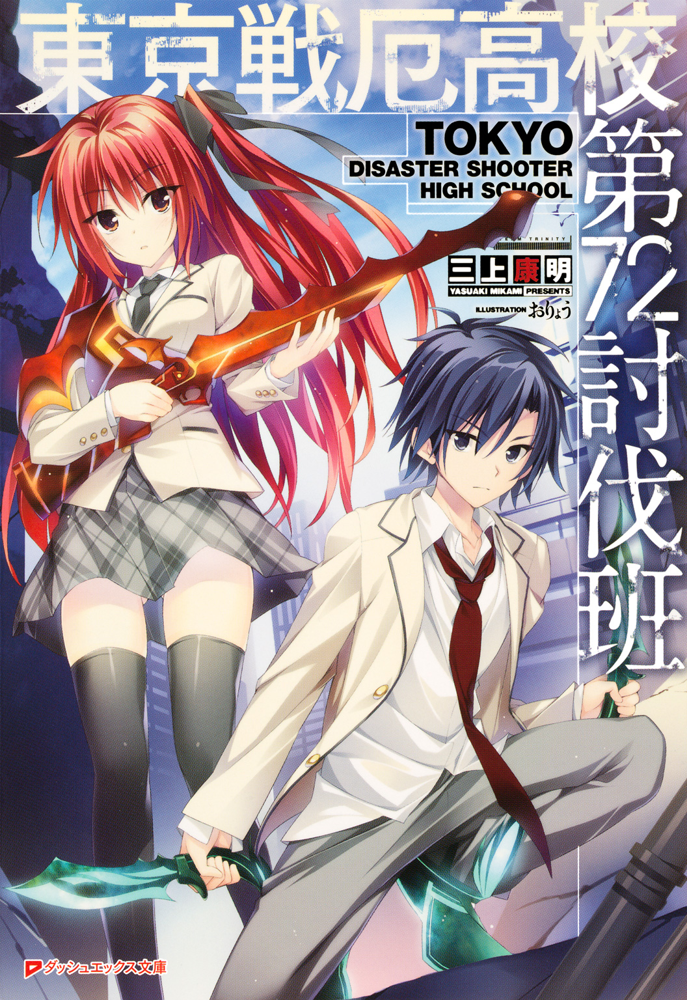
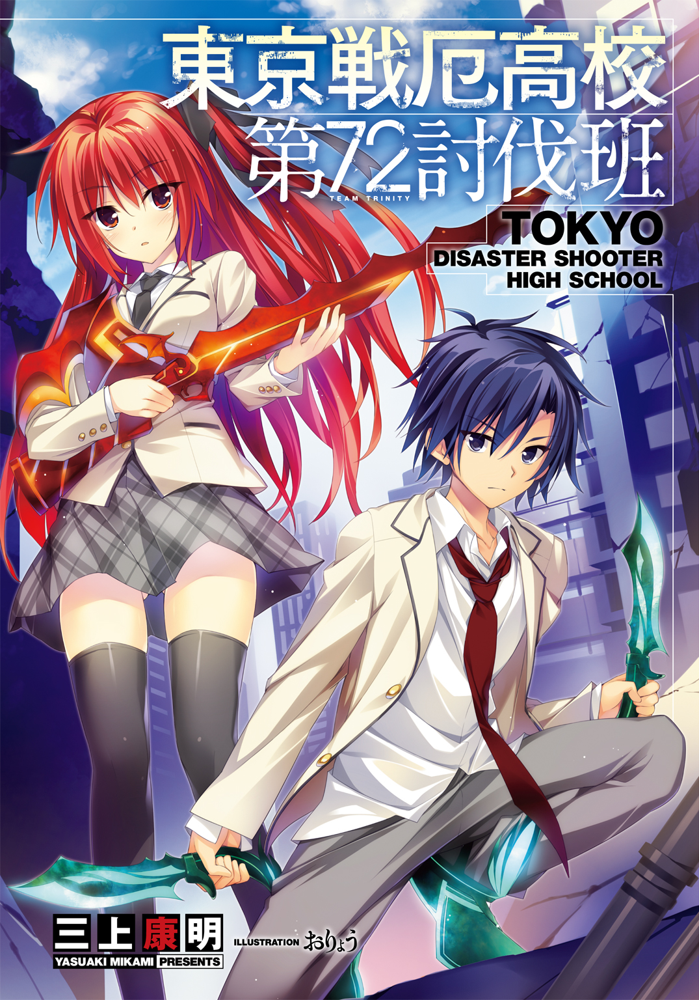
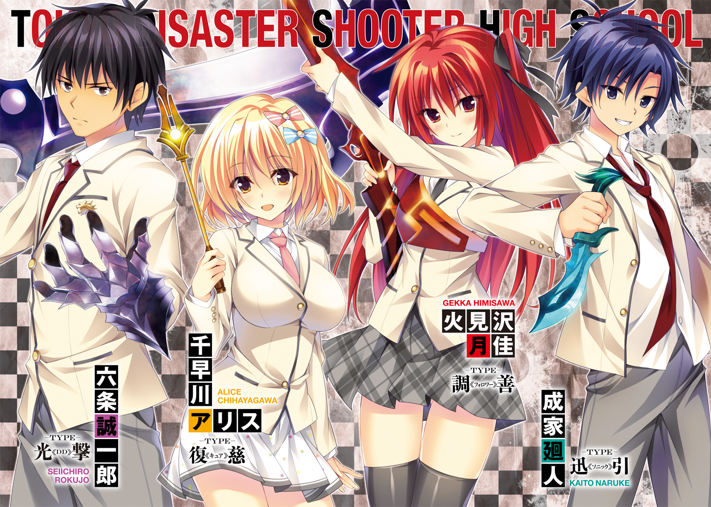
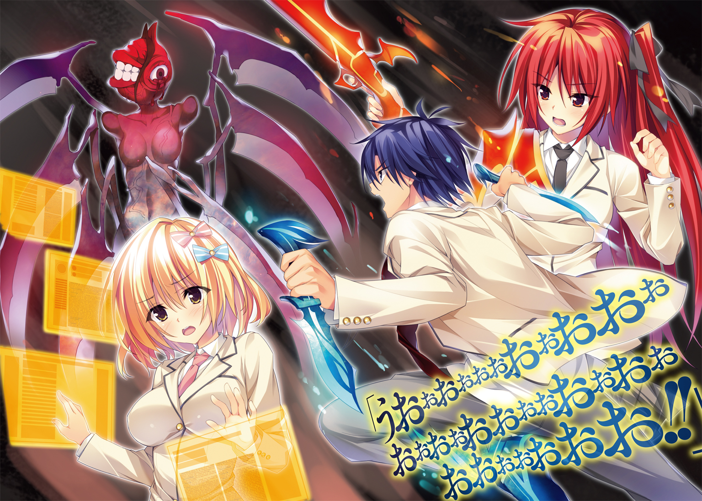
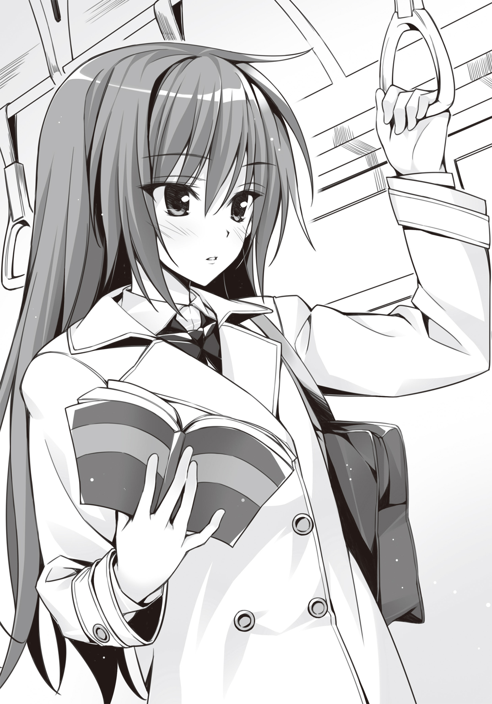
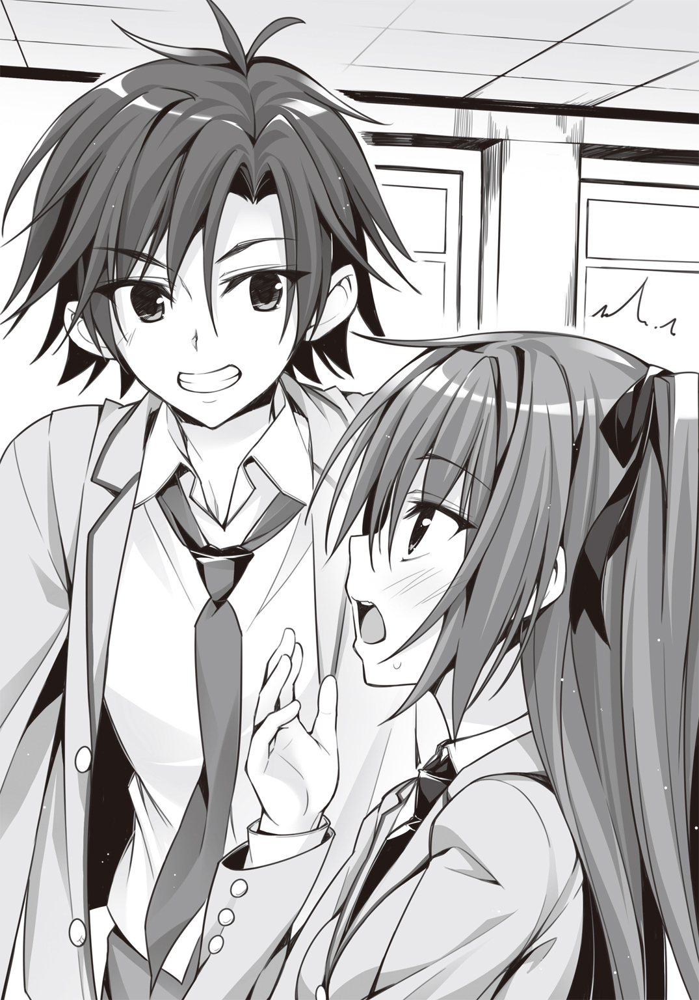
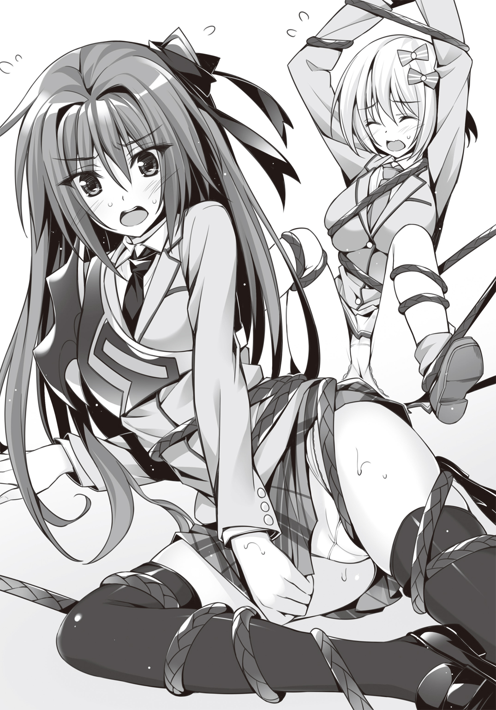
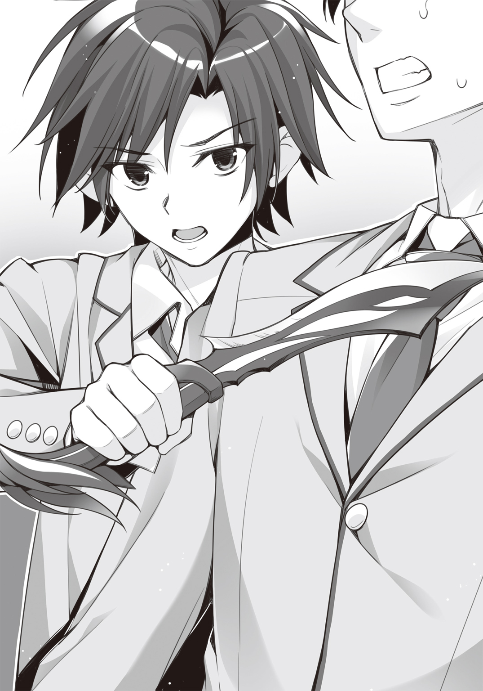
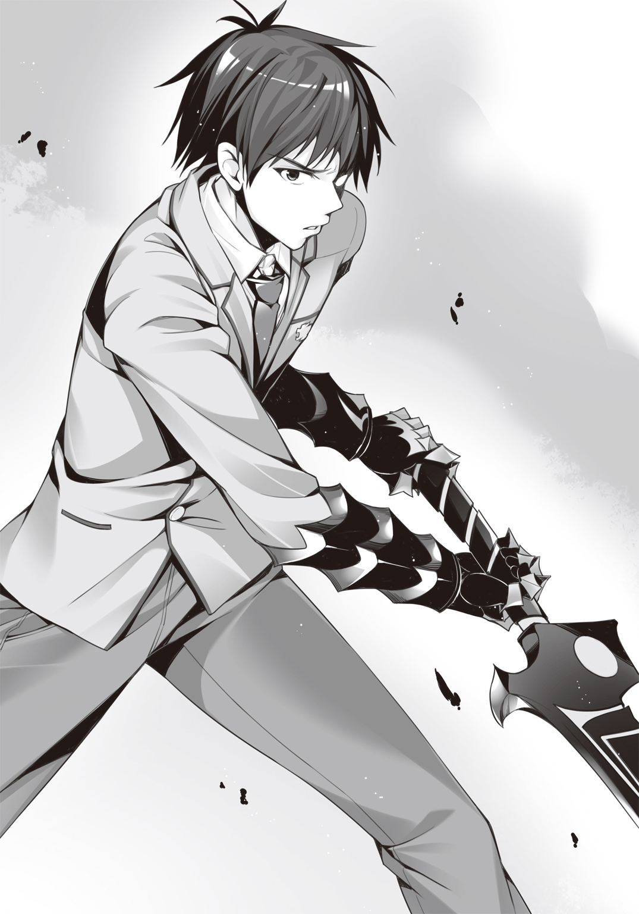
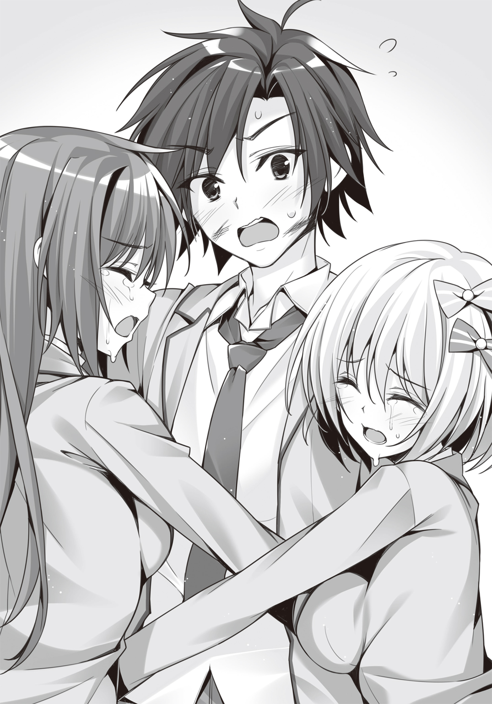

| 東京戦厄高校第72討伐班 | |
| 三上康明 | |

この本は縦書きでレイアウトされています。
また、ご覧になる機種により、表示の差が認められることがあります。



 ダッシュエックス文庫DIGITAL
ダッシュエックス文庫DIGITAL
東京戦厄高校第72討伐班
三上康明
Ｐｒｏｌｏｇｕｅ
日本中の電信柱にその観測機が取り付けられてから、もう十年。
サッカーボール程度の大きさの球体で、色は黒。
半径一〇〇メートル圏内に一つは設置されており、日本国内では五百万個を数える。
あまりにも大量、と言っていいだろう。
維持費だけで年間三百億円という国家予算が使われ、今なお増産が続けられている――「災厄」以後の大ヒット商品、だなんて皮肉が聞こえてくるほど。
しかしこの観測機を撤去しろ、という声はまったく聞こえてこない。
なぜならば人間の命を守るのに必要不可欠だからだ。
この黒い球体、「災厄警報」は人々を見下ろす高い位置で今日もじっと観測している。
揺れるバスの車内、左手でつり革につかまっていた。
火見沢月佳は右手に英語の参考書を開き、真剣なまなざしをじっと注いでいる。
整った顔立ちだ。肌はすべやかで車内の暖房のせいか頰がほんのり紅潮している。小ぶりな唇はピンク色で、テキストに合わせて少しだけ動く。
長いまつげと、熱心な瞳の色は――紅。燃えるような紅。
紅は、瞳だけではない。肩胛骨まで伸びている美しい長髪もまた紅だ。パールホワイトのＰコートに、月佳の紅い髪がよく映えている。
しかしこの紅は、取り立てて周囲の視線を惹いていない。「災厄」以降、生まれた子どもたちの特徴だからだ。
「ふう......」
息をついて車窓から外を眺めた月佳は、街並みの切れ目からほんの一瞬、海を見た。
湘南の海。きらきらと光った海面――冬空を映す青い海。
二月の今、海水浴シーズンではまったくない。でも海の美しさは一年を通じて同じだ。
見た景色が消えないように、そっと目を閉じる。
三年間、過ごすことになる町。
東京新都鎌倉区。
（......それもこれも、今日の入試に受かったら、だけどね）

次に目を開いたときには、バスは街中の道、交差点にさしかかっていた。
そのとき、だった。
対向車がなにかに乗り上げて大きくバウンドした。
ハンドルを取られた車が歩道に乗り上げて民家の外壁へと突っ込む。
急停車したバス。月佳はつり革を握りしめて衝撃をこらえる。
バス車内で上がる悲鳴――それをかき消したのはサイレンだ。
ディンディンディンディンディンディンディンディンディンディンディンディンディンディンディンディンディンディンディンディンディンディンディンディンディンディンディンディンディンディンディンディンディンディンディンディンと短い間隔で鳴り続ける。
音の発信源は交差点――の、上。
信号機の支柱に取り付けられた観測機が赤く光っている。
月佳は知っている。その、色が意味するところを。
中心から半径一〇〇メートル以内は赤。
三〇〇メートル以内はオレンジ。
六〇〇メートル以内は黄色。
一キロメートル以内が白。
《災厄技術庁からお知らせいたします。「災厄の種」の「発芽」を確認いたしました。発生地は東京新都鎌倉区――》
観測機から、サイレンを割って機械的な音声が入ってくる。
赤ということは、近いところに出現したということだ。
おそらく、車が乗り上げたなにかだ。
《災厄レベルは１ｓｔです。速やかにこの場から離れるか建物内へ避難してください。繰り返します。速やかにこの場から離れるか、建物内へ避難してください》
交差点内には急ブレーキを踏んだ乗用車が入り込んでおり身動きが取れなくなっている。
運転手たちは車から飛び出すと走って逃げていく。
このバスとて、前後を乗用車に挟まれているから移動は不可能だ。
「ドアを開けて！」
月佳は参考書をバッグに突っ込むとバスの運転席へと向かった。
「車では避難できないわ！ 早くして！」
「あ、は、はいっ」
ぷしゅーと前後のドアが開くや月佳は外へと飛び出した。
交差点を中心に人々が放射状に逃げていく。
近くのコンビニはシャッターが閉まり、バイクが猛烈なＵターンを決めて遠ざかっていく。けたたましいサイレン。だが、人々は混乱することなく冷静に、迅速に、待避する。
これは、慣れかもしれない。
危機への、慣れだ。
だけれどこの警報に直面し、緊張しない者はいない――月佳の心臓がばくんばくんと強く鼓動を打つ。
月佳がそれを見るのは初めて、だった。
盛り上がった地面、飛び出しているのは薄青い半透明の鉱物だ。
いや、鉱物と言うよりラグビーボール状のガラス細工のようだ。
表面はカットされ、すべて六角形の幾何学的な断面が組み合わさっている――。
「急がなきゃ......！」
月佳はそれのある交差点を警戒しつつ、民家に突っ込んだ車へと急ぐ。
壁を突き崩してボンネットはつぶれていたけれど、他は無事だ。
役目を終えたエアバッグがだらりとハンドルに垂れている。
「大丈夫ですか！」
運転席のドアを叩くと、うめき声が聞こえた。初老の男性――気絶から目を覚ます。
なんとか降りてくる運転手を月佳が支える。
「歩けますか？」
「私は大丈夫だ......ありがとう。災厄警報が鳴っているというのに、君は勇敢だ」
「――勇気くらいしか、私にはないの」
交差点にあったそれは、今――変化していた。
パキッ、ピキ、パリン。
六角形が割れ、剝がれていく。
中から出てきたのは二本の角――それも半透明の美しい色合いを持っていた。
のそり、のそりと、前足、後ろ足、と交互に動かして出てくる。見た目はクワガタに近い。だが足の数は四本で、翅がなく、目玉が頭の中央にひとつあるきりだった。
全身は薄い青色。透き通っていた。ガラス細工の置物みたいだ。だが、動いている。体内を黄色く発光する光が流れていて、動いている。
ギチギチギチギチ――それは、角のように見えていた二本の巨大な牙を左右に広げた。
「早く、逃げてください......早く！」
運転手の背中を押して彼を先に逃がす。
交差点へと振り返ると、それもまた、月佳を発見する。
この生命体は「災厄」と呼ばれていた。
カチンカチンカチン――まるで歓喜するように牙と牙を打ちつけた。
それほど大きくはない。せいぜい両腕で抱えられる程度だ。
災厄は走り出した。
車のボンネットからルーフへとジャンプする。鋭い爪がルーフを削り取る。
一直線に、月佳へ向かって走ってくる。
とてつもない速度に、月佳はあっけにとられた。
実際に動いているのを、目の前で見るのは初めてだった。
あんな――ガラスのような、機械のような生命体が、こんなにも機敏に動くなんて。
災厄は車の上から、跳んだ。
虫が羽ばたくように。
肉食獣が草食獣に飛びかかるように。
見開かれた月佳の目に、災厄が映し出される。
驚きに、恐怖に、動けなかった。
今、動かないことが「死」に直結することだとわかっているのに。
「ぃぃぃいいいいいいいやぁっふううううううううううううううううう!!」
災厄と月佳の間に滑り込んだ少年がいた。
軽々とした身のこなし、そして――制服。見たことのない学ラン。
「ライジングキィィィィック!!」
アホみたいなかけ声とは違って鋭い一撃だった。
びゅおっ、と風を切り裂いた蹴り上げは災厄のボディに直撃する。
重いものが激突する、鈍い音が響き渡る。
蹴り飛ばされた災厄は、背中から地面に激突した。
「――――――――――――――――――――――――――――――――――――――」
足を真上へ蹴り抜いた形で止まった少年は、
「――いっでええええええええええええ!? なん、これぇ!? めっちゃかてぇし重いし!?」
片足ケンケンで足を抱え込むのを見て、月佳の意識が戻ってくる。
「あ、あ......あ」
「おう、お礼は別にいいぜ......ってかこれ、痛くないし、たいしたことないし、ちょっとびっくりしただけだし、ほんとに痛くないし！」
「あ、あ――」
「これ涙目とかじゃないから！ ちょっとね、目にゴミがね、そういうのだから――え？」
月佳の指した指先――災厄はまったく動じることなく、くるりと起き上がったのである。
そして、カチンカチンカチンと牙と牙をぶつける。
「......やっぱり、そう簡単にはノックダウンしないっすよねえ～」
「く、来るっ」
災厄は再度走り出す。今度は少年に向かって一直線に。
「よっしゃ――」
少年は、
「――逃げっか」
災厄に背を向けた。
「え？」
そして月佳の手をつかんで走り出す。
「えええええええええええ!?」
「走れ！ 死にてえのかよ！」
もつれるように走り出したが災厄の動きは相当速い。
「だって、今、なんか戦いそうな雰囲気だったじゃない!?」
「じゃーお前やってみろよ！ めっちゃ足痛いんだぞ！」
「災厄相手にキックなんて効くわけないわよ!?」
「俺のライジングキックを受け止めたのはあいつで十五人目だ」
「結構多い！ ――って、もうすぐそこに」
数歩の距離に、迫っていた。
災厄が牙を広げる。
飛び出す。
宙を舞う。
「武装召喚」
ふたりの前方から涼やかな声――すらりとした金髪碧眼の少年が立っていた。
着ている制服はブレザー。首元にはワインレッドのタイ。
彼は、制服には不釣り合いな武器を手にしていた。
洋弓。アーチェリーでも使われるコンパウンドボウ。
その色は翠――翡翠のような色は、きわめて透明度が高かった。
少年と月佳は同時に身体を伏せた。彼が、弓を構えたからだ。
つがえたのは翠の光に包まれた矢。
引き絞ったかと思うと、即座に放たれる。
ヒィウッと空気を切り裂く音は後から聞こえてきた。
矢は災厄に命中した。真正面に。災厄は後方へ吹っ飛んでいく。
追撃で二射目、三射目が放たれ、災厄が地に着くよりも前に残りの矢は命中した。
災厄は地面に叩きつけられ、転がっていく。
「察するに......ネケ＝イニキタスか。哀れな、小さき、生き物よ」
腹に三本の矢を埋め込んだまま、痙攣し――色彩が失われる。最後は灰色へと変わった。
「死んだ、のか？」
「すごい......」
至近距離、動いている敵。
にもかかわらず彼は速射し、すべてを命中させた。
どんな状況でも実力を発揮できる、積み上げられた練度。
武装解除した少年を、驚愕混じりの視線で月佳は見つめた――。
そんな彼は両腕を広げるや、目を閉じた。
「............春の空気は、騒がしい。花見の酔客ならばまだしも、暴力に身を委ねる災厄はいただけない。甘い春の風に血のにおいが混じる前に、僕がここに到着してよかった――」
「は？」
いきなりなにを言いだしたのか。
きょとんとする月佳とは裏腹に、いったいどこにいたのか、車の陰から、家の塀の裏から、人々が出てきて一斉に拍手を送った。
「さすがだねえ」
「宮野くんがいたら安心だ」
彼の胸元には金色のバッジが輝いていた。
鎌倉区にある高校の校章、獅子をモチーフとしたバッジだ。
「そうか......この人が」
月佳は納得した。彼の、実力にも。
「この人が、なんなんだ？」
「災厄と戦うために設立された東京戦厄高校。そのトップチーム『黄金獅子』だけが着用を許される金色のバッジ......」
これぞ強さ。
これぞ武力。
これぞ――人類の希望。
月佳は自らの手を押さえる。恐怖の後遺症だろうか、右手の指先が震えていた。
「すげーな......俺が目指してるものはやっぱりすげーよ」
「――もしかしてあなたも、東京戦厄高校の受験に？」
少年は胸を張った。
「俺は成家廻人。最強のシューターになる男だ。よろしくな！」
差し出された手を握りかえすべきかどうか考えてから、
「......それは入試に受かってから言うべきじゃない？」
「おっ、それもそーだな！ あっはははははは――」
高笑いした途中で廻人が、止まる。
時を同じくして月佳も、止まった。
「入試!! 遅れちゃう!!」
「やべえ、今何時だよ!?」
ふたりは自分のバッグを探し、拾い上げると走り出す。
向かう先は、同じだ。
「もぉぉぉ、遅刻で失格になったりしたらサイテーよ!!」
「あっははははは」
「なに笑ってんの!?」
「いや、ほんとはこの災厄との遭遇が実は入試の一部とかそういう......ドラマみたいな展開はさすがにないよなあ、全然ないわこれ、って思うとなんかすげえおかしくなってきて」
「黙って走るか走るの止めて帰って」
「お前結構ひでーよな!?」
ふたりは、大騒ぎしつつも全力疾走で学校を目指した。
そして入学試験の、結果は――。
国立東京戦厄高校――東京新都鎌倉区に設立された、日本に九つある戦厄高校のうちのひとつである。二〇〇を超える「災厄討伐班」が存在し、生徒によって構成されている。
生徒たちは災厄の甲殻より造られる対災厄戦闘兵器「生体響刻武装」を装備し、これを操る技術を学ぶ。
彼らは、やがてこう呼ばれる――「災厄を討つ者」と。
Ｃｈａｐｔｅｒ Ⅰ
Ⅰ
《新入生諸君――君たちがこの学校へやってきた理由は、様々だろう。災厄を討ち滅ぼしたいという高邁な志、家族の仇、家庭の事情、単に暴れたいだけ......理由がなんでも構わない。我々が必要としているのは『災厄と戦う』という強い意志だ。
だが、入学式のこの日、君たちは知るべきだ。今この場にいるクラスメイトが三年後、同じ顔ぶれで卒業式を迎えられるとは限らないことを。任務の途中で殉職する可能性を。失われた犠牲を乗り越え、我々は進まなければならないことを》
しん......と静まり返った講堂にマイクを通した声が響く。
話す主は威風堂々としていた。
身長は一八〇センチを超え、制服の下にはしなやかで強靱な筋肉が躍動している。
さらりとした髪は、ぬらりと光るような黒だ。
感情ひとつ見せない怜悧な黒瞳。
胸にあるバッジは「黄金獅子」――「戦厄高校史上最強」と囁かれる少年である。
東京戦厄高校生徒会長、六条誠一郎だ。
《歩むべき道がわからなくなったら、今、このとき、胸にある意志を思い出してほしい。我々がなろうとしている『災厄を討つ者』に必要なものは『災厄と戦う』という『強い意志』に他ならない。意志があれば、倒せない敵はない。乗り越えられない困難はない。
ここにいるすべての新入生に、『強い意志』があることを期待している。
ようこそ、戦厄高校へ。
災厄と戦うためだけに存在している学校へ。
人類を守る最前線へ。
私は君たちを歓迎する》
窓の外には桜が満開だ。
暖かな日射しはこれからの前途を祝福しているように感じられる。
教室のざわつきは止まなかった。
入学式が先ほど終わり、初めて足を踏み入れた教室には知らない顔ばかり。
このクラスに限らず、新入生全員が「災厄以後」に生まれた象徴である髪の色、目の色を持っている。赤、緑、黄色といった様々な色が教室内を彩る。
ほぼ全員が「初めまして」状態でお互いの出身地をたずねたり、どんなマンガが好きで、ゲームをやって、音楽を聴いてきたのか――当たり障りのない会話を続けていた。
しかし、無秩序に見えるざわめきにも中心人物がいた。
火見沢月佳はすでに話題の少女だった。
入学試験の学力項目がトップだったから、新入生代表のあいさつをこなした。
体力測定でも女子レベルではない好成績。特殊科目の「射撃」においては歴代最高点。
生体響刻武装の「響刻値」適性検査もきわめて高い数値――学年に一人いるかどうかという「Ａプラス」である。
響刻値とは使用者が生体響刻武装と相性がいいかということを示すひとつの指標だ。これは遺伝子レベルで決まるので、「才能」と言ってもいいだろう。
それだけではなかった。
「火見沢さんって名前変わってるよな、って思ったけどマジであの『ホムラ』の家なの？ 自動車メーカーの？」
「すっげー。うちの親父もホムラのＳＵＶ乗ってるよ」
「昨日ニュースになってたじゃん。新車発表って」
火見沢家は日本でもトップスリーに入る自動車メーカー「ホムラ」の創業者一家だった。「ホムラ」の時価総額は現在一〇兆二千億円。火見沢家の総資産は推定一兆円超えと言われているが、実態はそれより多いとも言われ真実は定かではない。
もちろん彼女の成績や氏素性だけが惹きつけているのではなかった。
紅い髪はブレザーである制服によく似合っていたし、下に穿くスカートは生徒の自由に任せられているが、月佳は上品なチェック柄だ。彼女がにっこりとすれば男子だけではなく女子もまた一瞬うっとりとしてしまうほどの破壊力があった。
そんな空気を破ったのは、ひとりの少年だった。
「あー！ お前！」
青色の短髪、ブレザーを着慣れてないどころか着させられているような状態でシャツもだらりと外に出ている――成家廻人だ。
「――あなた」
「よう！ お前も受かったんだな。あんときは入試やばかっ」
「入試で不正でもしたの？ あなたが入学できるレベルの試験じゃないと思うのだけど......」
「ふごぅ!? なにさらっとキツイこと言ってんの!?」
「だってあなたバカっぽいし」
「あっはははは。まー、バカっぽいってよく言われるけどなー」
廻人はにかっと笑った。
「事故の影響なんか、お前にゃなかったってことかな？ クラスメイトっぽいし、お互いがんばろーぜ。そんじゃ」
「..................あ」
彼は、災厄を前に動けなかった月佳の前へと滑り込んだ。
こともあろうに災厄に蹴りをくれた。効くわけもないのに。
でも、あれがなければ――月佳は災厄に食われていたかもしれない。
右手の指先が震えていた。
「あの――」
言いかけた月佳だったけれど、
「おーい、お前らみんな座れー」
ボディラインがはっきりわかるスーツを着た女性が教室へ入ってくる。ジャケットをボタンひとつで留めていたが、盛り上がっている胸のせいで今にも取れそうだ。腰のくびれのラインを見て「おお......」と思わず声を漏らす男子生徒までいた。
彼女は長い黒髪を頭の上で団子にし、知性を感じさせる雰囲気のメガネをかけていた。
「やあー、担任の仁科だよ。今年もちゃんと生徒が入ってきたようでよかったよかった。入試の前後でシューターの殉職が報道されるとたいていドタキャンが大量発生するんだけど、今年は死んでないしね。アハハッ」

見た目とは裏腹にどぎつい言葉を放たれる。
浮ついた空気が急速に冷え込んだ。
「ん～、表情が引き締まったね。そういう顔、私は好きよ？ では災厄討伐班について発表したいと思いまーす」
いきなりの話題転換にまたもざわめきが教室に広がる。
「災厄討伐班」――通常、「討伐班」と呼ばれる。
生体響刻武装を使用して災厄と戦うにあたり、現代戦術の最先端は「チーム戦」だ。
明確に役割を分担した三人から五人で討伐班――チームを構成し、戦う。
この学校で学ぶ戦い方も、すべてはチーム戦のためにある。
「先生。災厄討伐班の発表とおっしゃいましたが、すでに班分けは行われており、それを発表する段階であるということでしょうか？」
すっ、と手を挙げて月佳がたずねると、
「もちろん、そうだよ」
「討伐班はシューターごとの性格や相性が非常に重要かと思います。私たちは会ったばかりでお互いのことを知りません」
「もちろん、そうだよ」
同じ言葉を繰り返した。
「だから、私が勝手にくじ引きで決めても同じだよね？」
え、と固まる月佳――だけでなくほとんどの生徒の硬直を無視して仁科は続けた。
「ちなみに学期の変わり目で討伐班は変更可能なので安心してね。あ、それと今から発表する討伐班でこれから模擬戦やるから、服はそのままでバトルルームに集合～」
模擬戦、という言葉に硬直はざわつきへと変わる――不穏なざわつきへと。
「お言葉ですが先生――」
「黙れ、火見沢月佳」
仁科は斬って捨てた。
「君たちは好きでウチに入学した。私たちは強制なんかしていないし、入ってきた以上、手加減するつもりはない。――もういっちょ教えとくけど最初の一年で全体の三五パーセントが自主退学するのが毎年の平均ね。では最初の討伐班、第六三討伐班四名～」
実に楽しそうに仁科は言った。
戸惑いを隠せない生徒がほとんどだった。
名前を次々と読み上げていき――そして仁科はその名前にたどり着いた。
「最後は三人チームだね。第七二討伐班、火見沢月佳、千早川アリス、成家廻人。以上」
Ⅱ
「お前も幸運だよなー！ 最強のシューターになる俺と同じ討伐班なんだもんな！」
奇縁というか、ただの偶然というか。またしても遭遇してしまったこのクラスメイト。
しかも廻人は、月佳を特別扱いしない。
超有名企業の創業者一家の娘であろうとなんだろうと。
「......とりあえず、入試の日のことだけど。あなたにひとつ言っておきたいことが――」
「そういやもうひとりのメンバーはどこだ？」
月佳の言葉を遮り、余裕で無視して廻人はきょろきょろする。
ぐぬぬと右手を握りしめた月佳は、絶対お礼なんて言ってやらないと決意した。
ここは「バトルホール」――体育館に併設されているチーム戦専用の施設だ。
六角形のホールは二階に観客席があり、映画館のように傾斜がついて並んでいる。
中央には六角形のエリアがあり、その周囲に六つの模擬戦用ステージが展開していた。
仁科のクラスの生徒しかいないようで貸し切り状態だった。
「は、はひっ、お待たせ、しましたぁっ......み、道に迷っちゃってっ......」
ふたりのところへやってきた少女は息も絶え絶えだった。
「あ、あのあの、ふつつか者ですが、どうぞよろしくお願いしますっ」
ぺこっ、と頭を下げ、彼女のセミロングの金髪がふわりと揺れた。
背の低い少女だ。金髪は肩の上で柔らかく内側に巻いている。
月佳と違って穿いているスカートはポップなドット柄だった。
「道に迷った、って......私たち、まとまって移動してきたじゃない」
「最初はいっしょに教室を出たんですけど、窓の外をちょうちょが飛んでて、『あ、春ですよね～』ってほんわかしてたんですよねえ。春ってアリス大好きなんです。あったかくって、気持ちよくって......あれ？ なんの話でしたっけ？」
「............」
月佳は真顔になったが、もはやなにも言わなかった。
「はいはーい、注目ー。それじゃ響刻構成体を配りますよー」
仁科が段ボール箱から無造作に半透明の棒を取り出した。
「ぷれーん、ぐりっぷ？」
小首をかしげるアリスに廻人が説明する。
「生体響刻武装を発動するのに必要なデバイスだよ。握りしめて『武装召喚』と発声すると武装に変わるんだ。くぅ～、ようやく俺の武器が持てるってわけ！」
「わあ、すごいですね～」
「すごいだろ～」
自分自身がすごいわけでもないのに廻人が得意げに言う。
「発現するシューター・タイプは遺伝子レベルで決まってるし、武装の種類も決まってるんだ。こればっかりはどうやったって変わらない」
「シューター・タイプって......八種類のやつでしたっけ」
「そう。俺たちみたいにチームを組む場合は、あらかじめデバイス同士をチーム設定にしておくんだ。で、シューター同士が連携して戦えるようになる」
「おおぉ......すごいです！」
「すごいだろ～」
相変わらず、自分がすごいわけでもないのに廻人は得意げに言った。
「おーい、成家、千早川、火見沢。取りにきなさーい」
仁科に呼ばれて三人は響刻構成体を取りに行く。
三人はそれを、初めて手にした。
大きさはリレーで使うバトンと同じくらいだ。
ずっしりと、重い。
中央はメタリックな円柱であり、中には機器が埋め込まれている。
指のへこみがあり、握り込むようにできていた。
学生証のナンバーが刻印されてある。
自分だけの響刻構成体。ぴかぴかの新品だ。
ガラス細工のようにカットされた、半透明の棒が左右に飛び出している。
先端は丸くなっているが、カットされた面はたいていが六角形を描いていた。美しい光が棒の内部を漂う。人工では生産不可能な材質であるため「災厄」の身体をリサイクルして造られる。
人類にとって究極の敵、災厄を滅ぼす唯一無二の武器だ。
「............」
ぶるっ、と武者震いが月佳を襲った。
これが――生体響刻武装。
これこそ、月佳がこの学校に求めてやってきた「力」。
未来を切り拓く力だ。
「もう、君たちの身体に調整はされているから、チーム戦が始まる前に起動してみて」
逸る気持ちを抑えて月佳は口を開いた。
「武装召喚」
ヴン――と響刻構成体を握る右手が震えた。
月佳の瞳と同じ、紅い光が響刻構成体の中に満ちていき、一瞬、目を細めなければならないほどの光を放つ。
響刻構成体から放たれた光は月佳の右肩――制服にもまとわりついていた。
戦厄高校の制服は戦闘服としても使われる。
生体響刻武装と同じ素材が編み込まれており、武装展開とともに反応するのだ。
「――これが」
光が収まったとき、月佳は握りしめていた。
それは紅のショットガンだった。
半透明、精巧なクリスタル細工のようで、内部に紅い光がきらめいていた。
炎をまとっているかのようだ。
響刻構成体のグリップはショットガンの銃把の一部となっている。
ガンの形状は水平二連。
銃口が左右にふたつ並んでおり、一度の弾込めで二回撃つことができる。
トリガーに反応する撃鉄は竜の細工がなされてあった。
制服へは発射の衝撃を受け止めるプロテクターが右胸から右肩にかけて現れていた。
しかし――実はこのショットガン、災厄を攻撃するためのものではない。
月佳のシューター・タイプは「調善」という。
ショットガンが発するのは光。
チームメンバーの武装能力値を上昇させる、サポートタイプのシューターなのだ。
廻人もまた自分の生体響刻武装を起動しようとしたが、反応しなかった。
廻人の響刻構成体は月佳のものとは少し違い、グリップが長い。
ならば、と廻人は両手でつかむ。
「武装召喚！」
ヴン、と響刻構成体に埋め込まれたシステムが起動する。
目にも鮮やかな青の光がほとばしる。
「お、おおおおっ......」
彼が手にしていたのは二本のダガーだった。
鮮やかなブルーの刀身には流れる風の紋様が刻まれてあった。
特徴的なのは足下だ。ローファーを囲って展開している、青色のブーツ。
くるぶしの部分に関節があり、膝下までを包んでいた。
「これが......生体響刻武装」
廻人は武器を握りしめる。
「ようやくスタートラインに立てたってことだよな......。なるぜ、最強のシューターに！」
一方のアリスは、仁科に叱られていた。
「ええ？ どうして千早川はＰＣ持ってきてないの？」
「すすすすみませんんんんっ......」
「しょうがないなあ......じゃ、これ使って」
仁科が手渡したのはキーボードだった。
アリスが電源をオンにすると立体画面がキーボードの上部に出現する。
「え、えっと......武装召喚ぅ！」
アリスの瞳と同じ、金色の光が響刻構成体に満ちていく。
棒はわずかに伸びて片方にこぶができた。ショートワンドだ。
変化は画面に起きていた。
大量の情報が文字列となって画面にあふれていき、三画面が左右、上へと現れる。
「は、はわわ......」
おろおろするアリスに月佳が眉根を寄せてたずねる。
「あの......千早川さんって......『復慈』なの？」
「は、はいぃ」
涙目で、拾うように画面の文字を追うアリス。
「復慈って......破損した生体響刻武装を修理できるシューター・タイプよね？ 復慈はチーム編制に組み込まれない特別タイプだったはずだけど」
八種類あるシューター・タイプのうち唯一、前線で戦うメリットがないのが復慈だ。
というのも、武装が破損したシューターは前線から撤退すればよいのである。
安全地帯まで撤退してから修復すればいい。
そのため復慈は、復慈だけのチーム――「討伐班」ではなく「修復班」を作ることが一般的だった。
「こ、今年は復慈の入学者が多かったみたいで、特別クラスに入りきらなかった生徒が、一般チームに入るとかで」
「そんなの学校の勝手じゃない」
「ごめんなさいぃっ」
ぺこっと頭を下げるアリス。
「おい月佳......アリスをいじめんなよ」
「な、なんてこと言うのよ。別にいじめてるわけじゃ――え？」
廻人を見た月佳が固まる。
「ん？」
月佳は廻人を指差し、足下を指差し、手に持ったダガーを指差し、口をぱくぱくさせ、
「あなた......『迅引』なの......？」
うろたえるのも無理はなかった。
こればかりは、アリスの復慈以上に――あり得ない。
迅引――それは。
八種類のシューター・タイプで「最も役に立たない」と言われているタイプなのだ。
迅引とは、軽武装、回避に特化されたタイプだ。
言うなれば足が速い――以上。
「迅引さんはどんなことをするんですかぁ？」
「機動力を活かして災厄の攻撃を回避し、隙を作りだすんだ」
「おぉ～すごいです！」
「すごいだろ～」
廻人の言うことは正しい――のだが、現在主流の戦術は、迅引ではなく「防闘」が災厄を引きつけるというものだ。
このとき月佳が見たのはアメフト部に入るつもりだというクラスメイト。
彼は防闘だった。
カイトシールドと、短槍を手にしている。身体中に重鎧のようなプロテクターも。
防闘は攻撃よりも防御に特化している。
さらにこの巨大な武装は特殊な周波数を持ち、災厄を引きつける性質がある。
迅引にはこの周波数を発する機構が存在しない。
つまり災厄の引きつけ役としては防闘がいれば十分なのである。
「ん？ 月佳は調善か。流行のシューター・タイプだな！」
廻人の言うとおり調善はどんな戦術でも活用される人気のシューター・タイプだった。
それに比べて迅引は――。
「んん？ なんだよその目。お前、俺のことお荷物とか思ってんじゃないだろうな？」
「思ってるんじゃなくて、確信してるんだけど......」
「くくく、そう言えるのも今だけだぞ？ 俺の試験成績はなんと――全項目、迅引の中で学年で一番か二番だったんだ！」
廻人は胸を張った。
「今年の迅引は学年でふたりって聞いたけど......」
「ひえええぇぇぇバレてるぅぅぅぅ！」
とんでもない討伐班だと月佳は思った。
お荷物の迅引。
後方部隊のはずの復慈。
そしてサポートすべき相手のいない調善。
それはでたらめにバランスの悪いチーム――いや、チーム未満かもしれなかった。
「全員発動したね？ それじゃチーム戦の相手を発表するからー」
仁科が廻人たちの相手に指名したのは、先ほどの防闘がいる討伐班だった。
「お、相手はどんなんだ？」
まったくこたえたふうもないように、廻人が月佳にたずねる。
「......防闘、光撃、遠炎、停鈍」
光撃（ダメージ・ディーラー）は近接攻撃に特化したタイプ。
遠炎は遠距離攻撃に特化したタイプ。
停鈍は敵の動きを鈍らせることに特化したタイプ。
つまり、防闘が敵を引きつける間に、光撃と遠炎が敵をぼこぼこにし、不意の襲撃にはとりあえず停鈍が足止めできる――そういったわかりやすいチーム連携が可能だ。
「そっかそっか。それじゃあ軽～くもんでやろうかね」
それでも廻人の自信は揺るがない。
「一応聞くけど......あなたの自信の根拠はどこにあるの？」
「そりゃー、そんなもん」
廻人はもう一度胸を張る。
「ない！」
「............」
「ない！」
「............」
「な」
「もう言わなくていいから」
月佳がかぶりを振って歩き出そうとしたとき、
「なあ――月佳。お前もあんまり無理すんなよ？ 手、震えてんじゃん」
「！」
驚いて自分の右手を見る月佳――指先が小刻みに震えていた。
「......たいしたことないわ」
月佳は右手を握りしめた。
たいしたことない――そうだ。チームのバランスの悪さに比べれば指の震えなんて。
Ⅲ
人間相手に生体響刻武装を使用することは法律で禁じられている。
だがチーム戦は戦厄高校のカリキュラムに組み込まれている。
目的は、自分たちの生体響刻武装の力を確認し、武装に慣れることだ。
生体響刻武装には安全装置が組み込まれており、戦厄高校の制服を着用していれば攻撃が身体には直接当たらない（もちろん衝撃や振動という形でダメージは身体に伝わるが）。ゆえに、ある程度の安全は確保されている。
「よーし、それじゃお互い展開しろー」
廻人たちは六角形のバトルエリアに足を踏み入れる。こちらは三人、向こうは四人だ。
足下は黄色のマット。柔らかい。エリアの境界線は赤色で区切られている。
バトルエリアはかなり広く、教室が四つぶんくらいだろうか。
相手チームはアメフト部の防闘を先頭に、光撃の男子生徒と遠炎の女子生徒が二列目、停鈍の女子生徒が三列目という形だ。
「成家くん。一応聞いておきたいのだけど、あなたの響刻値はどれくらいなの？」
「............」
「調善は響刻値を上昇させるのよ。大体ワンランクだけど」
「..................」
「......どうしたの？ 響刻値を聞いただけだけど」
「........................」
廻人はじっと黙り込んでからぽつりと、
「......Ｂマイナス」
月佳は無言でため息をついた。
「そういう態度取るのよくないと思いまーす！ あのな、俺だってもうちょっとあるんじゃないかって思ってたよ！ でも迅引の測定器が故障してるっつって光撃のでやったら――」
「もういいから。さっさと準備して」
「ふぬうう 」
」
肩を怒らせて前面へ立つ廻人。
響刻値がＡプラスの月佳からすると、Ｂマイナスは五ランク下である。
Ｃが一般人の平均値なので、一般人よりちょっとよい程度ということになる。
「あ、あのぅ......アリスはどうしたらいいですかねぇ」
明らかに機器をもてあましているようにアリスは言った。
三つ現れている立体画面には相変わらず情報が更新されていくが、アリスにとってそれらは意味不明の文字列だった。
画面に並んでいた文字列は、「Chihayagaba Arisu」と、とりあえず名前を打ってみましたという感じ――だが自分の名前すら間違っている。
「武装の修理をするしか、って思ったけど修理なんてするヒマあるのかしら」
「そうですよねぇ......はぅぅ」
アリスはベタ座りし、キーボードを床面に置いた。
カタカタ。
空中に「shonbori」という文字が浮かび上がった。
「作戦とか考えなくていいよ。自分たちがどういう能力を持っているのか確認しなさい」
仁科が言った。
向かい合う、チーム同士。
入学試験で優秀な成績を収め、しかも話題の月佳がチーム戦に登場する。
クラス全員が注目する。
「よーし、準備いいかいー？」
廻人が深く息を吸って、吐くのが見えた。
月佳もまたショットガンを斜め下に向け、握り直す。
ゆら、ゆら......と揺れていた銃口が、止まった。
「それじゃ――模擬戦開始！」
「ウルトラダァァァッシュ！」
先制攻撃を仕掛けたのは廻人だった。
防闘に向かって駈け出すと一気に跳躍――。
「え？」
マヌケな声を上げたのは――他ならぬ廻人だった。
今、彼の姿は防闘のはるか頭上、棒高跳びでもやったのかというくらい。
相手チームを全員飛び越して、その背後に着地。
どしんっ。めきょりっ。
ブーツの武装は、衝撃に耐えきれずヒビがはいる。
「えええええええ!? なんだよこれー！」
「なにしてるの!? 逃げて！」
月佳の声が飛ぶ。廻人の正面に迫っていたのは遠炎の放った矢だ。紫色の光を間一髪かわしてごろんごろんと廻人は転がる。
「なんなのよ、あいつッ！」
月佳はショットガンを構えた。
廻人との距離は二〇メートルほど。当てられる距離――だが、
「!?」
引き金にかけた人差し指が、震えている。
「動いて――動いて――――――動けぇぇぇっ！」
無理矢理力を込めて月佳はショットガンを撃つ。
ガウンッ、という衝撃が肩に走る。
紅い光が照射される――廻人のずっと上へと。
「どうして......？」
自分の手が信じられなかった。
射撃の練習を、これまでずっと積んできた。
慣れた動作だ――けれど指が震えている。
「くっ、俺のこのミラージュステップにかかれば――ふおあっ!?」
廻人は敵チームを回り込もうとしたが、足が空回りして前のめりに倒れた。
生体響刻武装に身体が振り回されている。
ダガーの片方が前方へとからからからんと転がっていく。
「うぬぬぬぬぬ！」
両手を突いて立ち上がり、一本だけ残ったダガーを構える廻人の手に向けて、
「えいっ！」
月佳は引き金を引く。
だけれどすでに廻人は防闘へ突っ込んでいた。
当たらない。
今回は照準がどうのというより、廻人の動きが速すぎた。
廻人を追ってもう一度引き金を引いたが、射撃は起きなかった。
「どうしてよ!?」
ショットガンから紅い光は失われていた。
水平二連のショットガンだ。
二発撃てば打ち止めになり、次の射撃まで再充塡の時間が必要となる。
「ふぐんっ」
変な音が聞こえた。
廻人の右足、ブーツのヒビが深刻なものとなり完全に砕け散っていた。
すると廻人は糸の切れた操り人形のようにくたぁっとなって防闘の持つカイトシールドに正面からぶつかって倒れていた。
「壊れた......武装が？ そんなに脆いわけが――そうだ！ 千早川さん、あれ修理でき――」
月佳はアリスを振り返った。
今、アリスの目の前には天井まで届くかという七十八個のディスプレイが表示され、破損した廻人の武装を直すべくアリスの指示を待っているところだった。
「――――」
画面から月佳へと、涙目の顔を向けたアリスは、
「アリスには、わかりましぇん......」
ぐすり、と鼻をすすった――直後、
「――あぁっ、ひ、火見沢さんっ！」
しゅるしゅるしゅる......という小さな音が聞こえていた。
月佳の足下で。
それは停鈍の武装だ。ロープ状の武装であり、一度手離すと自律的に行動する。
ロープは対象の足下に迫り――複数に分裂する。
「え？ え？ えええええっ!?」
まるで触手のように相手をからめとる。
ロープは月佳の足を這い上っていく。
ショットガンを投げ捨ててスカートを押さえた月佳だったが、触手の数は十本だ。
「え、あの、なんですか、これはっ!?」
「はわわわわっ」
アリスが駈け寄って触手を外そうと手を伸ばす。
「ふひゅぅうん――」
いきなり立ち上がったアリスは立ちくらみして月佳へと倒れ込む。
ロープはふたりの足下にするするすると絡みついていく。
「ひぅぅぅうん......」
アリスも月佳と同じようにスカートを押さえるが、ロープはそれを無視して中に滑り込んでいく――ところで、
「はい、そこまでー。勝負ついたでしょう、これは」
ぱちんと仁科が手を叩いた瞬間、すべての生体響刻武装が解除された。
ロープもまた消え去って、もつれ合って倒れている女子ふたりが残されていた。
こうして成家廻人、火見沢月佳、千早川アリスのチーム初試合が終わった。
結果は――完敗。
明々白々の自爆であった――。

Ⅳ
戦厄高校は全寮制ですべての生徒が男子寮と女子寮に分かれて暮らしている。
生徒にはそれぞれ個室が与えられ、生活用の一部屋とバス、トイレがある。
月佳の部屋――入り口にだけ明かりが点っていた。
ブーツやスニーカーがそろえて置かれている。
がちゃり、とドアが閉まった。
「............」
月佳は、学校のバッグをその場に下ろした。
背中をドアにつけたままずるずるとしゃがみ込む。
「ふぇぇぇぇぇぇぇぇん............」
膝を抱きかかえるようにしてそこに額をつける。
「......もぅ、やだ、学校行きたくない......あんなひどい格好見られた......絶対パンツまで見られた......」
ぐす、と小さく鼻をすすった。
「みんな家のことばっかり言うし......私は私なの、火見沢月佳なの、『あのホムラの家の人』じゃないの......だからこの学校に入ったのに、あの家から逃げ出したかったのに......」
涙目で見つめたのは右の手のひらだ。
「............シューター・タイプが調善だってわかってからずっと練習してたのに......どうして、動かなくなっちゃったの............」
小さく震える、指先。
きっかけがいつなのか、わかっている。
入試の日、災厄と遭遇した――死が眼前に迫ったとき、月佳は恐怖に嚙みつかれた。
射撃訓練では問題ないが、緊張感のある状況では指が震えるようになってしまった。
「練習して身につけた力だけは......私を裏切らないって思ってたのに............」
ぇぐっ、と小さくしゃっくりが出た。
部屋にかけてある時計の秒針が、かち、かち、と動く。
「..................ダメ、ダメダメ、月佳！ あなたはそんなふうにへこたれちゃダメ！」
がばっといきなり立ち上がった。
「そうよ！ 困難もトラブルもなにもかも押しのけて、私は私になるの！ 火見沢月佳になるんだから！ そのためにこの学校にやってきたんだから！」
そして靴をぽいぽいと脱いで部屋に入っていくと明かりも点けずに小型冷蔵庫を開ける。
そこには――大量の、チョコレートやショコラケーキがあった。
「がんばるからひとつだけ......うん、ひとつだけならニキビもできないし......！」
ショコラケーキを取り出すと冷蔵庫を閉じもせず包みのセロファンを剝がす。
ぱくっ、とかぶりついた。
脳がしびれるような、頭が痛くなるような甘さ。
「んにゃおいひぃ!!」
たまらず月佳はころんと背中から転がる。
人差し指と親指でケーキをつまんで口に運ぶ。
甘い。うれしい。甘い。しあわせ。
「んんんんん」
赤ん坊のように身体をちぢこまらせて左右に転がる。
あっという間に食べきってしまうと、唇の周りをぺろりとなめつつ寝転がったまま足でバタンと冷蔵庫の扉を閉じた。
「ふにゃぁぁぁ..................」
そして指についたチョコレートを舐める。
いとおしそうに、最後の最後まで味わい尽くすように。
「はあ......がんばろ」
つぶやいた。
指先は、震えていなかった。
Ⅴ
不幸とは――空から降ってくるのではなく、地中から芽生えるものだと人類が知ったのはおよそ三〇年ほど前だ。
地中から生まれた「災厄の種」は「災厄」を生み出した。
災厄は様々な色に発光する甲殻でできた生命体である。
既存の武器火力がほとんど効果を持たず、爆薬、放射能すら災厄には通じなかった。
災厄には人を捕食する――血をすすって成長する特徴がある。巨大化した災厄は、サンフランシスコ全市を破壊し、北京を陥落させ、パリの郊外にも巣くっている。
人間しか喰わないために「人類の天敵」と呼ばれている。
人間が半径一キロメートル以内にいない場合、冬眠状態になるのも大きな特徴だった。
全世界百カ国以上で跋扈している災厄――日本も例外ではない。
四国全土、中国地方のほとんどが災厄によって侵され、人間が立ち入ってはいけない地域として指定されていた。
特に、東京西部、旧神奈川北部から山梨県にかけてのエリアは十年前に災厄と自衛隊とが凄絶な戦いを繰り広げ――その戦いは今日、「東京大災厄」と呼ばれている。
災厄を倒すには、災厄の甲殻を利用した武具が有効だと人類は発見した。
以来、人類はこの武器に改良を繰り返し――最終的に生体響刻武装を作り上げた。
「食堂すげーんだぜ。全部無料だし。うん、そう。ばあちゃんのメシにはかなわないよ――あ、野菜とか送らなくていいから！ 部屋にキッチンないし！ ......リヤカー三台分？ や、止めてくれ！ とにかく、そろそろ学校行かなきゃだから切るよ。じゃあね――」
電話を切ると、廻人はふぅと息をついた。
ベッドの上には脱ぎ捨てた衣服が散らばったまま。
デスクにはなにもなく、きれいに片づけられていた。
ただ、珍しいものがひとつあった。
木製フレームの写真立てに、現像された写真が収まっている。
廻人の家族――十人以上が写っている。
青い空、緑豊かな山。畑をバックに、よく日に焼けた人々。
小学校に入る前の廻人が右手でピースをし、左手には戦隊物のお面を握りしめている。
その廻人をヘッドロックしているのが廻人に負けずやんちゃだった姉だ。
弟と妹がひとりずつ、両親に抱かれている。
祖父母に、叔父に、叔母に、従兄弟に――今の日本には珍しい大家族。
ほんとうだったら広大な農地を継ぐはずだった。
ほんとうだったら幼なじみたちの通う普通高校に進学していたはずだ。
ほんとうだったら今も土にまみれて暮らしていた。
「それじゃあ学校行くぜ！ ――あの人に追いつくために！」
だけれど廻人は、遠い、遠い、戦厄高校へやってきた。
東京戦厄高校の敷地は東京新都鎌倉区にある。
鎌倉区は旧神奈川県鎌倉市と同じ地域であり、東京大災厄で壊滅的な打撃を被った東京都と神奈川県は合併し、東京新都となった。ただし合併を頑なに拒んだ横浜市だけは横浜特別行政区として独立した地方自治体となっている。
東京戦厄高校は鎌倉駅ほど近くに建てられ、三学年で九五〇人という規模だ。
日本国内に九つある戦厄高校のうちもっとも大規模である。
「おはようございますー」
「はい、おはよう」
「おはようございまーす」
学生寮は高校から徒歩十五分の距離にあった。
生徒たちは通学途中で商店街を通っていく。
出会う人々に挨拶することが半ば義務づけられている。
これは「ゆくゆくは自分たちがこの人たちを守る」という意識を作っていくためだ。
廻人は学生寮を出てすぐ――つまりは隣の女子寮の前に立っていたふたりを発見した。
月佳と、なぜか月佳に首根っこをつかまれているアリスである。
「お？ なにしてんの？」
「おはよう」
月佳は何食わぬ顔で優雅に挨拶したが、
「ふぇぇ」
当のアリスは困惑しきっている。
「これ、見て」
月佳が差し出したのは封筒だった。
「ん......た、退学届!?」
「千早川さんのを取り上げたの。そうしたら逃げ出そうとしたから捕まえたというわけ」
「な、なんでだよ!? いきなりこんな、まだ二日目じゃん？」
「授業初日から遅刻なんて笑えないから、歩きながら話しましょう」
「ふぇぇ......」
首根っこをつかまれたまま歩き出すアリスはつま先立ちでトトトと歩いている。
「......昨日のチーム戦だって。彼女はなにもできなかった自分が敗因だと考えているの」
説明している月佳の横ですでにアリスは涙目だった。
アリスがこれ以上なく首を縮める――肩にまでめり込みそうだ。
怒られることを極度に恐れている小動物のような。
「は？ なに言ってんだよ？ 負けたのはみんなの責任だろ。俺たち同じ討伐班なんだし」
「......ふぇ」
「むしろ俺なんかすげー燃えてきてるんだけど！ 武装ってすげーよな！ 俺、めっちゃジャンプしてたろ？ コントロールできるようになったら――って考えたら」
廻人が両手を握りしめてぷるぷる震える。
「くう最っ高にかっちょいいよな!! この学校に来てよかった!!」
「......コントロールできるようになってから言いなさいよ」
「まあまあ、できるようになるって。成家廻人ならすぐにできるって信じてる」
「そういうことは周囲が言うものなの」
「月佳だって、あきらめないんだろ？ 俺に当てられなかったもんな～。俊足の俺にな～」
「くっ......」
図星だったのか月佳が拳を作って震える。
「と、とにかく、アリスちゃん――こいつの言うことには一理あるの」
「こいつ？ 俺には成家廻人っつー名前があってだな」
「こいつは」
完璧に無視して月佳が言った。
「お荷物の迅引で、無鉄砲で、作戦も考えないし、やたら自信満々なのが鼻につくヤツだけど――ひとつ正しいことを言った。負けたのはみんなの責任よ。あなただけじゃない」
月佳がアリスを解放してやると、すとんと彼女は地面に立った。
「千早川さん」
月佳は、アリスの顔をのぞき込む。
「......失敗に落胆したのは、未熟だったのは、あなただけじゃない。私もすごくつらかった。でも......これからなの。私たちは。これから、強くなればいい」
青空の下、ケヤキの並木が続いている。
正面にあるのは東京戦厄高校だ。
多くの生徒たちが正門に吸い込まれていく。
「ア、アリスは......身体も弱いですし、意志も弱いです......」
「大丈夫だ。走るのは俺の仕事だし、弱気になったら月佳がなんかビシッと言うよ」
「アリスは......復慈のことなんて、プログラムのことなんて、全然わかんないんです......」
「平気よ。私もプログラムの勉強したいって思ってたから、いっしょに進めましょう」
「............」
戸惑いしかなかったアリスの両目が、潤む。
「どうしてですか......？ ふたりはどうして、そんなに、アリスのことを構ってくれるんですか......？ アリスは、ぐずぐずしてて、のろまだって昔から言われてて......」
「悪いところがあれば補い合うのがチームなんだ。俺たちは望んで同じ討伐班になったわけじゃない。でもさ、俺はこう思うんだ。だからこそこれは――運命なんだ、って」
「うん、めい......」
「そうだよ。お荷物の迅引、討伐班に要らないはずの復慈、サポートする相手がいない調善。最悪のバランスだよな。笑っちゃうよマジで。でも――それで、強くなったら。俺たち、最高にカッコよくないか？」
「......私はそこまで楽観できないけどね。でも、ダメだと決めつけるのはまだ早いとは、思う。だからもうちょっとだけがんばってみない？ いっしょに」
月佳から差し出された右手。
アリスはその手を見て、月佳の顔を見て、
「............」
それから手で目元をごしごしとこすった。
「......よっ、よろしく、お願いします......」
月佳の手を握り返した――。
戦厄高校の二日目が、始まる。
これから本格的な授業が。
「――そういやなんか月佳から甘いにおいが......する？」
廻人が呟く。けれどすでに月佳はアリスとともに歩き出していた。
「っと、急がなきゃ」
Ⅵ
戦厄高校の授業は半分が普通高校と同じ内容であり、残り半分で「戦厄」――「ディザスター・シューティング」にあてられている。
「――えー、なので、災厄を構成するものは大きく分けてふたつとなる。外殻層は見てのとおり半透明な甲殻である。基本は六角形の結晶体によって構成されているが、結晶は様々な鉱物による組成であり人造は今のところ不可能である。構成体のもうひとつが中心体。『災厄の心臓部』とも言われているな。中心体が特殊な波長を発し、外殻層はそれにあわせて駆動する。つまり災厄とは機械のようなものだ。中心体がどのように活動しているのか、メカニズムは解明されていない。中心体を破壊することで災厄の活動は停止する。どの災厄にも例外はなく、災厄の身体の中心部に中心体は存在する」
初老の教師が災厄について授業を行っている。
「災厄基礎概論」は災厄に関する知識として必須の授業であり、一年次の定期試験においてはかなりの得点比重を占める。
「――災厄のレベルはゼロから９ｔｈまであるが、よし、火見沢――サンフランシスコを破壊したレベル９ｔｈの災厄について知っていることを言ってみろ」
教室は普通高校とそう変わらない造り。
違うのは、災厄の出現に関する情報を掲示するモニターが廊下側の壁面にある点だ。
スピーカーからは、校内放送以外に出動指令が飛んでくることもある。
「サンフランシスコで猛威を振るったのはレベル９ｔｈのミゼルコルディアと観測されています。ブロックで構成される巨大なゴーレム状の災厄で、十八年前に周辺人類が息絶えて以後、沈黙を保っています」
「それだけか？」
「ミゼルコルディアはレベル５ｔｈで発芽したきわめて特異な災厄で、当時、生体響刻武装はプロトタイプの生体武装の技術レベルだったため、アメリカ陸軍は大打撃を被り、空爆によって被害拡大を食い止めました。ミゼルコルディア本体は今もなお休眠状態であり、サンフランシスコ市内は航空機を含め立ち入りを完全に禁じられています」
「そう、そのとおりだ。よく知っているな」
おお......と教室がざわつく。
月佳が座りざま廻人をちらりと見る――と、廻人はすっかり眠っていた。
「............」
こいつが勉強を教えてくれと言ってきても絶対に教えないことにしようと心に決めた。
次の授業はシューター・タイプ別の専門授業だった。
廻人とその男子生徒――廻人以外の唯一の迅引である田村は並んで座っていた。
迅引科の専門課程、その特別教室......と言っていいか、あやしいところにふたりはいる。
パイプイスに、会議室から持ってきたであろう長机。ホワイトボード。
生徒や教員が通りがかる廊下のすぐそば――多目的スペースの一角に設えられていた。
昨年、一昨年と迅引科の入学者はゼロだったがゆえに、人数の増えた復慈科に教室を取られていたのだ。
「ね、ねえ、成家くん。昨日は残念だったみたいだね」
「昨日のは残念っつうかボロボロっつうか......」
チーム戦がひどい結果だったのは自覚しているので、慰められるとそれはそれでつらい。
「てか別のクラスの田村がなんで知ってんの？ コミュ厨リア充ネットワークで？」
「あはは、そんなんじゃないよ......。火見沢さんって目立つからさ」
「？ そうなの？ そういや田村のクラスのチーム戦はどうだったんだ」
「初日からチーム戦やるほうが変だよ。ないない。それに僕は討伐班じゃなくて修復班に回ったんだ。五人チームで、僕以外の四人は全員復慈っていう構成」
「それってお前、パシリ、っつうか、足っつうか......」
「だよね......ギリギリの五人チームだから特別編制なんだって言い訳っぽく言われたけど」
生体響刻武装はチームメンバーの武装をお互い登録する必要がある。
特に調善の能力が同じ討伐班メンバー以外の武装能力――特に災厄の能力――を向上させないためである。また、停鈍や弱破――災厄の装甲を弱くしたり動きを鈍らせる――の効果が仲間に及ばないようにも働く。
現在の生体響刻武装の連携処理は、能力的に他に四つまでの武装との連携が可能で、そのため班人数の限界は五人となっていた。
「あー、ちゃんとふたりいるね？ 来てるね。まあ、ひとりは見た顔だけど」
そこへ――聞き覚えのある声がした。
「迅引科の教師、仁科美玲だよー。はい、拍手ー」
ぽかーんとする廻人と、戸惑いつつも拍手をする田村。
「......成家廻人、減点いち」
「なんで!?」
「ここでは私の命令が絶対なのであーる」
にっこりと仁科は笑った――邪悪な笑顔だった。
「それじゃ始めまーす。まず田村くん――あなたのしご、じゃなかった課題はこれ」
「今『仕事』って言わなかった？」
「黙って成家。はい」
白い用紙を渡された田村が書かれている文字を読む。
「......住所がふたつありますね」
「そうね」
「上に『引っ越し』って書いてありますね」
「そうね」
にっこりと仁科は微笑んだ。
「じゃ、引っ越し手伝ってきて！」
「ええええええ......!? な、なんでですか？ 授業ですらないんですか？」
「だからー、君の足活かせるし」
「でも」
「バイト代も出るし」
「でも――え、出るんですか？ いくらです？」
「おい田村、なに乗り気になってるんだよ！」
仁科が田村に耳打ちした。
うん、うんうん、と田村はうなずいた末――どろん、と瞳が淀み、がたん、とパイプイスを倒すほどの勢いで立ち上がった。
「......成家くん。僕はちょっと校外に行ってくるね......『武装召喚』！」
「うおおおい！ なにちょっといい声で召喚したんだよ!?」
廻人の声など聞こえなかったように走り去っていく田村。
がんばってねぇ、などと仁科はその横で手を振っている。
「......先生......引っ越しの手伝いってなんすか」
「私の友だちがさ、急にしなくちゃいけなくなって」
「私用だった！ どこまでもひどい！」
「いいじゃない。バイト代出るんだし――彼、なんで迅引なのにこの学校来たか聞いた？ 家庭の事情よ。ここなら授業料免除だけでなく生活費まで学校がもってくれるからね。これは彼のためでもあるのよ？ 彼はあなたよりも肉体的に未完成。力仕事をする――特に大型の家具を運ぶような引っ越し作業は、ふだん使わない筋肉も鍛えられる」
「お、おお......そうなんすか。なんだよ、先生ちゃんと考えて――」
「――って言っておけば学校的にオッケーかなって」
「やっぱり適当かよ!? で、じゃあ俺はどうすんですか。別に生活とか困ってないけど」
「東京新都が陥落しても君の実家みたいな農家は自給自足でやってけるだろうねえ」
「いやあ、まいったなあ」
「......別に褒めてるんじゃないんだけど。それで――君は迅引なのにどうしてこの学校に来たの？ 迅引がお荷物だってことくらいは知っていたでしょうに」
たずねられ――廻人の表情がふっと緩んだ。
懐かしくて、微笑ましい過去を思い出すような。
「......俺、憧れてる人がいるんだ。その人みたいになりたい。だからこの学校を選んだ」
廻人は胸を張る――まるでその人に見られてでもいるかのように。
「俺は最強の『災厄を討つ者』になりたい」
廻人のつむいだ真っ直ぐな言葉には、なんの混じりけもない純粋さがあった。
誰よりも澄んだピュアな思いだ。
じっと聞いた仁科は――言葉を咀嚼し、ゆっくりと理解したあと、
「成家くん。私の授業は厳しいわよ――この学校の誰よりも。でもね、もしそれをクリアすることができれば......あなたは、最強の迅引になれる」
私の授業は厳しい――そう言った仁科は正しかった。
「なあにシンプルだよ。あと五分後に、体育教師の杉下が校内見回りでやってくる。そのとき成家くんがこれを持って第四女子更衣室の前できょろきょろしていればいいの」
ぽん、と手渡されたのはひらりとした布だった。
「で、杉下と目が合ったら――学校の敷地外まで逃げて」
人差し指と親指でつまんでみるとそれは――削れる面積を削るだけ削った、ヒモ状のパンツだった。
つまりは女子更衣室に忍び込んだフリをして追っ手から逃げろということだ。
「シンプルでしょ？」
「いやまったく意味不明っすよ！」
「盗むわけじゃないから平気平気。私物を君に貸すだけだから」
「し、私物ッ......!?」
パンツ（ほぼヒモ）と仁科の顔とを廻人の視線が行ったり来たりする。
「いい表情だね。じゃ、行っておいで。逃げるときは本気でね」
第四女子更衣室――と書かれたプレートが廻人の頭上にある。
更衣室の前に立っているだけでもなんだか背徳感がある。
「私物......つってたよな」
シブツだよ、シブツ。先生の持ち物だよ。穿いた......ってことはないよな？ 使用済みを渡したりしないよな？ これ汚れがないし......汚れてないよな？
じー。
見つめる。
黒い。
紛う方なきヒモパンである。
高校生女子が穿いているような代物ではないのである。
そろりそろりと持ち上げて、顔から二〇センチほど離れたところで観察する。
光沢がある......シルクか？ こんなもんどこで買うんだ。いや、その前にふだんからこんなの穿いてんのか？
「ずいぶんと熱心に見ているじゃないか」
「いや、まあ......ほんとに私物なのかな、って」
「誰のものだ？」
「そりゃあ――え？」
右へと視線を巡らす。
「ちょっと生徒指導室まで来てもらおうか......？」
パンチパーマに垂れた感じのサングラス、上下は芥子色のジャージという「センス」なんて言葉が欠片も感じられない出で立ち。
生徒から「なんで教職やってるの？ 恐喝の間違い？」との呼び声高い体育教師――。
「す、すす、杉下先生ぃぃぃいいいいいいいいい!?」
「ヨォ、新入生かぁ、貴様？」
廻人は回れ右して猛ダッシュした。
「逃げられると思ってんじゃねえよガキがァァァッ!!」
ふたりは同時に叫ぶ。
「武装召喚!!」
戦厄高校内では生体響刻武装の装着は自由だ――学校内の器物を損壊しない、他人に危害を加えない、このふたつの条件を満たす限り。
全力で走りたいがブーツがみしりと軋み、意図的に速度を落とす。
「武装で逃げようなんざ考えが甘すぎるんだよ」
得も言われぬ気迫に振り返った廻人は絶句した。
――弱破だ。
弱破は、災厄や生体響刻武装の能力を大幅に下げる。
武装の形状は「楽器」である。音波を通じて相手に作用する。
「笛」か「鈴」、「弦楽器」のどれかが発現する。
杉下は、笛だ。
縦笛......うん、三本の縦笛だ。
ふつう、三本も笛があっても意味がない――はずが、
「プピ――――」
杉下は口、右の鼻の穴、左の鼻の穴に一本ずつ笛を突っ込んだ状態で音を鳴らした。
「!?」
がくん、と廻人の身体が重くなる。
ブーツの形状である生体響刻武装。いつもならあふれんばかりの青い光の粒子が、今やほんのわずか漂っているに過ぎない。
迅引の能力が弱まり、単に武装が重いだけの状態になっている。
「プピ――――」
「ひっ......」
追ってくる。杉下が。
「プピ――――」
鼻の穴と口に縦笛を突っ込んだ、見た目ヤ○ザの杉下が全力でこちらに駈けてくる。
「ひえええええええええッ!?」
逃げた。
全力で逃げた。
生体響刻武装が壊れるとか重いとか言っている場合じゃない。
ヤツはヤバイ。
人間としてヤバイ。
「プピどうしたおらっピ動きがプップピ鈍ってるプピぞぉ！」
「うわあああああああああああ!?」
廻人は本気を出した。
弱破の能力のせいか、武装の軋みはない。
廊下を曲がる。階段を駈け下り非常口から外へ。
「ふぅ――」
鉄の扉を押し開いた。
二階から杉下が降ってきた。
「勝っプピた気でいるんじゃピピねえだろうプピプなあ、小僧」
両耳にも縦笛が刺さって、五本になっていた。
「ひええええええ!?」
Ｕターンして廊下を逃げていく廻人。
「プピィィィィィ」
これまでとは違う音が響いてくる。
耳に挿したところで空気は出てこないだろうというのは浅はかな考えだ。
四本目と五本目があることで、音に広がりが生まれ、弱破としての威力を向上させているのである（たぶん）。
ずしん、と身体が重くなる。
「う、おお。おおおおお!?」
鉛を身に纏っているかのごとき重さだ。
廻人は負けじと足を踏み出す、一歩一歩。
一方の杉下は武装に集中しているため追うこともできない。
「これ、なら、なんとか、逃げ切れ......」
ジャキジャキジャキッ。
耳慣れない金属音が聞こえた。
廊下の柱がパカンと開き、中から銃口が現れた。
《緊急事態につきトラップ発動――ターゲットは学内生徒》
銃口は廻人を向いていた。
「え......ええええええええええええええ!? 聞いてないよそんなのー!!」
ドバッ、と発射された巨大ネットによって廻人は捕らえられた。
Ⅶ
「う、うごご......」
廻人は棒きれに全身を支えてもらいながら歩いていた。
杉下に捕まった廻人は、なんとか誤解を解いたものの、その後「混乱を引き起こした罰」とかいう理不尽極まりない罪状を言いわたされてただひたすら走らされた。
しかも、制服に革靴で。
制服が戦闘服である以上、その装備で走れなければ意味がない――という指導である。
「パトロール中はちゃんとしててよね。転んでも置いてくから」
「ひでぇ......」
「災厄と遭遇してもあなた同じこと言えるの？」
「ううう、助けてくれアリス......」
「ふぇぇ......成家くん死んじゃうんですかぁ？」
「死なねーよ！ 飛躍したなずいぶん！」
「ぷっ。アリスちゃんが一番ひどい」
「笑うなよ月佳！」
廻人、月佳、アリスの三人が歩いていた。
夜の鎌倉区には潮の香りが混じった風が吹く。
今日はパトロールの当番だ。パトロールは一年生が担当することになっている。
災厄の発生は、統計上、鎌倉区に特に多い。発見時にどうするべきか――一に安全確保、二に一般市民の避難誘導、三に戦厄高校に連絡、となっている。
「アリス、俺はヘーキだから勉強続けていいよ」
廻人が言ったのは、手に収まらないような分厚い本を彼女が持っていたからだ。
生体響刻武装を駆動させている特殊プログラミング言語「デウス４」の参考書だ。
「ふぇぇ......」
アリスは涙を目尻に浮かべた顔でじっと廻人を見つめる。
どうやら非常に難しいらしく、先ほどから一ページも進んでいない。
「どこで引っかかってるの？ ああ、ここね......わかりにくいんだよね。いい？ 引数がここにあるけど最終的にこの行にあるこの命令文が――」
え？ なに、この女、プログラムまでできんの？
と、廻人が驚愕の目で月佳を見ていると、
「というわけ。わかる？」
涙を浮かべたままふるふるとアリスが首を横に振る。
「『デウス４』は抽象度の高いプログラミング言語で、かなり変わった性格を持っているの。より感覚的なプログラミングを受け入れたりする。アリスちゃんのやろうとしていることも、基本を押さえたらあとはインスピレーションを働かせたほうが近道だと思う」
「いんしゅぴれーちょん......」
涙声のアリス。
「てか、なんで月佳はそんなのまでわかんだよ。調善は知らなくていいことだろ」
「自分の命を預けるテクノロジーよ。少なくとも技術の根幹を理解しないで使いたくない。車のメカニズムを知らない人に運転免許証は交付されないのと同じ。あなたも少しは学んだほうがいいと思うけど？」
「いいよ、俺は。だってなんかあったらアリスが直してくれるんだろ？」
「はぅぅ......」
プレッシャーになってしまったようでそろそろ涙があふれそうだ。
「その前に生体響刻武装が壊れないようにトレーニングして。壊れなければ千早川さんが修理する必要だってないんだから」
「んなこと言ったって、壊れると思うか？ ふつう......」
「迅引科の生徒ってレアだから武装の調整がされてないとか？ 響刻値が高すぎると壊れることもあるみたいだけど、あなたはＢマイナスだし」
「今、Ｂマイナス、ってところだけ声張らなかった？ なあ？」
Ａプラスに言われてしまうとＢマイナスはどう逆立ちしても勝てない。
「つってもまぁ、最初は自動修復でなんとかなるんだし！ アリス、それに俺のこと、廻人って呼んでくれよ！」
「え、えっと......」
「廻人。かーいーと」
「あ、あの..................か............か、か......か、廻人くぅん............」
もじもじ頰を染めてうつむくアリスだったがそんな戸惑いには廻人はまったく気づかず、すでに月佳へと視線を向けていた。
「で、さー。調善の授業ってなにやってんの？」
「............そういう振りをするだけしておいて無視ってどういう神経してんの？」
「ん？ なんだそりゃ？」
アリスは参考書に顔を突っ込んで隠していたけれど耳は真っ赤だった。
「そうね......授業は調善効果の基礎理論に始まって、あとは実射」
「だよなぁ。そんじゃ、迅引科の授業って走る以外になにやるんだろうな？」
少しだけ考えて、月佳は言った。
「それは、まぁ......逃げるんじゃないの？」
「............」
廻人はこのとき杉下のことを思い出していた。
「............なるほど」
合点がいった。
Ⅷ
東京戦厄高校には様々な施設がある。
彼女――月佳のいる「射撃場」もそのひとつだ。
ただし的は立体映像であり、そこに生体響刻武装で照射する――という類のもの。
高速で現れる映像を瞬時に撃ち抜く月佳に、そばのレーンで練習していた生徒たちは目を丸くしていたが当の月佳は浮かない顔だった。
「......あいつは、もっと速い。それにこれはただの練習――」
射撃場に併設されているシャワールーム。他に利用している生徒は誰もいない。ひとり、曇りガラスで囲われたブースに入ると月佳は熱めのお湯を出した。
熱い滴が、彼女の白い肌を滴り落ちる。浮き上がった鎖骨に滞留したお湯が、小ぶりな胸へと滑っていく。
紅い髪がぺたりと背中にくっつく。すらりとしているが柔らかさを感じさせる背中へもお湯が流れ落ちた。
「どうして......練習じゃうまくいくのに」
両手で顔を覆って月佳はうめく。
練習では、完璧だ。一年生には自分以上の射撃能力を持った人間はいないだろうという自負もある。だけれど、本番で失敗した。
指先の震え――。
「......何度も、練習しなきゃ。そうしたらきっと、恐れるよりも前に身体が動くはず」
長くシャワーを浴びていたらしい。着替えて出ていくと射撃場には誰もいなかった。
射撃場を出ると、最後の生徒が出ていったことを確認して出入り口は自動的にロックがかかる。自動ドアの上部、赤色の照明が点灯する。
射撃場から校舎へと続く渡り廊下を過ぎたところが職員室だった。
オープンカウンターで中の様子が見渡せる。
夕暮れどきだったがまだ学校内には生徒がちらほらといて、特に職員室へは勉強の質問や進路の相談などで生徒がやってくる。
「よっす、月佳」
そんな職員室から出てきたのは廻人である。
「......なにをやらかしたの？」
「うおい！ いきなり疑念たっぷりか！ なんで罪を犯した前提なんだよ」
「ああ、まだ違うのね」
「うんうん、まだ違う」
皮肉のつもりで「まだ」と言ったのにあんまり通じていない。
「それで、どうして職員室に？」
「あの仁科って先生よ、俺をパシるんだよな。『荷物運びには迅引が最適』ってさあ」
「............」
「..................なに『なるほど、その手が』みたいな顔してんだよ」
「してないわよ？」
「してた！ 今度使ってやろうって目！」
「言いがかりね」
「くう悪意があるなあ！」
ふたりがくだらない言い争いをしていたときだった。
「わ、六条さんだ！」
職員室にいた生徒たちの間にざわめきが走る。
一〇人ほどの生徒を引き連れ、廊下の向こうから生徒会長の六条誠一郎がやってくる。
「おおぉ......すげーな、みんな注目してる」
「シューターとしてはこの学校で一番の有名人だしね」
六条の実力を知った災厄技術庁は、きわめて異例のことながら六条のチームにだけはレベル３ｒｄの災厄討伐を許可している。
ちなみに災厄技術庁は日本における災厄関連技術研究の最先端だ。生体響刻武装や災厄警報の開発はもちろん、戦厄高校のカリキュラム決定にも関わっている。
「隣の人も有名なのか？」
六条の横にいたのは女子生徒だ。
彼とは違ってにこやかに、引き連れた取り巻きの生徒たちに受け答えしている。
「あれは芙蓉先輩。生徒会副会長よ」
「へえ」
芙蓉乃愛は明るい桃色の髪の持ち主だった。
緩く波打つその髪は、彼女の大きな胸の上までの長さ。
胸を持ち上げるように右手を回し、左手で白く滑らかな頰を押さえている。
どこか眠そうな細い目だ。
そんな彼女の胸にも「黄金獅子」が輝いている。
彼らは――廊下の端に寄った廻人と月佳の前で立ち止まった。
「？」
「？」
廻人と月佳はわざわざ廊下を横にずれたのに、彼らは立ち止まった。
六条が首だけ廻人を向く。
「君は......迅引科に入学した生徒だな」
「え？ アンタ俺のこと知ってん――ぅぐっ」
月佳が廻人の脇腹にひじ鉄をぶち込み、「言葉遣いっ」と囁く。
「ああ、知っている。今年の一年は『不作』だとな。迅引がふたりもいる」
「......へ？」
「防闘がいる現在、迅引に活躍の場はない。そして復慈が多く、光撃は少ない。今年の一年の志は低いと言えよう。その象徴が......君だ」
人差し指が廻人に突きつけられる。
「役立たずの迅引の尻ぬぐいをする余裕はない。周囲の足を引っ張らないよう励め」
六条は冷徹に言い放つと、啞然とする廻人たちを置いて歩き出した。
廻人を見て、六条の取り巻きたちがくすくすと笑いつつ追っていく。
やがて言葉の意味を理解した廻人が、
「――おい、アンタ」
「待って」
声を発した廻人の腕を月佳がつかむ。
だが廻人は止まらなかった。
「俺が迅引だからとかそんなんで、不作だとか志が低いとか決めるんじゃねーよ！」
ぴたり、と六条が足を止めた。
「史上最強だか知らねーけど、俺はアンタ以上のシューターになる！ 最強のシューターになるんだ！」
それはなんの実績もない、それも一般的には「役立たず」と認識されている迅引である新入生の言葉だった。
六条の取り巻きたちは呆れ、さげすみ、嘲笑った。
言われた六条本人はなにも言わなかった。
ただ、去っていった。
振り返りもせず。言葉が聞こえていないわけではないだろうに。
「............」
だけれど――ただ、月佳だけは、ひとり胸の空くような思いだった。
この学校の誰しもが敬い、畏怖する生徒会長。
六条を相手に廻人は自分の信念を曲げなかった。
「なんなんだよあいつ......なあ、月佳」
「ほんとうに、ね。なんなんだろ」
彼女が言ったのは、六条に向けてではない――廻人に向けて、だった。
田舎から出てきた少年。
シューター・タイプは迅引のくせにあふれる自信。
だけど彼は持っている。
勇気を。
後先考えず災厄の前に飛び出す勇気を。
最初からみんなが頭を下げるべき相手にも立ち向かう勇気を。
月佳が、災厄のせいでなくしてしまったかもしれないと恐れていた勇気を――。
「帰りましょ」
もう、太陽は西に沈もうとしていた。
「明日も学校あるし、勉強も、訓練もいっぱいやらなくちゃ」
「おう、そうだな！」
「......それにチーム練習も」
ぽつり、と月佳は付け加えた。
「ん？ なんか言った？」
「ううん」
晴れがましい気持ちで月佳は、茜色に染め上げられた廊下を歩いていく。
焦ることはない――すべてはまだ、始まったばかりなのだから。
Ｃｈａｐｔｅｒ Ⅱ
Ⅰ
「お願い、火見沢さん！ この課題一緒にやってくれないかなあ......？」
「一日でいいから！」
ホームルームが終わると月佳の周囲には生徒が集まっていた。
東京戦厄高校は五月のゴールデンウィークを前に一年生の悲鳴が上がる。
連休。
「戦厄」という新しい経験にさらされた新入生たちは喜んで休暇を迎え――られない。
普通高校ならば消化しているカリキュラムを、戦厄高校は削っている。
しわ寄せは、連休にやってくる。
机に積まれた課題は、「お前ら休みだからって帰省しようなんて考えるなよ？ 五月病になんてかかってるヒマはないからな？」という学校からのメッセージのようですらある。
「ふぇぇ......こんなにできないよぅ......」
と言ったのはアリスではなくて廻人だったが、「気持ち悪い真似するな」と月佳からきろりとにらまれて（人垣越しに感じた）廻人はあわてて両手で口を塞ぐ。
そのアリスはといえば、復慈科の「デウス４基礎集中講座」という、内容を聞くまでもなく難易度の高そうな講座へと出席していてすでにいない。
「火見沢さ～ん、お願い！」
その間にも月佳を囲む人垣は厚くなる。
月佳の頭の良さを見込んで、助けてもらおうという魂胆だ。
男子生徒の中にはこれをチャンスに、月佳や他の女子との距離を縮めたいなんて考えているやつも当然のようにいるのだけど。
「みんな討伐班があるんだから、チームメンバーで協力したらいいんじゃない？」
月佳がやんわり断ろうとすると、
「討伐班っていっても二学期からわからないし......ねぇ？ チーム名だって決めてないし」
学期の変わり目に「チーム移動」して抜けたいと思っている生徒は結構多いようだ。
それに、チーム名だ。各討伐班はナンバリングがつけられるが、それ以外にも固有のチーム名を自分たちでつけることができる。
これをつけるということはつまり、「この討伐班でやっていく」という意思表示のようなものでもある。ちなみに生徒会チームは「黄金獅子」というチーム名を代々名乗っている。
「当然、火見沢さんも移動するんでしょ？」
「――え？」
「そりゃ愚問だろー。調善でもめっちゃいい成績なんでしょ？ 迅引と組む必要ないって」
かぶせてきたのは、月佳たちとチーム戦で当たった男子生徒だ。
シューター・タイプは光撃で、サッカー部にも入っている。
授業さえしっかりやれば部活動などは結構自由なのがこの学校の特徴である。
「そうだ！ 火見沢さん、うちに入らない？ 俺、調善がいるとすっげえパワー出るんだ」
「えっ、と......あなたのチームは四人だし、バランスもいいじゃない」
「防闘と停鈍は相性が悪いから。停鈍じゃなくて調善がいたほうがいいかなって」
その停鈍は、触手を這わせてきたあの女子生徒だろう。
確かあのチーム戦の後に、この光撃の彼が告白ってフラれたとかなんとか聞いた。
停鈍の女子はこの話が聞こえているはずだけれど冷ややかに無視していた。次のチームがもう決まっているのだろうか。
（私をその子の代わりにしようってわけ？ この私を？）
ぴきっ、と額に青筋が立ったがなんとかこらえる月佳である。
「ごめんなさい。私は今の討伐班を続けるつもりなの」
「ええっ!?」
彼だけでなく周囲の全員が驚いた。
みんな、当然のように月佳がチーム移動するものだと考えていたのだ。
「な、なんで？ 迅引なんかと組んだってしょうがないじゃん！」
月佳も最初、そう考えていた。
（でも迅引はすべてのシューター・タイプの中でもっとも当てづらい。あいつに当てられれば――私は調善として成長できる。それに、あいつは六条先輩にも立ち向かった。それ、あなたにもできる？ できないでしょ？ あいつには結構カッコいいところも――）
と、考えたところで、
「なっ、なに考えてるのよ私......あいつはただのバカで能天気な迅引ってだけなのに......」
「やっぱ火見沢さんもそう考えてたんだ」
「え？」
自分が途中から考えを口にしていたことに今さら気づいた。
「迅引なんて要らないよな。誰が見たって今、迅引は一番のお荷物だし」
「あ、ちょっ、そうじゃなくて」
「復慈だって足引っ張ってるだけだろ？ あの子っておどおどしてるし実力もない――」
月佳は突然立ち上がった。
あまりの勢いのよさに周囲が口をつぐむ。
「今のは、聞き間違いかしら？ ――千早川さんに実力が、ない？」
言葉から怒気がほとばしる。
アリスは「デウス４」の勉強を真剣に進めている。
パトロール以降、月佳に教えを請うたことも一度や二度じゃない。夜中にメッセージが来て、彼女の部屋に行って教えたこともある。毎日努力しているのだ。
「あ......な、なんか怒らせた？ これって火見沢さんを責めてるんじゃないんだよ。復慈なんていたってしょうがないって事実じゃん？ それにあの子は復慈の中でも成績悪いし」
「てめえ！」
月佳が口を開くよりも前に、彼女の右から飛んでくる人影があった。
廻人だ。
机の上から跳躍したのだ。
月佳の目の前、廻人は胸ぐらをつかんで光撃の男子を組み伏せる。
人垣が割れる。机がふたつ倒れる。わあっと叫び声が上がる。
「努力しているやつをバカにするやつは最低だ！」
「なっ――な、なにすんだよ！ 事実は事実だろうが！」
自分が押し倒されたと知って、光撃の男子が怒りに顔を染める。廻人を押しのける。
「足を引っ張ってる事実から目を背けてりゃ世話ねえよ！」
「あんだとコラァ!!」
廻人がもう一度飛びかかろうとしたとき、
「待って」
月佳が、いきり立つ廻人の肩に手を置く。
「あんだよ!? お前も思ってんのかよ、俺らが足手まとい――」
「黙って単細胞考えなし無謀向こう見ず無鉄砲蛮勇田舎者バカイト」
「たっ!?」
立て板に水のごとく流れてきた罵倒に廻人は目を剝いた。
月佳は廻人の前に歩み出て、光撃の男子へと向き合う。
「こうしましょう。あなたは迅引が必要ないと言い、成家くんは足手まといではないと主張している。どちらが正しいかを確かめるのは簡単よね？ ――チーム戦の再戦よ。戦うのは私と成家くんのふたりでいいわ。負けるようなら、私はあなたの討伐班に移動する」
にっこりと笑う彼女は美しく――そして、見る者をぞっとさせるような棘を含んでいた。
Ⅱ
女子生徒をかけたチーム戦が行われる。この情報は廻人のクラスだけでなく一年生全体へと広まった。テキストベースのチャットリンクであっという間に拡散するのである。
「ちょ、ちょっと！ 聞いた？ 今からチーム戦が――」
その情報は集中講座が始まろうとしている復慈科にまで届いた。
「ふぇ......ふぇぇっ!?」
アリスもまた月佳を賭けてチーム戦が行われると知って、がたんと席を立った。
「あのあの、アリスは――け、欠席しますっ！」
彼女はキーボードと分厚い参考書を抱え、特別教室から飛び出していった。
無人だったバトルホールには廻人たちのクラスメイトだけでなくその倍以上の人数が観客としてやってきていた――そのほとんどは、月佳がいかにしてクラスのトップチームに移動するのかということにしか興味がなかった。
相手はバランスの取れた四人の討伐班。対して、迅引と調善のふたり。
勝敗は火を見るより明らか――というわけである。
「生体響刻武装を利用したチーム戦でいいね。ルールは『リーダー戦』に準じる」
クラス委員であるメガネをかけた男子が言った。シューター・タイプは遠炎で、遠炎の中では学年トップの成績だ。月佳と並んで、このクラスにふたりしかいない（迅引は言うまでもなく除外されている）、タイプ別成績トップの生徒である。
「それでいい。リーダーは俺だ」
「おう。こっちのリーダーは俺な」
光撃の男子と廻人がリーダーを名乗り出る。
「一応リーダー戦のルールを説明しておこう。生体響刻武装を利用したチーム戦で、どちらかのリーダーに攻撃が届き、そのリーダーが行動不能あるいは次の行動が不可能であるほどに追い込んだ時点で勝負終了となる。今回のチーム戦は学内で認められている自由実習を利用するものだから学校が禁じている生体響刻武装を使用する私闘には当たらない――」
細かいルールについて審判役のクラス委員が説明を続けるそばで、
「これもう勝負見えてるだろ。なんでやるの？」
「火見沢さんが移動する口実だよ。言わせんな」
「何秒で終わるかジュース賭けるか？」
周囲では生徒たちのささやきが――いや、ささやきと言えるほど小さくはなかった。
「以上だ。質問は......ないようだな」
ルールの説明が終わった。
ふたつのチーム――四人とふたりは、それぞれ六角形のフィールド内で距離を取る。
「自らリーダーに立候補するなんて、自信あるの？」
たずねた月佳に、
「おーよ。だから......月佳は、無理しなくていいからな」
「......無理なんかしてないって言ってる」
廻人には指先の震えを見抜かれている。それだけに、
（――上等じゃない）
どくん、と心臓が強く打って月佳の全身に血を流していく。
廻人からの気遣いが、馬鹿にされたように感じられた。屈辱だ。
「準備はいいか？」
審判役の少年はフィールドの外で双方の様子を確認する。
全員がうなずいた。
ぴん、と張り詰める空気の中、
「......廻人」
そのとき初めて――彼女は、彼を、ちゃんと名前で呼んだ。
「本気で戦って。絶対にあなたに当ててみせる」
月佳がひりつくほどに真剣なまなざしで廻人を見据える。
前に立つ廻人は月佳を振り返った。
彼は――笑っていた。
心底楽しそうな顔で。
審判が右手を挙げる。
「それでは――戦闘開始！」
「武装召喚!!」
全員の声が響き渡る。
廻人が手にするのはダガー二刀。そして足下にはブーツ。
月佳の手にはショットガン。右胸から肩にかけてプロテクター。
「――すぅ」
月佳は集中していた。
すべての世界がきわめてクリアに見える。
あらゆるオブジェクトと自分との距離が完璧に把握できる。
「ダァァァァァッシュ!!」
廻人が身をかがめた。
瞬間、姿がかき消えた。
足下には剝がれ落ちたブーツの欠片。
（あいつ――本気で戦えって言ったけど）
今までなら、すでに月佳は廻人を見失っていただろう。
（――こないだよりずっと速くなってるじゃない！）
だけど今はついていける。
一〇メートル右。
月佳以外の誰も廻人の動きについていけていない。
廻人は右足で踏み込んで前方に走る。
一歩ごとブーツが欠けていく。
長くはもたない。
短期決戦だ。
月佳の紅色の光が、構えた銃の中心に集まっていく。
震えは――ない。
「当たれぇぇぇぇぇえええええっ!!」
発射された光は紅色の閃光となって右のブーツに照射される。
「！」
月佳の紅い光の粒が、廻人のブーツに漂う青い光の粒に混じり合う。
粒と粒がロンドを踊るようにくるりくるりくるくるくると高速回転していく。
青色に輝いていたブーツは、今、紫色の光へと変わる。
この瞬間廻人は、自らの背中に翼が生えたのかと錯覚したほどに身体が軽くなった。
右足に力がみなぎってくる。
敵チームに切り込んでいく廻人の速度は今や先ほどの二倍。
廻人自身、攻撃する余裕もなかった。
真後ろから激突した防闘はなにが起きたのかもわからずに前のめりにぶっ倒れた。
「わああああッ!?」
いきなり現れた廻人に困惑した光撃は手にした両手斧を廻人に振り下ろす。
攻撃の届く距離だ。
廻人は思わずダガーで受けようとするが光撃と迅引の武器では強度があまりにも違う。
叩き折られる――。
「ちょっとは考えなさいよバカイト！」
月佳のショットガンが二射目を放つ。
紅の光が照射された廻人のダガーが紫色の輝きを放つ。
「!?」
両手斧は軽くダガーをへし折るはずだった。
だが、実際に起きたのはその逆だった。
ダガーの刃が、斧にめり込んだのだ。
「うおああああああッ!!」
廻人がダガーを振り切る――パァンッ、と弾けた。
両手斧が砕け散った。
しかし廻人のダガーも一本、へし折れた。
直後、廻人の姿はそこになかった。
光撃の背後に回り込んでいた。
「動くな」
彼の首筋に残り一本の刃を当てる。
「俺たちの......勝ちだ」

しん、とバトルホール内が静まりかえった。
はぁ、はぁ、はぁ、と廻人だけが荒く息をついていた。
倒れた防闘はなにが起きたのかさっぱりわかっていなかった。
停鈍と遠炎は動くことすらできなかった。
観客のどれほどが、今の勝負の行方を完璧に理解できただろうか？
「しょ、勝負あり」
審判役の男子が言うと、どよめきが広がり、それは歓声へと変わった。
すごいだの見えなかっただのとにかく興奮気味に生徒たちは話し合い、拍手の中、わけもわからず叫びだす者まであった。
「はっ、はぁっ、はっ......」
廻人の額から汗が垂れる。
疲労を感じたのは月佳の調善能力を受けてからだった。
ブーツの崩壊――生体響刻武装の崩壊とともに疲労は増していった。
戦闘があと三〇秒続いてたとしたら動けなくなっていたのは廻人だ。
「......あ」
バトルホールの入り口、アリスがいた。
啞然として見ていたアリスの手から参考書とキーボードがばたばたと落ちていく。
彼女は悲しげな目をした。
そして落ちた荷物を拾い上げると、廻人たちのところへとやっては来ずに去っていった。
Ⅲ
翌日からゴールデンウィークに突入した。
連休中の天気予報はすべて晴れマーク。
「..................おふぅ......やっぱこれ無理じゃね............」
しかし――廻人はうめいた。
学生寮の、男子棟と女子棟が唯一共有スペースとして利用しているのがこのカフェテリアだ。広々としていて、三階まで吹き抜けなので開放感がある。
六人掛けの丸テーブルに広げられた参考書。
壁一面がガラスになっていた。外の街路樹から漏れてくる光が、ノートの上にちらちらと射し込んでいる。
ノートに頰をつける形で突っ伏しているのが廻人だった。
鼻下にシャーペンを挟んで唇を尖らせている。
解きかけの数式はずいぶん始めのほうから間違っているのだが、それにすら気づかない。
「いつもの『燃えるぜ』とかいう暑苦しいのはどうしたのよ」
イスをひとつ空けて左にいる月佳はすいすいと問題を解いていく。
「やー、なんつうかさ、やることに理由があればいいんだよね。俺が数学の問題を解くたびに災厄がいなくなるなら燃えるんだけど......なんで戦厄高校で勉強せにゃならんのだ......」
「文部科学省が指定しているカリキュラムがあるからでしょ――というのは建前で、ほんとうは他にも理由がありそうだけどね」
「んん？」
「戦闘以外の困難を与えることでチームの結束を強めようとしてるのよ」
他のテーブルでも課題に取り組む一年生の姿が見えたが、上級生の姿はない。
「不慣れな環境にやってきた生徒が協力できるようイベントを学校が用意してるってこと」
「......でも俺はこんなんじゃなくてちゃんと災厄討伐の訓練したいよ。なあ、アリス？」
「ふぇっ」
そんなに顔を近づけて文字読めるの？ というくらいの距離でノートを見据えていたアリスが顔を上げた。
「これからどんどんチーム戦の練習しなきゃだろ？ 学校があるうちはチーム戦の授業よりも専門課程ばっかだから、こういう休みの日にさ――」
「あなた、休日を返上してチーム戦の練習しようとか言うつもり？」
我が意を得たりとばかりに廻人がパチンと指を鳴らす。
「イエス！」
「やれやれ......」
「お、どんどんやれ、ってことか？」
「はあ？」
「やれ、やれ、ってさ」
「............」
「にししし」
「くだらなさすぎて特にコメントもないんだけど」
「うおい！ 冷たい！」
そこへ、注意していなければ聞こえないか細い声が入り込んできた。
「あのぅ......アリスは......やっぱりチームから抜けたほうがいいような気がします......」
持ち上げたノートで鼻まで隠す。
「え？」
「だって......ふたりはふたりですごく強かったし......結局、アリスはなにもできなかったし......足手まといなのは変わらないってゆうか......」
視線を交わす廻人と月佳。
無言を恐れたのか、額までノートで隠すアリス。
「なに言ってんだ？ 一番重要なの、アリスだろ」
言ったのは廻人だった。
「ぇ......？ で、でもぉ......アリスがいなくてもふたりで勝てたじゃないですか......アリス、いなくても大丈夫じゃないですか......」
ああ――と廻人は納得した。
どうしてチーム戦の後、アリスが浮かない顔をしていたのか。
今日だって月佳がしつこく呼びかけてようやく、アリスはここにやってきたという。
「ねえ、千早川さん。これ見て。昨日のチーム戦の後の写真」
すると月佳がスマホの画面を見せた。
画面には、チーム戦の直後、疲れ切ってへたり込んで半ば土下座するみたいになっている廻人が写っていた。
「なにこの恥ずかしい写真!? 勝手に撮るなよ！」
「私だってできれば撮りたくないに決まってるでしょ。うぬぼれないで」
「え、無断で写真撮られた上に罵声まで浴びせられるの......？」
驚愕の廻人へ視線すら寄越さず月佳はアリスにだけ話しかける。
「こいつの足下――生体響刻武装。ブーツ、ぼろぼろでしょ？」
「......ぅん」
「私は、迅引の生徒は少ないから武装の調整ができてないんじゃないか......だから廻人の武装が壊れるんじゃないかって推測したの。でも、それは違うと思い始めた。だっていくら私の調善能力で補強されたとしても、迅引のダガーが光撃の斧を打ち砕くなんてあり得ないでしょ？ それで問い合わせたの、災厄技術庁に。そうしたら調整不足なんかで壊れることはないと断言された。武装同士がぶつかっての破損はもちろんあるけど」
「え、そうなん？ じゃ、なんで俺のブーツ壊れたんだ？」
「通常使用で武装が破損するケースはたったひとつしかないの。それは――響刻値があまりにも高い場合」
「でも俺、Ｂマイナスだぜ？」
「そう、Ｂマイナス――光撃用の測定器で。迅引用の測定器は壊れてたんだっけ？」
「入試のあとに計ったんだけど、数値が出ないから故障してるって言われたよ」
月佳はため息をついた。
「でしょうね......。一般の測定器が計測できる響刻値はＡプラスのひとつ上、Ｓまでよ。そして武装が破損するレベルは――ＳＳ。あなたの響刻値は、ＳＳだと思う」
廻人が絶句してアリスを見る。
アリスもまたノートで鼻まで隠した状態で、目だけ見開いて廻人を見る。
「......で、それってすげえの？」
「ちょっと、せっかくもったいぶって教えてあげたのに台無しにしないでよ！ 私のＡプラスだって学年に数人っていうレアな存在なのよ！」
「ぷっ。お前自分でレアとか言って恥ずかしくねーの――」
「............」
「す、すみません、先を続けてください」
すごい目でにらまれた。野生動物なら回れ右して全力逃走するヤツ。
「......Ｓは数年にひとりいるかどうかと言われていて、生徒会長の六条さんが光撃で響刻値Ｓを記録してる。ＳＳの存在なんて......今まで聞いたこともない」
「お、おお......すげえじゃん、俺！ っつーかよく気づいたな、月佳！」
「もしあなたになにもなければ、気づかなかったと思うけどね。あのとき六条さんがやたらあなたに冷たい扱いをしたでしょ？」
「おー。あのヤローな。ムカつくよなー」
「......その単純な感想というか、発想というか......ま、いいわ。私はどうして六条さんがあなたなんかに突っかかったのかが気になった。考えた結果――あなたはひょっとしたら、六条さん以上の響刻値じゃないかって思ったの。たぶん、六条さんはそう信じてる」
「ふひひ。なんだよ、あの生徒会長。俺にジェラシーしちゃったわけ？」
「調子に乗らないの。......イスにも乗らないで、恥ずかしい」
イスの上に立ち上がってふんぞり返りだした廻人は月佳に引きずり下ろされる。
「高すぎる響刻値は悪い面もある。通常使用でどんどん武装が壊れていくんだから」
「確かになあ......なんか武装が壊れると、すげえ身体疲れるんだよ」
「しかも私の調善効果で破損の過程は速まる」
「うーん。つくづく相性悪いなあ！ ぶふーっ、これヤバくね!? ヤバすぎね!?」
「なに笑ってんのよ......」
「ヤバイ状況のほうが燃えるぜ！」
「出た......意味不明の『燃えるぜ』」
そこまで話したところで――月佳はアリスへと向いた。
アリスは自分に関係のない話だと油断していたのだろう、びくりとする。
「千早川さん、聞いてのとおりよ。私たちも未熟なの。昨日のチーム戦はたまたまうまくいっただけ。これからもっと考えてトレーニングしていかなくちゃいけない。だから、自分が要らない、だなんて......言わないでほしい。壊れた武装の修復にはあなたが必要なの」
諭すような月佳の言葉。
アリスはそっと目を伏せた。
他人の気持ちを変えることは難しい。
ましてや会ったばかりならなおさらだ。
アリスが――もしもこのまま「自分は必要ない」と思い続けるのなら、どうしようもないかもしれなかった。
「あ、あのぅ............」
ゆっくりと、アリスが口を開いた。
「............アリスが、廻人くんの武装を直しますっ。そ、そしたら、アリスも、このチームにいても......いいんですか？」
おっかなびっくり、ふたりの反応をうかがうように。
「おーよ！ アリスが直してくれるなら壊れてもいいじゃん、なあ！」
廻人は即座に反応したが、
「実際にはそうなると思うけど、どこまでできるかは不明ね」
「なんでだよー。いちいち水を差すなよー」
「うるさい、単細胞。いい？ 災厄を倒しきれずあなたの武装が破損したとき、千早川さんが自動修復するのを災厄に待っててもらうの？」
「んん？ 自動修復ってどれくらい時間かかるの？ 三〇秒とか？」
「速くて一時間」
「遅っそ！ 遅すぎィ！ それじゃ前線なんか無理じゃん――あ、ち、違う。アリス、あのさ、そういうんじゃなくて」
廻人があわててとりなそうとしたが、アリスは言った。
「ち、違います......」
きゅっと握りしめた拳、顔を真っ赤にして彼女は続ける。
「わ、笑われるかもしれませんけど――聞いてください。さ、最初のチーム戦のとき、いっぱい......いっぱい画面が出てきちゃったんです。アリス、いっぱいあわてましたっ。それからずっと悩んでたんです――どうして画面が出てきちゃったんだろうって」
「生体響刻武装がＰＣと連携して、破損状況をモニタリングしてるんでしょ？」
「はい。最初はアリスもそう思いました。でも、『デウス４』のことを調べていくうちに違うことに気づいたんです。アリスなりにいんしゅぴれーちょんで考えてみたんです......」
ちらり、ちらりと月佳を見、それから廻人を見た。
「この子たちはアリスの指示を待っているんじゃないか、って......」
月佳と廻人がちらりと視線を交わす。
「自動修復は万能です。復慈なら誰にでも使えます。でもそのぶん、遅いです。遅すぎです。廻人くんが言ったとおりです。でも、討伐班を組めばあらかじめ最適化したコードを入れておけるので、修復にかかる時間は十分の一、いえ、五十分の一くらいまで早められるそうです。でも――それでも、修復に六〇秒。まだまだまだまだ遅いんです」
アリスの言うとおり、戦闘中に一分間動けなくなることはあまりにも致命的だ。
「だから......自動修復に頼っちゃいけないんです......」
「自動修復じゃないとしたら、どうするの？」
もともとアリスは前向きな性格ではないはずだ。
ぼうっとしていることも多いし、反応も鈍かったりする。
だけれど彼女は一所懸命だった。
「あ、あのあのっ、もしも――破損した武装所有者の座標を指定して修復コードを書き込むことができたらっ、自動じゃない、マニュアルプログラミングができたら......」
全身全霊でプログラム言語に取り組んで、精一杯悩んだ。
このチームに自分がいてもいいのか、と。
そして今、一所懸命に語っている。
彼女の考えを。
彼女が導き出した、自分なりの結論を。
「今まで誰も試したことがないんですけどっ......武装が破損した瞬間にその場で直せるんじゃないか、って――同時性破損修復が可能なんじゃないかって思うんですっ」
アリスは勇気を振り絞った。
自分が要らない人間かもしれないという不安を感じ。
これでもかというくらい目を真っ赤にして――それでも、彼女は言った。
「..................できるのか、月佳？」
沈黙ののち、廻人がまず口を開いた。
「なんで私に聞くのよ――でも、たぶん、ううん、聞いたことはないけど原理的には......できないことはない......と、思う。ただ『デウス４』の理解をもっと進めないとだし、廻人の武装を隅から隅まで把握しなくちゃいけない。なにより戦闘時に冷静にプログラムできるかっていうことが一番重要で――」
「できるのか、月佳？」
廻人はたずねた。ただ、イエスか、ノーかを。
言い訳も可能性の低さも実現性の難しさもなにも要らない。
ただできるかどうかを。
「......できる」
月佳はうなずいた。
「うおおおおおおおおおおおおぉぉぉすげぇぇぇえええええええええええええええええ!!」
廻人が大声を上げたので何事かと他の生徒がこちらを見る。
「ちょっと興奮しすぎ、廻人」
そう言う月佳の頰も紅潮していた。
「だ、ダメですかぁ......火見沢さん？」
言うだけ言って力を使い果たしたのか、ノートで顔の下半分を覆うアリス。
「私には......ダメとか、できないとか、言う権利なんてない。それはあなたが決めることだと思うから」
不可能ではない――という結論だ。難易度はきわめて――途方もなく高い。
「......でもね、私は、うれしい」
「ふぇっ......？」
「討伐班を辞める、自分は要らないって言われるかもって思った。でも、違ったね。あなたは自分で、この討伐班での存在意義を見つけ出した。千早川さん――いえ、アリスちゃん」
月佳はアリスの手に、手を重ねた。
「アリスちゃんがいっぱい努力してること、私は知ってる。夜遅くまで勉強したり、先生に何度も質問したり。あなたのアイディアを実現するのはものすごく大変だと思う。でもあなたならきっとやり遂げられると私は信じてる」
廻人も力強くうなずいた。
「そうだぜ、アリス――お前はこのチームの弱点を補える存在になれるんだ」
「廻人くん......月佳ちゃん......」
アリスの目に涙が浮かぶ。
あっという間にこぼれる――その前に、月佳の差し出した純白のハンカチがアリスの目元を押さえた。
「泣くのは禁止。さあ、課題、終わらせちゃおう」
「うん......うんっ」
「うおおおし！ さっさと終わらせてチーム練習しよーぜ！」
お荷物の迅引。
サポートすべき相手のいない調善。
討伐班にはまったく必要のない復慈。
バランスなど欠片もない三人だったはずだ。
それが今や、奇跡のようなバランスの上に成り立っているチームなのだと気づいた――いや、自分たちの力で見つけ出した。
三人はこれから最高の討伐班に向けて突き進んでいく――。
はずだったが。
「......まだ英語やってるの？」
日が沈み、夕飯時も過ぎ、このテーブル以外の電気が落とされたカフェテリア。
ノートと課題を広げたままの廻人を見下ろす冷たい目をした月佳。
お風呂にも入ったのだろう、濡れた髪を後ろでひとつにまとめ、ロングのＴシャツにスウェットという月佳にしては相当ラフな格好だ。
「だ、だって......難しすぎんだよ、この英作文......」
「あなた三時ごろに私が聞いたとき大見得切ったでしょ。『勉強くらい俺は自分でなんとかする。お前はアリスにプログラム教えてやれ』って」
「だ、だって......あんなふうにチームがまとまったところで、勉強教えてなんてカッコ悪くて言えないじゃんかよー......」
「呆れた」
「だ、だって......」
「だっても勝手もない。見せなさい」
月佳がイスを引いて廻人のすぐ左にやってくる。
お風呂上がりのふわりとした香りが漂ってきた。
その香りは廻人が前に感じた、甘い――お菓子のような香りとは違った。
あまりに無防備で、それでいて頭をぼうっとさせる香りに、廻人は動けなくなる。
「英作文を始める前に、ちゃんと課題の長文を読み込まないとダメ。内容理解できてる？」
「――――」
「廻人？」
「あ、は、はい。たぶんできてます」
「......なんで丁寧語」
「ででで、できてる。わかってるって」
「？ それじゃあ聞いててあげるから訳してみて――」
遅い時間まで、カフェテリアの明かりが消えることはなかった。
Ⅳ
連休の最終日――前日までになんとか課題を終えた廻人たちは、この日、ようやく学校の施設を利用してチーム練習をするつもりだった。
「あようやくようやくここまでたどりついた長かった............」
男子寮の前の道路、ガードレールに腰を下ろした廻人ががっくりしていると、
「時間かけ過ぎよ。課題の半分くらいが中学校のころに習っているべきことだったじゃない。どうして解けないの？ 中学時代なにしてたの？」
「中学時代？ 渓流に飛び込んだり、秘密基地作ったり、農作業手伝ったり......」
「小学生レベルね......よくこの学校に来ようって思ったものだわ」
あきれ果てた顔で言ったのはもちろん月佳だ。
アリスが来るのをふたりは待っている。
「それを言うなら月佳もそうだろ。勉強できて、射撃もやって、それに実家すごいんだろ」
「知ってたの？」
「や......ちょっと聞いただけだけど」
それは男子寮でのこと。
やたら同学年男子――のみならずたまには先輩男子からも「火見沢月佳を紹介しろ」とせっつかれたのである。一度や二度ならまだしも、この連休中は毎日数回だ。
さすがに廻人でもなにか変だと気がつき、聞き出した。
「あなたもそうなの......」
「なにが」
「私の家がどれくらいお金持ちなのか興味があるとか、そういうこと」
「や、それはどうでもいい」
「え......どうでもいい!? 一応経済界じゃすごく有名な家なんだけど!?」
「あー、違う、月佳の実家だもんな、どうでもいいってことはない。まあ、なんていうか、そんなことより俺が聞きたいのはお前のことだ、月佳！」
「え、えっ？」
ガードレールから飛び降りた廻人は月佳の両肩をがっしりとつかんだ。
「お前、ちゃんと寝てるか？」
「は......はい」
「何時間」
「六時間は寝るようにしてるけど......そうしないとニキビとか出やすくなるし」
「ニキビぃ？」
廻人がまじまじと顔を見てくるので月佳があわてて額と口元を手で隠す。
「んだよ、なんもねーじゃん。つるつるのきれいな肌だよ」
「そ......そう？ でもこことか気になる」
月佳は人差し指で左のこめかみの上を指す。
廻人が目を近づけるが、ほんのり赤くなっているだけだ。
「こんなの！ なんともないよ。言われるまでまったく気づかなかった」
「そ、そうなんだ......よかった」
「どうやって時間作ってんだ？ 勉強して、射撃だろ。全然時間足りなくなるじゃん」
「それは......っていうか、そろそろ肩から手を離してもらって――」
「ふぇっ」
廻人が手を離そうとしたときだった。
どさっ、という音。それはアリスの持っていたバッグが地面に落ちた音。
「あ、あのあのっ......ごめんなさい、お邪魔してしまってっ」
「は？ 邪魔？」
廻人はよくわかっていなかったが、
「えぇっ!?」
月佳は廻人を突き飛ばすようにして離れる。
「ななななにか勘違いをしてると思うのその勘違いはとても危険で」
「アリス、ふたりがそうゆうんだって全然知らなくてっ......」
「だから勘違いなのー！」
バッグを拾って引き返そうとするアリスへと月佳は走っていく。
「？ なんなんだ？」
ただひとりわからない廻人はぼんやりとふたりを眺めていた。
「おい、早く練習行かねー？」
災厄討伐のチーム練習は、お互いの生体響刻武装をより理解し、戦闘中の連携を素早く行うためのトレーニングだ。
チーム連携の練習施設は学校内に三カ所あった。
ひとつはバトルホールだが、これは戦闘訓練にも利用するため自主練習をする場合は残りふたつを使うことが多かった。
第一トレーニングホールは、パッと見は体育館と変わりない。
ただバスケットゴールもなければコートのラインも引かれていない。足下はバトルホールと同じ素材の弾力性のある床だ。
ふだんは休日といえども自主練に来る生徒がいるのだが、今日は連休の最終日というのもあるのか廻人たちの貸し切り状態だった。
「いいわよ、廻人走って！」
「ソニック・ダァーッシュ!!」
「......余計なことは言わなくていいから......」
すでに生体響刻武装は装着済みだ。
走り出す廻人は、この広々としたホールいっぱいを使って走っていく。
「は、は、破損率四％ですっ」
アリスが立体画面をじっと見ている。
「調善――照射行くわ」
月佳がショットガンタイプの生体響刻武装を構えた。
「当ててみろよ月佳ー！」
「言われなくても！」
言葉が終わらないうちに月佳は引き金を引く。
紅色の光は見事廻人の武装に照射された。
「うおおおっと、っと、っと......ぉぉぉおおおおお!?」
廻人の走る速度がぐんと上がり、走るたびに武装が欠けていく。こぼれ落ちていく。
体力が奪われていく。
「アリスちゃん！」
「は、はいぃ、破損率三五％超えました、あ、え、あっと、えと、修復プログラム......プログラム......えっと、プログラム入力、か、開始しますっ」
「......アリスちゃん」
月佳が指差した先、すでに廻人の体力は尽きて、芋虫のように床にへばっていた。
「ふぇぇ......あ、アリスのせいで、廻人くんがっ......」
「平気よ。まだ壊れていない」
「機械!?」
「また走らせればいいの。壊れるまで」
「月佳ちゃん!? 目が笑ってません！」
「あいつはそれしか能がないから」
「本気ですねっ!?」
倒れている廻人のそばに近寄ったふたり。
「じゃあこの状態で復慈プログラム打ってみようか」
「え、えっと......破損部位がブーツタイプのここで、だから、この関数とこの関数を呼び出して......座標はこれで......」
「ベーシックな情報はあらかじめ入力しておいてショートカットしたほうがいいわ」
「そっか。だからこれをこうすると......」
ぱちぱちぱちとキーボードを打ち込んでいく。
「あっ」
そのとき、廻人のブーツの周りに金色の光がきらめいた――アリスの生体響刻武装と同じ光――破損に染みこんでいく。
金色の光が破損部位を復元していく。
「わぁっ......」
「やったわね！」
むくりと起き上がる廻人。
「なんか、身体が軽くなった」
「すごぉいっ！」
アリスが無邪気に手を叩き、月佳が苦笑する。
「どう？ 自動修復じゃない、自分で組んだプログラムを走らせ、成功した気持ちは」
「......自分で組んだ、プログラム......」
アリスがぎゅっと両手を握る。
「がんばりますっ」
「おう、がんばろーぜ！ ......でも、ここはちょっと狭いな。俺、すぐ走り終わっちゃう」
「そうですねぇ......もっと広いところのほうがいいかもしれませんねぇ」
「どこがいいかな」
「うぅ～ん」
「......ふふふ」
「お、どうした月佳？ セミの幼虫でも食ったような顔して」
「してないわよ！ っていうかどんな顔よ」
廻人が自分の顔を指差しながら得意げな顔をした。
月佳からこの上ない軽蔑の視線を向けられた。
「広い場所。私、心当たりあるんだ」
三人はやってきた――月佳の提案した場所に。
「わぁーっ！」
アリスが駈け出した。そして鉄柵に手をついて身体を伸ばす。
吹いてくる風は強め。この香り――潮のにおい。
「うおおおお！ 解放感すげー！ 早くこっち来いって！」
廻人はすでに階段を下りていた。そしてふたりを見上げている――砂浜から。
由比ガ浜海岸は砂浜だ。東京大災厄以後、平塚に防衛線が敷かれ、以西は熱海まで立ち入りが禁じられていた。湘南の海は海水浴こそ禁じられていないものの観光客はめっきり減って、地元民が海岸線を散歩するくらいの場所になっている――つまりガラガラなのだ。
「俺んちってさー。山ん中にあるから、海とか全然来たことないんだ」
「ふぇぇ......靴の中に砂がじゃりじゃり入っちゃいますぅ......」
「そういうときは靴脱いじゃえ。気持ちいいぜ、素足！」
「バカイト。靴脱いでどうするのよ。チーム戦の練習するんでしょ......」
「え、そうなの？」
「ここなら広いし、なにより走りにくい。足下もクッションが効いているから武装も壊れにくくスピードも必要以上に出ない。練習場所としてはこの上ないでしょう」
「砂のお城は？」
「作りません」
「砂風呂は？」
「入りません」
「波打ち際でばしゃばしゃっこはぁ......？」
「しません。っていうかアリスちゃんまで乗っかってこないで」
月佳がむげに断ると、
「............」
ふたりは捨てられた子犬のような目で月佳を見てきた。
「......もう、しょうがないなあ。今日だけよ。次からここに来たら練習――ひゃあっ!?」
いきなり海水を掛けられた。廻人から。
「..................」
「おいおいおい～優等生～こういうのは苦手かーい？ へいへい～」
ぷるぷるぷるぷると身体を震わせる月佳。
「覚悟しなさいッ......!!」
「ヒッ!?」
そして三人は血も凍る海水の掛け合いを繰り広げたのである。
Ⅴ
「はいっ、成家センセイ、質問でありますっ」
「なんだね。言ってみたまえ、千早川くん」
「どうして成家センセイはシューターになろうと思ったのでしょーかっ」
「ふむ、いい質問だ千早川くんっ」
「むふー」
センセイと生徒ごっこをやっているのは言うまでもなく廻人とアリスだった。
時刻は夜の九時。場所はカフェテリア。
今日のチーム練習を振り返るミーティングのために集まっている。
もとは月佳が夕食時に廻人を呼び止め、練習時の問題点を指摘したことがきっかけだった。それが定例化してチーム練習があった日は夜の九時くらいに集まるようになった。
廻人がＴシャツにスウェットというだらけた格好で、アリスは若草色のジャージ上下を着ていて、それはジッパーを上まで閉めると口元まですっぽり収まってしまうものだった。
月佳は長風呂らしく、遅れている。
「センセイはな、憧れてる人がいるんだ」
「へぇー......どんな人なんですかぁ？」
「聞きたい？」
「聞きたいですっ」
「いやいやそれがすごいのよ」
センセイごっこは止めたようだ。
「俺の家ってさ、すっげー田舎なの。家の裏が山になってて全部うちの敷地、みたいな感じで。田んぼは離れたところにあるから親父と叔父さんで管理してるんだけど、畑は俺とか兄姉も駆り出されてみんなで野菜作ってる」
「おおぉ～......」
「牛も飼ってるぞ」
「モォォ!?」
「そうだ、モーモーだ。あいつらめっちゃウンコすんのな」
「お、おおう......」
急に出てきたシモのワードに反応に困るアリス。
「親父に叔父さんに年上の従兄弟とか腕っ節ハンパなくてさ。俺も中学じゃ腕相撲とか強いほうだったけどうちじゃ全然格下なの。で、二年前――家の近くに現れたんだ。災厄が」
「！」
イスに横座りの廻人は、右腕をイスの背もたれに、左腕をテーブルに置いて――視線はどこか記憶を思い返すように斜め上を向いていた。
「暑い夏の日だった。災厄警報が設置されてないエリアだったし、うちのほうで災厄が出たとか聞いたこともなかったから最初それがなんなのかわからなかった。舗装されてない農道のど真ん中に、ボコッ、て災厄の種があったのよ。それをうちの親父は......轢いた」
「轢いた!?」
「農業用トラクターで」
「農業用トラクターで!?」
「夏休みだったから俺も野良仕事手伝ってたんだわ。で、親父のトラクターがごわんって浮くのが見えて、なんだなんだって見に行ったら災厄だったんだ。すぐに発芽して、小さい人型のヤツが出てきた。親父はシャベルを手にして言った。『ブッ殺してやる』」
「おおぅ......ハードボイルド廻人くんパパ......」
「でも負けた」
「早いです！」
「すげえ硬くて、シャベルが先にべっこりイッちまって。そこからみんなを呼んでフルボッコにしたんだけど、傷もつけられなかった。そんななかで従兄弟が災厄の攻撃をちょっと食らって血を流したんだ。そしたら災厄はパワーアップした」
みるみる成人男性と同じくらいの大きさになったという。
「さすがにヤバイと思ったよ。親父は俺たち全員に逃げろって言った。でもそんなのイヤだった。力を合わせよう――と話していたときだった」
ごくり、とアリスがつばを呑み込む。
祈るように両手を組んで、話にのめり込んでいる。
「あの人が......現れたんだ」
アメリカ製のバイクでやってきた若い男。
――なんだ、こんなところにもいやがるのか、災厄どもは。
半ヘルからはみ出る金髪にはパーマがかかっていて、目元はオレンジのサングラス。
首に柄物のスカーフを巻いて、Ｔシャツにぼろぼろのジーンズを穿いていた。
彼は、シューターだった。
「武装召喚」と囁くと一本のダガーを手にした。
白金色に輝くダガーで災厄を串刺しにして討伐、「ちゃんと通報しとけよー」と言い残して去っていった。
「すごいです......」
「だろ？ 災厄技術庁のシューター・チーム所属のシューターだったみたいだ。それからだよ。俺もその人に憧れて、戦厄高校に行きたいって思うようになったのは」
ニッ、と廻人は笑う。
「しかもその人は――迅引だった」
「よし、っと」
寮の自室で、月佳は髪をとかし終えると立ち上がった。
三年間住むこの部屋は、入居のときに壁紙を変えることができる。月佳は薄いピンクのものを選んでいた。
備え付けのベッドはシングル用だとしても小さく、デスクも小さい。
だけれど私物を置いて、好きなベッドシーツにして、真鍮で装飾された姿見を立てかければ月佳だけの部屋となっていた。
オフホワイトのパーカを羽織る。紅の髪がふわりと背中へと流れていく。
クリアファイルのように薄いタブレットタイプのＰＣを手にした。そこには今日の練習で気づいたことがすでにまとめられてある。
姿見の前に立って前に垂れてきていた髪を全部後ろに流し、前髪をちょんちょんと直す。
左右ずれていたパーカを肩の位置から調整する。
「よしっ。今日も私はかわいいぞ」
と、そこまでやったところで、ふと廻人の顔が脳裏をよぎる。
「............なんでこんなに外見に気を遣ってるんだろ。バカバカしい」
歩き出そうとしたところで――パーカのポケットでスマートフォンが震えた。
「こんな時間に誰がかけてきたのよ」
表示されていたのは、同じ火見沢で始まる名前。
火見沢陽那。
月佳と、九つ離れている姉だ。
陽那は大学を出て「ホムラ」に入社している。二五歳にして管理職になっており、ゆくゆくはさらに年長の兄と同じくホムラの中核を担うだろうと言われていた。
月佳はポケットにスマートフォンを突っ込もうとして、止め、ベッドへと放り投げた。
「......私にもう、構わないで」
冷たく言い放つと月佳は自室を後にした。
Ｃｈａｐｔｅｒ Ⅲ
Ⅰ
今年の新入生が東京戦厄高校に入学して、もう二カ月が経過していた。
各クラスの討伐班は、崩壊状態もあれば円満に活動しているところもありと様々だ。
「廻人、走ってみて」
そして廻人たちにも変化が現れていた。
放課後――集まっていた、由比ガ浜海岸。
ザーン......ザザーン......と波が崩れていく。
アリスの後ろに立っていた月佳に促され、廻人は武装を装着したまま走る。
破損が始まると身体が重くなる――が、廻人もまた武装の扱いに慣れてきていた。
一気に体力を消耗することもほとんどない。
アリスは宙に浮く立体画面を食い入るように見つめ、手元のキーボードは高速で打ち込まれる。
彼女の生体響刻武装であるショートワンドは直立した状態でゆっくりと回転。
放たれた金色の光の粒は筋となり、五メートルほど離れた廻人の武装に入り込んでいく。
遠隔修復である。
「リアルタイムで修復されてるの、わかる!?」
遠くの廻人へと両手を口元に添えて月佳が声を上げる。
「わかる！」
廻人は足下に力を入れ、爆発的なダッシュをする。
砂浜がえぐれ爆発したように砂埃が舞う。
「きゃっ」
月佳とアリスの横を駈け抜けると疾風が起きる。
だけれどアリスのキーボードを打ち込む手は止まらない。
「ちょっと！ こっち通るならあらかじめ言ってくれないと危ないで――」
「すげえな！」
「うわ!?」
いきなり目の前にやってきた廻人。
急ブレーキとともにこれまた砂が舞い上がる。
「けふっ、けほ、けほっ」
「アリス！ 壊すつもりで走ったのに壊れてねーし！ すげーよこれ！」
「もう、興奮しすぎ......けほっ」
アリスの目の前に展開された立体映像は今や二十を数える。廻人の武装の破損状況をリアルタイムで伝えるものだ。距離一〇〇メートルまでなら遠隔修復が可能だ。
「――修復専用プログラム〇六と〇八を同時展開、コード間のバッティングなし、修復状況モニタリング九八％――」
「アリス......？」
「――パッチ解凍率低い、適合性低いためコード修正必要、修正コード進行――」
かたかたかたかたかたかたかたととんでもない速度でキーボードが打ち込まれていく。
「怖い!!」
「アリスちゃんが集中してるんだから邪魔しないでよ」
「つってもなあ、これ集中しすぎだろ......」
彼女の横には五冊の分厚い「デウス４」プログラミング用参考書があったが、そのどれにも大量の付箋紙が貼られてあるし読み込まれてへたっていた。
廻人は気づく。アリスがすごい量の汗をかいている。
前髪がぴたりと額に張りついている。
それに少し顔色も悪いような――。
（大丈夫かな......）
毎日、生体響刻武装について勉強した。
毎日、それぞれ専門コースで訓練した。
毎日、三人でチームワークを高めていくトレーニングをした。
そして毎日――寮のカフェテリアで反省をした。
どうやったらうまくチームが機能するか？
タイミングは？
やり方は合っているか？
お互い正直に思ったことを話した。
知れば知るほどチームワークが高まっていった。
（......ま、大丈夫か。なんかあったら言うだろ、アリスなら）
今は努力の成果を喜ぶべきだと廻人は思った。
「あれ――雨だ」
例年よりも早い梅雨前線が、東京新都鎌倉市に雨雲をもたらしていた。
砂浜をぽつりと黒く染め、ぽつりぽつりと広がり、やがて土砂降りに変わっていく。
「アリスちゃん、ＰＣガードして！」
「ふぇ――雨っ!?」
アリスがあわてて画面を消し、脱いだブレザーをキーボードにかぶせる。
防塵防滴加工はされているが完全防水ではないのである。
「アリスちゃん、これ、私持って走るね。上のコンビニにいるから！」
「お、お、お願いしますぅっ」
月佳はキーボードを受け取ると走り出す。コンビニなら雨宿りくらいはできる。
「アリス、走れるか？」
「は、はいぃっ」
砂浜は走りづらい。アリスはすぐにぜぇぜぇと肩で息をし、
「ふゃっ!?」
派手にすっ転んだ。
「お、おい、アリスっ」
「らいじょ、らいじょうぶれす......アリス、ちょっと身体疲れて、て......」
砂まみれのアリス。やはり、と廻人は思う。彼女の疲労はかなりのところまで来ている。
「アリス、持ち上げるぞ」
「え......ふぇっ!?」
廻人はアリスの肩に右手を回すと、身をかがめて左手を彼女の膝裏に回した。
力を込めて彼女を持ち上げる――俗に言う「お姫様だっこ」だ。
「か、かか、廻人くぅん......！」
「じっとしててくれ」
廻人が走るとあっという間に石段にたどり着く。雨でしぶきが白く足下に漂う。
「重いですからぁ......アリス、重いですからぁ......！」
「いや全然軽い。びっくりした」
「ふぇぇぇぇぇ......」
雨に濡れて肌寒いはずなのに真っ赤になったアリスは両手で顔を覆う。
生体響刻武装を発動しているおかげで廻人は軽々と石段を上がる。
交通量の少ない道路を渡る。
すでにコンビニにたどり着いていた月佳がふたりを見てぽかんと口を開ける。
「んだよ、月佳」
軒下に入ったが、相変わらずアリスは顔を手で覆ったままだった。
「ど、どうしてそんなふうに、だ、だっこしてきたのかな、とか思うでしょっ！」
「しょうがねーだろ。アリスがこんなんだし......」
廻人と月佳はアリスに視線を向け――ふたりとも、絶句した。
「......こんなんだし......ってこういうこと？」
「い、いや、違う、これ違うから！」
「......アリスちゃん、その変態から離れたほうがいいわ」
「ふぇ？」
アリスが両手を顔から外すと――自分の状態に気がついた。
土砂降りの雨だ。
ブレザーを脱いでブラウスだけになった彼女をずぶ濡れにしている。
白のブラウスは透けて――クリーム色にドット柄のブラジャーがくっきりと見えていた。
しかも、である。
あのアリスが――舌っ足らずで小さいアリスが。
柔らかそうで豊かな胸を持っていたのである。
「ひゃあうんっ」
アリスが胸を両腕で抱えるように隠す。
「これはなかなかどうして眼福――じゃなかった！ ご、ご、ごめんっ!!」
廻人があわてて地面に下ろすが、アリスはしゃがみ込んで、
「......廻人くん、えっちです......」
真っ赤になったままでふるふると震えていた。
「ち、違うって、なあ！ これ、そういうんじゃ――」
ぽんぽん、と肩を叩かれた。
にっこり笑った月佳がいた。
こういうときの月佳が死ぬほど怖いことを、廻人は知っていた。
「ひえええええええええええええええええええええええ――――」
Ⅱ
日没後、雨は止んだが雲は厚く月を隠していた。
濡れた茂みが、これから夏に向けて伸びんとする緑の香りを濃厚に放っていた。
「アリス......体調は平気か？」
濡れた制服で身体を冷やさないようにと、あのあとすぐに寮へ帰った。
そして風呂に入って出てきた――パトロールのために。
ちなみに言えば廻人の両頰は腫れ上がっているが言うまでもなく月佳にひっぱたかれた痕だ。左右両方なのは、往復ビンタの証である。
「は、はぃ......」
さっきのことがあって恥ずかしいのか、アリスは月佳の陰に隠れた。
「ちょっと変態、話しかけないで」
月佳が冷たい。
「ちげえっての！ あのな――」
「半径三メートルは空けて話してほしいんだけど」
「目がマジじゃん!?」
「私はいつだって本気」
「こえぇよ......俺だって悪気があったわけじゃないのに......」
廻人がしょんぼりとしたときだった。
ディィィンディィィンディィィンと間延びした警告音が響き渡る。
ハッとして頭上を見る三人。
電柱の上、災厄警報が光を発している。その色は白――。
《災厄技術庁からお知らせいたします。「災厄の種」を確認いたしました。発生地は東京新都鎌倉区笛田四丁目近辺と推測されます。災厄レベルはゼロです。シューター到着まで付近住民は現場に近づかないようにしてください》
緊張がふっと抜ける。
「なんだゼロか......」
「笛田っていったらここから近いんじゃない？」
「せっかくだし見に行ってみっか」
「アリスたちのパトロール範囲じゃないと思いますけどぉ......」
「いいじゃんいいじゃん。どうせレベルゼロならなにも危険はないし」
「まあ......少しくらいならいい、のかな？」
月佳も賛成してしまったので二対一である。
三人はパトロールエリアから外れていく。
廻人たちが現場に着くころにはパトカーが二台と消防車が一台、それに救急車を灰色に塗ったような災厄技術庁の回収車がすでに到着していた。
近隣の住民も集まっている。スマートフォンを取り出して撮影する者もいた。
廻人たちだけでなく、他の討伐班も様子を見に来ていた。お互い持ち場を離れてやってきたことが明らかなので、「おお」とか「よう」とか小さく挨拶しただけだった。
災厄の種が出現したのは道路の側溝だった。
災厄技術庁から派遣されてきた職員に、パトロール担当討伐班――同じクラスのサッカー部の光撃が所属する、あの討伐班が状況を説明していた。
この討伐班はすでにチーム名「光輝の一撃」を名乗っていた。自分たちで好きにチーム名をつけられるとはいえ、あまりに光撃に寄ったチーム名ではある。
職員がフタつきのバケツによく似たケースへと災厄の種を入れた。
レベルゼロは発芽しなかった災厄の種だ。危険性はゼロである。
災厄警報の精度は一〇〇パーセントではないため物々しい警戒が敷かれるが、レベルゼロはやはり危険性もゼロだ。
出現する災厄の種のうち、レベルゼロとレベル１ｓｔが全体の九五パーセントを占めるため、ほとんどの災厄は危険度が低いということでもある。
だが、そのたった残り五パーセントの上位災厄の危険度は歴史が証明している。
今回の災厄の種はラグビーボール程度の大きさだった。光を放たず、沈んだ色だ。
災厄技術庁はこれを回収し、調査。その後解体し、生体響刻武装の素材へと加工する。
災厄の種が回収され、災厄技術庁の専用車も去っていった。廻人たち三人も自分たちのパトロールエリアへと戻るために歩き出した。
「結構大きい種だったね」
「発芽しないでよかったですねぇ......」
廻人の後ろで月佳とアリスが話している。
「発芽してちゃっちゃと倒すほうがすっきりするけどな」
廻人が強がると、
「はー......あのねえ、正当防衛ならまだしも、一年生はレベル１ｓｔであっても戦ってはダメなの。知ってるでしょ？ 三年生になってもごく少数のチームのみ、それも２ｎｄがやっとなのよ」
戦厄高校の生徒が災厄と戦うことに大きな制限があるのには理由がある。
これほど災厄が猛威を振るっても「未成年に戦わせるべきではない」という社会的な声が大きいからだ。
「わかってっけどさー......戦いたいじゃん？ 俺たちの実力、試したいじゃん？」
「甘い考えがトラブルを生むの」
「そうかなあ......アリスはどう思う？」
「ふぇ？ えと、アリスは......戦わないで済むならそのほうがいい、ですけど......」
「くぅぅ、正論極まりねー！ 月佳だってほんとは戦ってみたいんじゃないのか？」
「はぁ？」
「ほらほら、自分に素直になっちゃえよー」
「気持ち悪い絡み方しないでよ......」
「それじゃーなんで月佳はこの学校来たんだよ。入試の日だって災厄がいても全然びびってなかったじゃん？ すげーヤツがいるなーって思ったんだよな。あのとき俺も逃げとくかーって思ったんだけど、月佳が災厄のほうに向かってったから戻ったんだ」
「そう......だったの？」
「勇気あるヤツだって思ったよ」
「......勇気、ね」
ゆら、ゆら、と揺れていた右手。
今は震えていない――。
「あっ！」
アリスが声を上げた。
その理由は聞くまでもなかった。
ディンディンディンディンと短いサイレンが鳴り響く。
《災厄技術庁からお知らせいたします――》
警報の色は赤。出現場所は廻人たちのパトロール区域内だ。
「来たァァァ！」
廻人が響刻構成体を両手で握りしめる。
「ちょっと、廻人！」
「武装召喚!!」
生体響刻武装に身を包んだ廻人が身体をかがめる。
「待って――待ちなさい廻人！」
だけれど廻人は走り出していた。
Ⅲ
災厄だ。
どこにいる。この近くなのは間違いない。
後ろから月佳の声が迫ってきたが、廻人は止まらなかった。
ふたりを置いて、走る、走る、走る。
「！」
急ブレーキ。
ガリガリガリガリとブーツがアスファルトをえぐる。
家と家の間に空き地があり、腰までの高さの草が茂っている。
そこに――いた。
小さい。ソフトボールくらいの大きさで、横に広い肉まんのような形をしている。
色はグリーン。ほのかに発光している。
光がなければ植物に同化してしまってわからないだろう。
「..............................なんだ、小せぇな」
がっかりした。
《――災厄レベルはゼロです。シューター到着まで付近住民は現場に――》
レベルゼロ。やっぱり。
見ていても動きはない。
ただ静かに光を放っているだけだ。
「戦う――っていうわけにはいかないか......」
廻人が追いかけている背中。
あの日見たシューター。
迅引の彼はひとりで災厄を撃破した。
廻人の父たちが束になっても倒せなかった災厄を、いとも簡単に。
今、自分がどれくらいの力を手にしているのかをただ知りたかった。
それだけだ。
せめてレベル１ｓｔなら戦うこともできたのに――。
「廻人！」
「おー。ここにいたよ」
走ってくる月佳とアリスへと振り返る。
ふたりもまた生体響刻武装を念のため展開していた。
「残念だけど、やっぱレベルゼロだなあ。全然動かない――」
廻人は気づいた。
アリスがぎくりとして立ち止まり、月佳の目が大きく見開かれる。
「逃げて、廻人――!!」
気配があったのだろうか。
かすかな物音だったのかもしれない。
いつの間に。
ソフトボール状の災厄の種から、八本の足が生えている。
カッターナイフのように鋭利な足だ。
それは、廻人へ向かって走り出していた。
「――っく」
廻人は動こうとした。だが、一瞬、災厄のほうが早い――。
月佳はその瞬間、流れるような手つきでショットガンを構えていた。
照準は廻人のブーツに合っている。武装を強化すれば廻人ならかわせる。
間に合う。
今なら。
「――――」
引き金が――重い。
まるで溶接して固定したかのように重い。
引き金を引くことができない。
（動いて......動いて動いて動いて動いて動いて!!）
だけれどぴく、ぴく、と痙攣するだけで指が動くことはなかった。
跳躍した災厄の、三本の足が廻人の左腕をえぐる。
噴き出す鮮血。
「っぐああ!?」
アスファルトに着地した災厄は、ひときわ鮮やかなグリーンの光を放った。
災厄の種の外殻は、ぱきぱきと音を立てて壊れていく。中から出てきたのは蜘蛛のような災厄だった。ただし八本の足は等間隔であり、どちらが前か後ろかもわからない。中央にブリリアントカットをしたダイヤモンドのごとき形状の本体がある。
血を吸った災厄は、めき、めりり、めきょ、と足がふくれあがり、本体が盛り上がり、巨大化していく。
「クソッたれ......」
左腕を押さえて廻人がうめく。
あっという間だった。災厄は廻人の腰ほどまでも大きくなっていた。
「！」
災厄の足が伸びて、足下に落ちた血の滴りをアスファルトごと貫く。
血を吸っているのだと気づいたとき、廻人は後じさりした。
垂れた血を、アスファルトをえぐって災厄がすすっていく。
災厄が廻人に近づいていく。
廻人はダガーを握りしめる。
「月佳！ ダガーに当ててくれ！」
「............」
「月佳!? 聞いてるのか！ おいっ！」
ショットガンを構えたまま、月佳は凍りついたように動かなかった。
災厄が走り出し、廻人目がけて跳躍する。
巨体だ。
ぴゅううと風を切って振り下ろされる刃。
廻人はバックステップでかわすが、刃はアスファルトをやすやすと貫いた。
「おおおおおッ！」
足が刺さっている間にと廻人は踏み込んでダガーで斬りつけようとした。
パキンッ――ダガーの刃は簡単に折れた。
「――――」
啞然として刀身を見つめる廻人は――完全に無防備だった。
だけれど災厄は廻人を襲ってこなかった。
周辺に満ちるサイレン。
音から逃れるように廻人から離れていく。
茂みに入り込んで、がさがさと遠ざかっていく。
災厄は廻人たちの前から逃げ出した。
人間の血を吸って巨大化した災厄が、一般人の住む街中へと――逃げ出したのだ。
Ⅳ
サイレンは鳴っていないが救急車やパトカーのパトランプがきらめいている。
野次馬として集まってきた人々は災厄レベルがゼロではなかったと聞いて、あわてて家へと帰っていく。
開かれた救急車の後部ハッチ。ストレッチャーに腰をかけていた廻人は、救急隊員から応急処置を受けつつ身元の確認をされた。
災厄技術庁の職員がやってきたが、専用車両ではなく黒塗りのセダンから降りてきた。
「災厄レベルゼロの検知だったはずだが......発芽したということなんだね？」
スーツを着た職員だ。廻人は正直に起きたことをすべて話した。
「なぁ......これってどういうことなんだ？ レベルゼロは発芽しないはずだよな？」
「............」
「レベルゼロだったんだろ？」
「検知時点では、そうだ」
「？ よくわかんねーよ......検知後にレベルが変わったのか？」
「............」
職員は口を閉ざす。明らかに言いたくなさそうだった。
その態度に、違和感を覚えた。
「教えてくれ。俺だって戦厄高校の生徒なんだ――」
廻人が重ねて言おうとしたときだった。
「災厄レベル３ｒｄ『ペルセクチオーネ』の討伐任務を受諾しました。詳しい情報をお聞かせ願います」
声が響いた。毅然とした、声が。
やってきたのは、東京戦厄高校第一討伐班「黄金獅子」。
光撃にして生徒会長、六条誠一郎。
弱破にして副会長、芙蓉乃愛。
遠炎にして生徒会役員、宮野ユーリ――入試の日、瞬時に災厄を退治した彼だ。
最後のひとりは二年生にしてトップチーム入りした、防闘にして生徒会書記、向ヶ原棗。背の低い少女だった。
「担当係官はあなたですか」
六条の問いに、
「は、はい。私です。よく来てくれました」
職員たちの態度ががらりと変わる。彼らと六条は倍ほどの年齢差があるはずだ。だけれど六条に対してはきわめて丁寧な応対だった。
「災厄に関する情報をお伝えします。『ペルセクチオーネ』は出現時点でレベルゼロが検知されるという特殊な性質を持っています。発芽後にレベル１ｓｔになり、およそ一週間でレベル３ｒｄまで自然成長します。ただし今回は人間の血を吸っています」
出現時点でレベルゼロ――聞いた廻人は混乱するが、六条は落ち着き払っている。
「現時点ではどれほど成長していますか」
「レベル２ｎｄでしょう。早くて二四時間から四八時間で３ｒｄになる可能性があります。ただ......実はそれだけではなく」
職員は顔をしかめた。
「......これまで、討伐記録がないのです」
「ない？」
「初観測は昨年、米国でした。しかし......『一体を発見したが実は二体だった』という無線連絡を残し、シューター・チームは壊滅しました」
壊滅――。
言葉の重さに廻人の身体も硬くなる。
「そのペルセクチオーネはどうなりました」
「逃げました。アメリカはあのとおり広大ですから、活動限界範囲である人間から一〇〇〇メートル以上離れたところで停止したのではないかと思われます」
「............」
なにかを考え込むように六条は黙り込んだが、
「よくわかりました。ここからは警察と協力して討伐作戦を練りたいと思います」
「是非そうしてください。出現災厄がペルセクチオーネだとわかったときはどうなることかと思いましたが、あなたがいるなら大丈夫でしょう。我々は本庁へと戻ります」
職員たちは去っていった。
「どうするの、会長さん」
今なお余裕ある笑みを浮かべた乃愛に、
「――非常線を敷く。住民の方々の安全が第一だ。不用意な外出は控えるよう警察から通達してもらう。戦厄高校の二年、三年の選抜討伐班を動員し、二四時間以内にペルセクチオーネを討伐する」
それは災厄と戦うという強い決意でもある。
一方で、足手まといを参加させないという指示でもあった。
「なあ、その作戦に俺も入れてくれ！ 俺の血で災厄が巨大化したんだ。このままじゃ――」
いてもたってもいられずに廻人はストレッチから下りた。
「――バカ者!!」
六条が身体全体から怒気を放った。
透明な圧力に廻人の身体はしびれたように動けなくなる。
「......レベルゼロの災厄であったとて十分に安全な距離を保ち一般人が近寄らないよう警戒する。それが我々戦厄高校生徒の役目だ。責務だ。そうしていれば発芽したとしても攻撃を受けることはなかったはずだ。血を吸われることもなかったはずだ。違うか」
「..................それは」
「レベルゼロと聞いて侮ったか。生体響刻武装を手にし、力を手に入れたのだと思っていたか。大きな錯誤だ。力とは、なんのために使うかによって価値が変わる。志なき力は害悪だ。貴様が命を散らしてもなんとも思わん。だが、災厄は貴様の血を吸った。成長した。善良なる者にとって脅威となった」
ぎり、と廻人は歯を食いしばる。
六条の言葉はあまりにも正論だ。
自分はただ、力を試したかった。災厄を相手に戦えるのではないか――そしてかなり力を発揮できるのではないかと思ってしまった――。
慢心だ。
慢心は、最悪の結果をもたらした。
「所詮は迅引などその程度だったということだ」
六条はチームを引き連れて去っていった。
廻人は空を見上げた。
分厚い、雲が垂れ込めていた。
月も星も見えなかった。
悔しさがじわりじわりと身体に満ちていく。
その感触を味わっていた。
もう二度と経験しないために。
こんな後悔を、二度と経験しないために。
「......廻人くん。大丈夫ですかぁ......？ 廻人くんもいっぱい痛いと思うんですけど......」
アリスが近づいてきた。
「月佳ちゃんが、いないんです。どこにも......いないんです」
どこをどう通ったかは覚えていない。月佳はひとり、寮の自室にいた。
部屋の中心で床に膝をつく。
秒針が時を刻む小さな音が聞こえる。
「............」
薄暗い部屋で、手のひらを見つめた。
かすかに震える指先――先ほど、動かなかった指先。
冷蔵庫を開ける。オレンジ色の光に照らされてチョコレートブラウニーが鎮座している。
ひとつをつかんで口に運んだ。食いちぎるように食べた。
甘い――だけれど、幸せはやってこなかった。
「......撃てなかった......」
ぽろりと涙がこぼれた。
「............撃てなかった......撃てなかった......！ どうして、どうしてなの......!? 私、なんのためにこの学校に入ったの!? 私は、私の強さを証明しなくちゃいけないのに!!」
この指には鎖が絡まっている。
心に食い込んだ恐怖につながる鎖が。
「この学校に来た。私は、私であることを証明するために。この学校で。『火見沢家の娘』じゃない、私自身の価値を見いだすためにここに来たのに」
手からブラウニーがこぼれ落ちた。
こんなにも好きなチョコレート。
愛してやまないチョコレート。
それなのに今は、月佳の心をいやしてくれない。
「私に......価値なんてないの............？」
Ⅴ
どんよりした雲から雨が落ち始めたのは、翌日の昼過ぎだった。
ペルセクチオーネの行方はいまだわからず近隣住民はなるべく外出をしないようにと警察から告知があった。被害を出さないのはもちろん、災厄を成長させないという目的もある。
レベル１ｓｔの災厄も、人間ひとりぶんの血を吸うとレベル４ｔｈへと成長する。
およそ十人ぶんでレベル５ｔｈ、百人で６ｔｈ、千人で７ｔｈに成長する。
国内でレベル２ｎｄ以上の災厄が市街地で観測されたのは半年ぶりで、ニュース番組でも大きく取り上げられた。災厄技術庁は選抜チームを派遣するべきか検討しており、東京戦厄高校と密に連絡を取っている。
現在は二年生チームが五つと、三年生チームが十三、警戒に当たっている。一年生のパトロール任務は解除だ。
廻人と月佳は学校を欠席した。
アリスは寝ずに月佳の帰りを待っていたけれど、月佳は寮に帰らなかったようだ。
連絡をしてもなしのつぶてだった。今まで、どんなに夜遅くでも月佳にメッセージを送れば一時間以内に返事があったのに。
（どうしよう......）
どうしたらいいのか、アリスはずっと悩んでいた。
廻人は昨日のペルセクチオーネのことで自分を責めているようだ。
でも、月佳は......？
わからなかった。
アリスには、急に月佳が心変わりしたように感じられた。
寝不足もあってぼんやりしたまま一日を過ごしてしまった。
「火見沢さん、学校辞めるってことだよな」
「まー、そういうことだろうな」
そんなアリスの耳に、放課後、そばで話している男子の声が聞こえてきた。
「......ふぇ？」
いきなりの言葉の意味を理解すると――アリスは立ち上がる。
「ど、どういうことなんですかっ、月佳ちゃんが、学校を辞めるなんて......!?」
「え？ 千早川さん知らないの？ さっき職員室で話題になってたよ。なんかホムラからの寄付金期待してたのにーとか言ってる先生いたし」
「......う、ウソです。月佳ちゃんがアリスたちにナイショで辞めたりなんて......」
「そう思いたい気持ちはわかるけどさー。しょうがないでしょ。いわゆるお嬢様がシューターなんて、柄じゃないっしょ」
「成家があんな失敗しちゃったから、急いでシューター辞めたんだろうなあ。思ってた以上に危険だったっていうか。親に止められたとかもあるかもな」
アリスは両手を握りしめた。
腕がぷるぷる震えた。
いったいこの人たちになにが理解できるというのだろう。
月佳がどれほど本気で、取り組んでいたかを。
あの日――実力のない足手まといだと言われた自分の代わりに、怒ってくれた月佳を。
自分を、必要だと言ってくれた言葉を。
大切なチームのメンバーを。
「............」
うつむいたアリスの両目から涙がこぼれる。
それにも気づかれず、男子たちは去っていった。
アリスはひとり、残された。
廻人や月佳のためになにも言い返せず、ただ泣くだけだった。
そんな自分が悔しくてまた涙があふれてきた。
「あら、あら、まあ、まあ。ダメだよぉ、女の子がこんなところで泣いたら。どうかした？ なんかいじめられた？」
不意に現れたのは仁科だった。
「せ、先生......」
アリスはポケットからハンカチを出して目元と鼻をぬぐった。
「......月佳ちゃん、学校辞めちゃうんですかぁ？」
「げ、どっから聞いたの？ ああ、千早川は火見沢と同じ討伐班だっけ......うーん、まいったね。メンバーとは相談してなかったか」
アリスは目の前が真っ暗になるように感じられた。
三人のチームが、音も立てずに崩れ去っていく。
あんなに親身にしてくれた月佳が、いなくなる。
たったの二カ月、かもしれない。
だけれどずっといっしょに過ごした。
家族ですらこんなに濃密に過ごしたことがないほどに。
「......千早川、千早川？ おーい」
「あ......は、はい」
「成家って、やっぱ学校サボりかなー？ 彼に配達頼みたかったんだけどなー」
「......配達？ あのぅ、それって廻人くんが迅引だから......」
「おっと、まるで私が迅引の武装を使ってパシリにしているんじゃないかと疑ってやいないかね。いや、違うよ、雨だから行くのだるいとかそういうんじゃない。いいね？」
「は、はぁ......」
「参ったねえ......行くか、私が......やだなあ、六条くんのとこ行くなんてなあ......サインが必要な書類があってね。今、彼は災厄対策で出ずっぱりだもんで」
そのときアリスに、あるアイディアが閃いた。
「あ、あのぅ、先生――それ、アリスが持っていきます！ 廻人くんに！」
「そう？ ラッキー！ それじゃよろしくぅー」
アリスが考えたのは、こうだ。
月佳や廻人の心境の変化はペルセクチオーネを取り逃がしたことに端を発している。
だからそこからやり直せばいい。
生徒会長に頼んで、探索＆討伐チームに入れてもらうのだ。廻人もそうしたがっていた。
いっしょに戦って災厄を倒せればふたりのわだかまりも消えるはずだ。
前のように戻れるはずだ――。
Ⅵ
降り注ぐ雨が傘を叩いていた。前方から歩いてくる討伐班に気がつくと、そっと路地裏に隠れた。彼らが二年生なのか、三年生なのかは知らない。通り過ぎていくのをじっと待つ。
昨晩のことがあってから廻人は寮に戻っても一睡もできなかった。
悔しかった。六条に言われたことが、ではない。自分自身の未熟さが悔しくて、腹が立ってしょうがなかった。
気がつけば制服に着替えて外に出ていた。
自分にできることはなにか――災厄ペルセクチオーネの発見だ。迅引の機動力なら災厄に気づかれても逃げ切れる。
それからずっと外を歩いていた。雨が降ってきたのでビニール傘をコンビニで買った。先ほどまで未舗装の山道を歩いていたので制服の裾はどろどろだ。身体も冷え切っていた。それでも廻人は、捜索を止めるつもりはなかった。
月佳やアリスに話すべきかと一瞬考えた。だけれどこれは、自分の失敗だ。だから独力でこの失敗を挽回したかった。自分の軽率さが招いた失敗で月佳やアリスに迷惑をかけることはできなかった。
アリスが言っていた「月佳がいない」ということは気になったが、月佳のことだから廻人に呆れ、怒って寮に帰ったのだろう。
「......よし、行ったな」
討伐班が通り過ぎたのを確認したとき、廻人の携帯電話が着信した。ずぶ濡れだったが完全防水なので問題ない。
『あー、成家くん？』
「げ、先生」
『げ？ げ、じゃないよ君ぃ。ようやく電波つながったみたいだね。どこ行ってたの？』
「............いや、寮っすけど」
『ウソつけ。雨音聞こえてる』
「コンビニっす！」
『は。さっきまでケータイ圏外だったでしょ。ここいらで電波が届かない場所なんて限られてるんだ――山の中だ。君ぃ、勝手にペルセクチオーネ探してるんじゃないだろうね』
エスパーかよ、と突っ込みたくなるほど的確な推測だった。
『もし次も失態を演じるようなことがあれば停学来ちゃうよこれ』
「......大丈夫です。失敗はもうしない」
傘を持つ手に力を込めた。
『そ？ それならいいんだけど――あれ？ あれは千早川くんかな？ おっかしいなあ。成家くんに渡してくれって言ったのに、千早川くんが直接行こうとしてるのかなあ』
「なんの話ですか」
『六条くんに持っていく書類を成家くんに渡してくれって託したんだよね。なのに千早川くんが傘差して外走ってる。寮じゃなくて本部方面に。成家くんの仕事取られちゃったねえ』
通話が切れた。アリスが作戦本部に行こうとしている――廻人がいる、と考えてのことではないだろう。ではなんのために？
「......なんか、イヤな予感がする」
廻人は走り出した。
アリスは傘を差して、足早に歩いていた。
「廻人くん......今、どこにいるんですか......？」
さっきまで何度か電話をかけたがつながらなかった。
こんなとき廻人がなにをしているのかアリスは知らなかった。
いつも明るくて、いつも前向きで、誰よりも勇気があって。
そんな廻人が、昨日はつらそうな顔をしていた。
自分のミスで災厄を成長させてしまったことを悔いていた。
アリスは月佳のことが気がかりで廻人がなにを考えているか、どう感じているかまで思いを馳せることができなかった。
「どこにいるんですか......どこにいるかもアリスはわからないんです......」
討伐班に入ってから、アリスはプログラムの勉強で手一杯だった。
月佳が支えてくれた。
廻人が走ってくれた。
ふたりが来てくれるのが当たり前だった。
「......ごめんなさい、廻人くん。アリスは廻人くんのこと全然知りませんでした。知ろうとしませんでした......。だから......これからいっぱい教えてください。月佳ちゃんに戻ってきてもらうのに、廻人くんが必要なんです。アリスひとりじゃなにもできないんです――」
外出禁止命令が出ているせいだろう、雨の降る往来に人影はない。
通りがかる車もない。
そんなアリスがやってきたのは――鎌倉区役所だった。
東京戦厄高校と警視庁鎌倉警察署が合同本部を構えた場所である。
人気のないエントランスで待つように言われた。傘を差していたのに身体はかなり濡れてしまっている。
そこへやってきたのはアリスと同じくらいかという背の低い女子生徒だった。
「......かいちょに、届け物て聞いたケド」
耳の上で切りそろえられたショートヘアはオレンジで、その耳にはシルバーの五連ピアスがずらり。ピアスにはめられた宝石がきらきらと輝いている。
「あ、あのぅ......あなたは」
両目の下にべったりとくまがついており、眠そうな目、とも言えるし、獰猛な光を隠している目、とも言える。
ガムをもごもごと嚙んでは時折ぷくーっとふくらませた。
ブレザーの下は黒いロングのＴシャツで、胸元には赤い文字で「Kill 'em all !!」。
まったくサイズが合っておらず、袖がかなり余っていて両手をすっぽり隠している。
「ンなの、どうでもいくね？」
「あ、でも......これは生徒会長さんに」
その彼女のブレザーには黄金獅子のバッジがある――生徒会チームの一員だ。
昨日ペルセクチオーネが発芽した現場にいた少女だと気がついた。
生徒会チーム唯一の二年生。
防闘、向ヶ原棗。
か弱そうな見た目とは裏腹に「絶対防御」と呼ばれるその防御力は絶大で、光撃である六条の攻撃力とともに「最強の剣と盾」と称されている。
「かいちょに、アタシが渡すっつってんの......早く出せよ」
「す、すす、すみません」
アリスがあわてて仁科から託された書類を取り出す。
クリアファイルに挟まっていたので被害は軽いが、書類の端はよれている。
ひったくるように棗がそれを受け取る。
「ジャ......帰って」
棗がアリスに背を向けたときだった。
「あ、あのぅ......せ、先輩っ！ お願いがあるんですけど......」
不機嫌そうに――最初から機嫌もなにもないような顔だったが――振り返った棗がぷくーっとフーセンガムをふくらませる。
「......あ、あの、その......」
アリスは言い淀んだが、ここでひるんではどうしようもない。
意を決して口を開く。
「あ、あのぅ......アリスたちを、ペルセクチオーネ討伐チームに参加させて......くれ、ませんかぁ......？」
「............」
「............あ、あのぅ」
「......なにゆってんの？」
「ええと......アリスと、廻人くんと、月佳ちゃんは討伐班なんです。それで――」
「ちがくて」
棗が近寄り、至近距離でアリスをにらみつける。
「これ、殺し合いだから」
なんの誇張も、飾り気もなく、淡々と棗が言った。
「災厄が生きるか、アタシが生きるか。どっちかなんだケド。戦力になれないヤツ、邪魔なだけナノ。消えろ？」
高圧的でもなければ強権的でもない。
だからこそ棗の言葉はアリスを打ちのめす。
東京戦厄高校トップチームの防闘――彼女は正真正銘、災厄を討つ者なのだ。
「......戦力に、なります......なれます......」
アリスは空気を求めてあえぐように口を動かし、言葉を紡ぎ出す。
そのためにここに来たのだ。
三人なら、戦えると。
災厄を討てるのだと、信じているから。
「アリスたちも、チームですっ！」
棗がさらに近寄る。
アリスと鼻がつく寸前まで。
「災厄に食われに行きたいってコト？ メーワク。アタシがここでぼこぼこにしようカ？」
安っぽいガムの甘い香りが漂う。
泣きだしたかった。
だけれど退けなかった。退きたくなかった。
ここで、ペルセクチオーネと戦うチャンスをもらえれば廻人と月佳は戻ってくるはずだ。
ふたりとも負けず嫌いなのだ。
アリスよりもずっと。
「......アリスたちは、戦力に、なれますっ......！」
棗は右手を握り込んだ。
「――ジャ、吹っ飛べ」
彼女の繰り出す右パンチがアリスの頰に刺さる――前に、ぱぁん、と音が鳴った。
きゅっ、と目を閉じたアリスが、いつまで経っても拳が飛んでこないことに気づいておそるおそる目を開く。
「――人間同士の暴力は、美しくない。ましてや女性同士では。女性は美しき華と同義さ。ねえ、そうだろう？ 華は愛でるべき存在なのだから」
クラスの女子が「東京校ナンバーワンのイケメン」とウワサしていた、宮野ユーリだ。
「......宮野センパイ、帰れよ？」
「誓うかい？ 女の子を叩いたりしないって」
「離せってゆってんノ」
「誓いは心から行うものだよ。そうだろう？」
ユーリがつかんだ棗の手が離れない。
防闘である棗はかなりの筋力があるはずなのに軽々といなしている。
「......チッ」
あきらめたように棗が舌打ちすると、ユーリは彼女を解放した。
忌々しそうにアリスへ一瞥をくれると棗は去っていく。
「あ、あのぅ......ありがとうございました......」
「感謝の言葉はいいね――山中の清流のように心に安らぎを与える」
「え――え？」
拒絶する間もなかった。
ユーリは片膝を床につけると、アリスの手を取ってその甲に口づけをした。
石像のようになるアリスとは裏腹に、何事もなかったかのようにユーリは立ち上がる。
「さあ、迷える仔猫ちゃん、住処へお帰り」
ユーリの言い方は回りくどいが、結局のところ「寮に帰れ」と棗と同じことを言っている。
「あのあのっ、さ、参加させてください――アリスたちも、参加したいんです」
「この場はシステムがすべてを支配している。僕にその権利はあり、仔猫ちゃんにその権利はない。これは自明のことではないかな？」
「参加させくださいっ......お願いします......！」
頭を下げたアリスにユーリはため息をつく――まるで成功の目もない恋愛の相談をされた友人のような顔で。降参、とでも言うようにユーリは両手を挙げた。
「これは秘密のことだけど、教えてあげるよ。秘密は秘密であるからこそ美しい。その秘密を壊そうというのだから、とても罪深いことじゃないか」
「秘密......？」
顔を上げたアリスに、
「変なところで我が校の生徒を見かけたって報告が、ね......先ほど上がってきた。それはとても美しい、紅の髪を持つ少女だという」
その人物が誰なのか、考えるまでもなくアリスにはわかった――月佳だ。
ユーリはアリスの耳元に囁いた。彼女がいたという場所を。
アリスは雷に打たれたような顔をすると、ユーリに背を向けて走り出した。
「あの勢いは恋する乙女というわけではないようだ。だけれど美しい......とても美しい、友情かもしれないね。だが友情は美しいがゆえに脆い......さあ、正念場だよ、仔猫ちゃん」
Ⅶ
「アリス！」
鎌倉区役所を出たアリスを発見したのは廻人だった。
走るように出てきた彼女は、手にしている傘も差していない。
「どうしたんだ？ 濡れるじゃねーか......」
傘の中に入れた廻人は、アリスの顔が青ざめているのに気づく。
「よかった......廻人くん、いました......全然連絡が取れなくて」
「......悪い。なんの問題もないよ。それよりアリス、寮に戻ろう。顔色悪いぞ」
「............」
「アリス？」
「......廻人くん。月佳ちゃんが......学校辞めちゃうんです」
「は？」
「仁科先生に、辞める、って言ったって......」
「なん......でだよ......どうして、あいつが」
そのとき廻人の脳裏によぎったのは、昨日の失敗だ。
「............俺に、愛想を尽かしたのか」
「違いますっ、絶対違います」
「そうとしか考えられない。それなら、辞めるのはあいつじゃない。俺のほうだ。それか月佳は、もっともっといい、別の討伐班に――」
「廻人くん」
アリスの冷え切った手が廻人の腕をつかんだ。
「アリスたちは、三人でひとつのチームなんです。この三人じゃなきゃダメなんです......」
ぎゅうとつかまれる腕は痛いほどだった。
「......確かアリスは身体、弱いって言ってたよな......だいじょぶなのかよ......」
この顔色の悪さに加え、寝ていないのかもしれない、目の下にはべったりとくまがある。
そんなアリスが区役所から走って出てきた。自らの身体を犠牲にするかのように。
どうして――。
「いいんです。アリスにとってはこの討伐班が大事なんです。身体なんかどうでもいいんです、この討伐班がなによりも、大事なんですっ......！」
もともとバランスの悪いチームだった。
学期ごとにチーム移動だってできるから、執着する必要なんてないはずだ。
「なんで、ここまで............するんだよ、アリス............」
アリスの意志に廻人は気圧される。
「......足手まとい、ですか......アリスは、まだ、ふたりの役に立てませんか......？」
廻人は胸を衝かれた思いがした。
――アリス――お前はこのチームの弱点を補える存在になれるんだ。
あのとき、廻人は確信していた。
この討伐班は「バランスの悪いチーム」じゃない。
この討伐班は「奇跡のようにバランスが取れているチーム」なのだ。
廻人は自分の力不足を嘆いていた。
六条に言われたことを鵜呑みにした。
自分自身の失敗を挽回することしか考えなかった。
（そうじゃない......そうじゃないはずなのに）
三人でひとつの討伐班。
自分が未熟なら、アリスに、月佳に、補ってもらえばいいだけなのに。
同じようにアリスや月佳に足りないところを、補える存在になればいいのに。
「廻人くん......お願いです。月佳ちゃんを止めましょう......？」
アリスだけが。
自分を「足手まとい」だと感じていたアリスだけが。
チームの重要性を理解し、チームの力を信じていた。
熱い感情が廻人の胸の底から湧き上がってくる。
廻人は思いがけずアリスを抱きしめた。
「ふぇっ!?」
「悪かった、アリス。俺がバカだった。俺が未熟だった」
自分のバカさ加減を痛感した。
昨日の失敗とは違う後悔が廻人の胸を満たしていく。
だけれど、気づいた。ほんとうに大事なものに。
もう、迷わない。
「......三人でひとつのチームだ。俺と、アリスと、月佳の三人じゃなきゃいけないんだ」
大切にする。
アリスがそうしてくれたように、自分もふたりを大切にする――。
身体を離したアリスの頰は少しだけ赤くなっていた。
「はいっ」
もう二度と、チームの力を忘れない。
「武装召喚」
廻人は迅引の生体響刻武装を発動した。
そして彼女に背中を向けてしゃがむ。
「ほら、乗って。俺がアリスを背負って走ったほうが早いから」
「で、でもぉ......」
「身体、疲れてるよな。だけどアリスにもいっしょに来てほしいから」
行く先は決まっている。
ユーリから教えてもらったという場所――月佳の居場所だ。
「そ、それじゃぁ......お願いします」
両手を前に回してビニール傘を握りしめる。
廻人はアリスをおぶって立ち上がった。
「ちゃんとしがみついてて」
「は、はいっ！」
土砂降りで視界は悪い。
走っていくのにこれほど悪い条件も珍しいだろう。
「待ってろよ、月佳」
だけれどそんなことどうでもよかった。
この先に月佳が待っているなら――どんな悪路でも走っていくだけだ。
「行くぜっ!!」
「――ふひゃぁっ!?」
最初からとんでもない加速だった。
一応差していたビニール傘は一瞬で風に取られて飛んでいった。
必死でアリスは廻人にしがみつく。
しぶきを上げて区役所の敷地を飛び出すと車道を駈け抜けていく。
車が通りがからないのは幸いだった。
足が重くとも、風が強くとも、速度を緩めなかった。
降りかかる雨が痛い。潮が混じっているのか、しょっぱい。
それは直線――真っ直ぐに、海へと続く道。
「大丈夫かっ、アリスっ!!」
「は、は、は、はいぃぃぃっ」
全然大丈夫そうではなかった。
「もうちょっとだから！」
アリスとふたりで行かねばならない。
あいつに会うならアリスとふたりでなければならない。
「はいっ......！」
そしてふたりはたどり着く――その場所へ。
由比ガ浜海岸。
三人が練習を繰り返したその場所へ。
雨に濡れて黒ずんだ砂浜。
ひとりぶんの足跡。
荒れる波を前にして、彼女の差している鮮やかなピンク色の傘は一輪咲いた花のようだ。
彼女は制服姿のままずっとここにいた。
傘を手にしていたけれど吹き込む風のせいで身体はずぶ濡れだった。
「月佳ッ!!」
砂浜に降りる石段の上で廻人が叫ぶ。
背負っていたアリスを下ろすと彼女は一瞬よろめいたが、踏ん張った。
ふたりは走り出したいのをこらえてゆっくり、ゆっくり、一段ずつ降りていく。
振り返った彼女の顔は――人形のように真っ白だった。
凍えた唇は紫色になっていた。
「......なに？ ふたりして......こんなところに」
かすれそうな声が切れ切れに届く。
「私、学校を辞めることにしたの......だからもう関係ないの」
廻人とアリスのふたりを、その場に押しとどめるに十分な言葉だった。
Ｃｈａｐｔｅｒ Ⅳ
Ⅰ
「どうしたんだよ......急に学校辞めるとか言って。俺に愛想が尽きたのか？ あんな無様な失敗したから。それにしたって退学なんてする必要ないじゃねぇか」
「そっ、そうですっ！ そんなの月佳ちゃんらしくないですっ！」
足下を見つめていた月佳は、ふたりの言葉にちらりと笑った。
「『私らしくない』――それって、なんなんだろうね」
「は？」
「私は私だと思ってた。でも、違うんだ。きっと。私は私じゃない。ただの火見沢家の人間ってだけなの。周りもそれを期待してる。私は私だと言い張っていたのは、私だけなんだ」
「それって、どういうことだよ。俺にもわかるように言ってくれよ。そうしたらいっしょに考えることだってできる。そりゃ俺はお前より頭は悪いかもしんないけど――」
「もういいの。私は、もう、いいの。......もう、いいの」
明らかな拒絶だった。
「月佳ちゃん......アリスのことが嫌いになりましたかぁ......？」
廻人の横、アリスが一歩踏み出す。
「アリスはいっぱいうれしかったんです......月佳ちゃんがいろんなこと教えてくれて......。でも、たまに思ってました......アリスは月佳ちゃんにとって邪魔なんじゃないかって......」
「そんなこと――あるわけない。ないよ。でもごめん、アリスちゃん。私はもう教えられない――あなたはもうひとりでできる」
「できないですぅ......アリス、月佳ちゃんがいないと困ります......」
泣きだしそうなアリスに月佳も苦しそうな表情を見せたが、心は変わらないようだ。
「............」
少しだけ考えるようにしてから、廻人は言った。
「なぁ、月佳......気になってたんだけど、チョコレートのこととかなんか関係あるのか」
「え!?」
そのとき初めて月佳が大きく目を見開いた。
「な、な、なんで、廻人が、それを......」
「ニオイがするから。お前、無理してるよなって思うときとか――今もニオイがする」
「えぇっ？ アリスは全然わかんないです」
「ほんとにかすかだから」
「......鈍そうなくせに」
月佳はブレザーのポケットに手を突っ込むとチョコレートの包み紙を取り出した。
「私の心は水に浮かぶ落ち葉みたいなものなの。少し風が吹いただけでくるくる回るし、沈んだり浮かんだりする。そういうとき、自分を落ち着かせるために食べる」
「チョコレートを？」
「ええ。心が安らかになる魔法の薬のようなもの――バカみたいでしょ」
月佳はポケットに包み紙を戻す。
「私は生まれたときからずっと、『火見沢家の次女』で『ホムラの一族』だった。どこにいくつの別荘や邸宅があるのかも知らない。実家だって全部の部屋を回ったことがないくらい広い。小さかったころの私は、家の中で迷子にならないよう常にＧＰＳ持たされてたの。バカみたいでしょ？ そんな生活を想像できる？」
「そりゃ、できねぇけど......」
「食事も着替えも歯磨きも、誰かがやってくれた。私は自分でなにかをする必要なんてなにひとつなかった。でもあるとき気がついた――私が私だから大事にされてるんじゃないって。私が、火見沢という家に生まれたから大事にされてるだけなんだって。そしたら全部をぶち壊したくなった。私は自分に勇気があると信じていたから。こんな家を飛び出してやるっていう勇気が。自分の人生は自分で切り開くという勇気が。......そんなもの、なかったね。昨日、災厄が廻人を襲ったとき、私はあなたのブーツを撃とうとした。でも撃てなかった......指が動かなかった......私の勇気なんて、どこにもなかった――」
「月佳ちゃんには勇気がありますっ！」
声を上げたのはアリスだ。
「アリスよりもずっとずっと勇敢ですっ！」
「違うの......アリスちゃん。ほんとうの私はとても臆病なの。恐怖に震えて、一番大事なときに引き金を引けなくなる」
「そんなこと、ないですっ......月佳ちゃん、言ってくれたじゃないですかぁ......私たちは未熟だ、って......アリスは月佳ちゃんよりもいっぱい、いっぱいいっぱい未熟ですけど、月佳ちゃんといっしょに成長していきたいんですっ......！」
「............ごめん、アリスちゃん。私は自分に失望したの」
アリスが助けを求めて廻人を見る。
廻人の目は――月佳を見据えていた。
「月佳」
強い決意を持った目で。
「世界中の人間が、火見沢家のお前を愛したとしても、俺は違う。俺は、月佳、お前だけを見てる」
廻人はもう一歩踏み出した。
アリスがそれに追いつこうとする。
近づいていく。
「負けず嫌いで、努力家で、たまにすげーキツイこと言うけど、誰よりも優しいお前だけを。でも、俺は知らなかった。もっと他の月佳もいるんだって知った。チョコのこととか、実家のプレッシャーとか、そういうの」
「もっともっと、いっぱい、教えてくださいっ、月佳ちゃんのことっ......！」
ふたりはずぶ濡れで、制服もよれよれだった。
だけれど――言葉は真っ直ぐだった。
温かかった。
「――ふたりの、言ってくれることはうれしいけど......私にあると思ってた勇気はもうどこかに行っちゃった......もう、私には武器を握る勇気がないの」
月佳の声が、震える。
月佳は自分自身に期待して戦厄高校に入学した。
だけど頼みにしていた勇気はあまりにもあっけなく消えてしまった。
「お前は、お前だ。他の誰でもない。だから......俺たちには必要なんだ」
それなのに。
ふたりを見ていると――つい、期待したくなる。
期待しても失敗したときにつらいだけだと、つい昨日学んだばかりなのに。
「......引き金を引けない、調善なの......災厄を見ると、手が、指が、震えて......」
右手が震える――止めどなく震える。
言葉が、感情が喉につかえる。
まぶたの裏が熱くなる。
「何度でもチャレンジしようぜ」
廻人が月佳の手をつかんだ。
「でも......次、災厄を前にして指が動かなくなったら――」
「災厄が怖いなら、俺だけを見ててくれ。お前が撃つのは災厄じゃない、俺だ。月佳に勇気がないって言うなら、俺がお前の勇気になる」
そこにアリスが手を重ねた。
「アリスも、できる限り、精一杯、応援しますからっ......！」
ふたりの熱が伝わってくる――。
もう、自分の身体は、心は、冷たくなったのだと思っていた。
「......私、私はっ......」
だけれど月佳の瞳からこぼれた感情は、びっくりするほどに熱かった。
ぽろぽろと流れ出した涙は雨に、潮に、溶けていく。
それは、月佳の中に残っていた温かな感情で。
「......まだ、シューターでいたい......！」
その感情はたぶん。
勇気と呼べるものだ。
アリスが月佳に抱きつく。
弾みで傘が落ちる。
「このチームを続けて......いいの......？」
ずぶ濡れになった顔で月佳が廻人を見る。
「当たり前だ。俺たちは――」
「三人でひとつの、チーム、ですからぁっ......」
土砂降りの雨はやがて小雨になり――止んでいく。
いびつな三人のチームが、元の形へと戻っていく。
Ⅱ
厚い雲の切れ目から夜空がのぞき、星が見えていた。
三人は寮へと向かい、無言で歩いていく。
廻人は初めて知った。
頭も良くて運動神経も抜群でクラスでも人気という月佳の新たな一面を。
頼りなくて不安定だったアリスが誰よりも心強い存在だったことを。
連携が取れるだけでは討伐班としては不完全だったことを。
必要なのは、この討伐班を続けるという覚悟。
今の三人は他のどの討伐班よりも結束力が強いはずだ。
だから、
「よっしゃ！ 挽回するぞ！」
廻人はいきなり声を上げた。
「挽回って――なにをですかぁ？」
「そりゃ決まってるだろ。ペルセクチオーネをぶっ倒す」
「え？」
「一理あるわね。このまま引き下がったらずっともやもやしたままだし」
「えぇ!?」
まさか月佳も賛成するとは思わなかったのか、アリスが素っ頓狂な声を上げる。
「ふ、ふたりともメチャクチャ負けず嫌いですぅ......」
チームが元通りになったのならペルセクチオーネは他のチームに任せたほうがいいとアリスは当然のように思っていたのである。
「討伐班復活の第一歩としてはこれ以上ないよな。でも討伐に加われない......どうする？」
「それについてはなんとかできると思うけど、その前に問題があるわ――廻人、あなたよ」
「ん？ 俺がなに？」
深々と月佳はため息をついた。
「あなたの攻撃力じゃ災厄を倒せないでしょう」
「そのためにお前がいるんじゃん。ほら、前にチーム戦でやったときダガーに光当ててもらって光撃の斧をぶっ壊したろ？ あれくらい硬くなれば災厄だって倒せる」
「..............................はぁ..............................」
「海よりも深いため息を!?」
「妙案を期待した私がバカだった。あのね、私の武装はなに？」
「ショットガン」
「弾数は？」
「えっと......二発？」
「調善効果の継続が一〇秒で、再充塡が五秒」
「だから？」
「............あのね、私が右足と左足に照射するでしょ？ 効果が切れる前に撃てるのは『二回』つまり『四発』しかないの。しかも照準を合わせる時間を考えれば、実質『一回』『二発』だけ。それをダガーに当てたら、あなたのブーツへの効果が切れるじゃない」
「切れたら......ダメかな？」
「ダメでしょ。あなたの一番の長所がなくなっちゃう」
「てへへ、長所だって」
「褒めてない」
「じゃあどうすんだよ」
「撃てる弾数は決まってるんだからしょうがないじゃない」
「使えねえな」
かっちーん――という液体窒素を果物にぶっかけて急速冷凍させたような音をアリスは耳にした。
「攻撃要素皆無知識皆無作戦皆無のお荷物迅引に言われたくない!!」
「なんで二発しか撃てねーんだよ？」
「調善の効果は継続時間と再充塡時間がほとんど同一になる機構なの！ 知らないの!?」
「知らねーよ......お前だって迅引のことなんも知らんだろ？」
「知ってるわよ！ 響刻値が高いほど加速度と重力反発係数が上がるけど生体響刻武装の強度が指数関数的に下がる――」
「え......なんでそんなことまで知ってるの......お前ひょっとして俺のストーカー？」
「露骨に引かないでよ!? そんなわけないでしょ!!」
チームが元通りになるとともに、ふたりのぶつかり合いも戻ってきた。
それがうれしくてアリスは思わずにやけてしまう。
「......アリスちゃん、なんで笑ってるの？」
「えへへ～」
「アリスは寒さで頭がちょっとアレになっちゃったんだよ」
「違いますよ!?」
「なっ？」
「なっ、じゃないですぅ！」
ぽかぽかとアリスが廻人を叩いてきたけれど、孫がおじいちゃんの肩たたきでもしているのかという程度の気持ちよさである。
「そ、そうだ、月佳ちゃん。あのあの、アリス、ちょっと思ったんですけど――月佳ちゃんの武装ってショットガンタイプですよね。弾丸がパァッて散る」
「そうだけど」
「それって――一回の射撃でふたつの武装を照射できませんか？ 一発で廻人くんの両足、もう一発で廻人くんの武器二本に光を当てれば......」
確かにアリスの提案は一度に多量の弾丸を――月佳の場合は照射線を――放つショットガンならではの利点だ。
しかし照射範囲が広いとはいえ、限度がある。その照射範囲に、ふたつの武装が入り込んだところを狙って撃つにはまずタイミングが難しい。
それに距離だ。廻人との距離が数メートルならば当てることもたやすいが、一〇メートルともなれば、手元の誤差を一センチ以内に収めなければいけない。
実際の戦闘では三〇メートル以上離れることもある。
許容できる手元の誤差は一ミリほどだ。
「それを実行するのって、オリンピックレベルの射撃能力が必要なんじゃないの......」
「で、ですよねぇ......ごめんなさいぃ......」
「なに言ってんだよ、月佳。できるだろ。お前なら」
廻人だけはポジティブだった。
「できる。お前ならできる。俺は信じてる」
廻人は畳みかける。
「信じる、信じないだけでできるようになるんなら苦労しない――」
「でも不可能じゃない」
「............」
「だろ？」
月佳はおそらく引き金を引けなかった自分を思い出している。
もしも月佳の腕に問題がなかったとしても、ほんの刹那、引き金を引けないだけでタイミングを逃してしまう。
「なあ、月佳。俺だけを見ててくれ。他のなにも見なくていい」
立ち止まり、月佳の両腕に手を添える。
「それなら怖くない......だろ？」
「――――」
不意に見せた廻人の優しい笑顔に――、
「か、廻人を撃つのなんて簡単だし。むしろあなたこそ災厄の攻撃を受けないように注意しなさいよ」
月佳は頰を染め、腕をふりほどいて廻人に背を向ける。
ことさら大きな声で言った。
「あーあ！ チームに戻るって言っちゃったから、私は私の役割を果たす！ それでいいんでしょっ、それでっ！ すんごく難しいことさらっと言うんだから、もう......」
廻人はアリスと視線を交わしてから、
「それだけ月佳のこと、信頼してるんだ。お前ならできるって」
「............」
両手を腰に当てた月佳はうつむいて――その耳は真っ赤だった。
「............あ、ありがと......信頼してくれて......」
ほんとうにかすかな声でつぶやいた。
「月佳ちゃんっ！」
「ひえっ!?」
たまらずアリスが後ろから飛びついた。
「可愛すぎます！ 卑怯ですそんなのっ！」
「え、え、え!?」
「あっはははは。仲がいいなあ、ふたりとも」
「廻人、笑ってないでアリスちゃんはがして！ もう！」
にぎやかに、三人は夜道を歩いていった。
Ⅲ
「ふゃあったまりますなぁ」
もうもうと立ちこめる湯気。足を伸ばすどころか、アリスが身体いっぱい伸びをしても向こうまでつかないほどに広いお風呂――ここは女子寮にある大浴場だ。
カモミールを中心に複数のハーブをミックスした香りが立ちこめている。
学生寮としては相当立派な部類だろう。でも、それぞれの個室にもユニットバスがあるので、この浴場を利用する生徒は少なかったりする。
今日も貸し切り状態だった。いるのはふたり――アリスと、月佳だ。
「アリスちゃん、きちんと身体温めてね。風邪とかひかないように」
「はいぃ、わかってますぅ」
ペルセクチオーネ討伐も重要だけれど、雨で冷えた身体を温めることも同じくらい重要だった。万全のコンディションを整えなければならない。
洗い場から月佳がやってくる。アリスからふたりぶんくらい離れたところで、湯面に足先をそっとつける。ほっそりとした白い足を徐々に沈めていく。
「月佳ちゃん足長過ぎませんか!?」
「へっ!?」
いきなり大声を聞いて驚いた月佳が前のめりに湯船にダイブ。どばっしゃーんと盛大にしぶきを飛ばし、アリスの顔にもぴたぴたぴたとかかった。
「ぶはっ、ちょ、ちょっと、アリスちゃん、急になに、なんなの!?」
「ふぇぇぇ......すみません......。あんまり長かったのでつい......」
「別に、特別長いわけじゃない――」
言いかけて月佳は、湯船に浸かるアリスに気づく。
「あ、アリスちゃんこそ......身長に似合わず立派な胸を......」
「ふぇ!? そそそそそんなことっ！」
あわてて両手で胸元を隠すアリスだったが、やわらかそうな腕がさらに柔らかい胸に食い込んでいくのが揺れる水面を通して見える。
「み、見ないでくださぁい......」
「ごめんなさい、つい」
ふたりは並んで座った。湯気が立ち込めている。他に生徒がいないのでどちらも口を開かないと静かなものだった。
「現状を整理すると......ペルセクチオーネについてわかっているのはこの二点よね。『廻人の血を吸い、レベル１ｓｔから２ｎｄへと成長』。『最短二四時間、最長四八時間でレベル３ｒｄへ成長すると予測』」
「あのぅ......やっぱり災厄討伐に行くんですかぁ......？」
「当然。私たちの連携が成功すれば学年でもトップを取れると思う。あとはアリスちゃんの発案した無茶振りさえクリアできれば、最大の弱点、『攻撃力の低さ』もカバーできる」
「はうぅ......」
恐縮してアリスが小さくなる。
「でも、無理はしない――誰よりも早く私たちが発見できたら２ｎｄと戦う。無理そうなら撤退する。それでいい？」
「............はぃ」
アリスは消極的だったが、「撤退」という言葉を聞いて多少は安心したようだった。
そのとき、大浴場の引き戸が開かれる音が響いてきた。誰かが入ってきた――と気がついてふたりは口を閉ざす。
ペルセクチオーネを探しに行くだなんて企みが露見すれば叱られるくらいじゃ済まない。
入ってきた人物は、
「あらぁ？ 一年生のふたりかしら」
大風呂に浸かっているふたりの背後に立った。
「え――」
振り返った月佳は絶句する。
かけ湯を使ったのだろう、肌のところどころが濡れている。
太ももから腰のくびれのラインは見事と言うほかない。
さらには――胸だ。ハンドタオルで隠しているが全然隠しきれていない。思わず月佳は自分の胸を見下ろして同じ女性のものかどうか確認してしまったほど。
鎖骨から胸へと垂れている桃色の髪は緩やかに波打っている。
「ふたりでなんの陰謀を企てているのかなぁ～？」
生徒会副会長、芙蓉乃愛は月佳の隣へと身体を沈めた。
「ふぇぇ......」
その、すべてを見透かしているかのような口ぶりにアリスが涙目になる。
大丈夫――という意味を込めて、乃愛から見えない水面下で月佳はアリスの手を握る。
「芙蓉先輩は寮にいたんですね。てっきり生徒会チームとしてまとまって行動しているのかと思いました」
こちらの考えを多少は推測しているのかもしれない。アリスが区役所で討伐チームに加えてくれるよう直談判したからだ。
けれど月佳は危険以上にチャンスだと思った。
生徒会チームがどこまで情報を把握しているのか、確認できる――。
「うん。ほんとうはそうするべきだと思うけどねぇ。うちのメンバーたちは独立独歩の傾向が強くって......レベル２ｎｄならひとりでも倒せるからバラバラでも問題ないって」
「なっ――」
予想外の言葉だった。
レベル２ｎｄをひとりで倒せる――ほんとうだろうか。
（あり得るかもしれない......。あの、宮野先輩の実力なら）
入試のあったあの日、レベル１ｓｔの災厄をユーリは瞬く間に討伐した。
恐怖のあまり動けなかった月佳とは対照的に。
（でも今の私たちだって強い。負けない）
月佳の目に力がこめられたのを感じたのか、乃愛は小さく笑う。
「ふふ......悪いことを考えたりしたらダメよ？ 面白いことを教えてあげるわ。昨年アメリカでペルセクチオーネと交戦したシューター・チームは二体を発見したような交信記録を残して消息を絶ったけれど、災厄警報が最初に観測したとき、ペルセクチオーネは一体だけだったの」
「どういうことですか。災厄警報の観測範囲外にもう一体いた――」
「私はそうは思わないなぁ」
謎めく言葉――しかし乃愛にはなにか、そう思う根拠があるようだ。
「芙蓉先輩......どうしてそんな情報を持っているんですか。私がさっき、ペルセクチオーネを調べても学校や災厄技術庁のデータベースには全然引っかからなかったのに」
「うふふ。興味津々という顔ね」
「！」
かまをかけられた――と月佳は青ざめたが、
「私にはちょっとしたツテがあるの。それは調べなくても、いいことよ？」
乃愛は月佳の様子など気にしたふうもなく立ち上がる。
彼女の見事な肉体からお湯が滴り落ちていく。
「あなたたちはとっても面白いわ。だからこれだけは約束してほしいなぁ」
にっこりと微笑んだ彼女――その目だけは、微塵も笑っていなかった。
「死なないでね？」
ぞくり......湯に浸かっているというのに、月佳は背筋に冷たいものを感じた。
乃愛は浴槽から出ると大浴場からそのまま出ていった。
「月佳ちゃん......」
「............」
月佳は乃愛の出ていったドアを見つめた。
乃愛は確信している。月佳たちがペルセクチオーネを探しに行くことを。
だが止めなかった。むしろ行くことを促しているようにすら感じられた。
挑発だ。
「......負けない。絶対に」
月佳はつぶやいた。
「んだよ。ようやく出てきたのか？ 遅いって」
先に風呂から出ていた廻人は待ちくたびれたあげく、カツ丼を二杯食べ終わっていた。
「......なにその食事量。今から運動しようっていうのに身体が重くなるでしょ」
「腹減ったら力入らない。これ常識な」
月佳とアリスが食事をしながら先ほど大浴場で会った乃愛の話をした。
「ふーん」
廻人としては乃愛の思惑や意図はよくわからなかった。
だけれど情報は情報としてありがたく聞いておけばいいという気持ちだ。
「それじゃ、どうやって先にペルセクチオーネを発見する？ 生徒会チームより先に」
「とにかく外に出るしかないわね。パトロールを任されたチームのフリをして」
「バレねぇかな？」
「外出禁止の命令が出ているのにパトロールをしようなんていう殊勝な生徒はいないでしょう。堂々としていれば平気よ」
「そうか――アリスは大丈夫か？ 体調とか......身体も頑丈ってわけじゃないし、だいぶ雨に濡れたもんな。災厄を探すならかなり歩かなくちゃ」
「だ、だ、大丈夫です」
「ダメそうだな」
即ダメ出しだった。
「ふぇぇ......」
「ちょっと待って廻人。決めつけるの早すぎ。アリスちゃん――今の状態でプログラミングは問題ない？」
「は、はいっ。いっぱい、緊急用のパッチも作りました。ちゃんと頭に入ってます」
両手の人差し指をこめかみに当てるアリス。
「それじゃあ、いっしょに行きましょう。歩かなければ体力は減らないし」
「おいおい......歩き通しになるんだぞ？ 坂道ばっかりだから自転車だって厳しいし――タクシーでも使うのか？」
「惜しいけど違う。一般人を巻き込めない」
「？ 惜しい？ なんなんだ？」
月佳はにこりと微笑んだ――廻人に向けて。
「ねえ、廻人」
「......俺は今とんでもなく空恐ろしい生き物に微笑みかけられている気がする」
笑顔とは恐ろしい表情にもなるのだと廻人は初めて知った。
「さっきあなたもやってたじゃない。忘れたの？」
「まさか――」
こっくりと月佳はうなずいた。
「廻人がずっと、アリスちゃんをおんぶすればいいの。人力タクシーね」
Ⅳ
生体響刻武装は、発動し続けることのデメリットがほとんどない。
迅引科の田村が引っ越しのバイト――課外授業のために走り回れるのもこのためである。
長時間の発動により武装が破損すると問題だが、そこはアリスがカバーできる。
三人は寮を出た。
「あ、あのぅ......」
廻人の背におぶられたアリス。
「どうした？」
生体響刻武装を展開しているので廻人の足下はブルーに光っている。
アリスをおぶると両手がふさがるので、ダガーは月佳が持っていた。
「や、やっぱり歩きますぅ......」
「なんだよ急に。俺疲れてるように見える？」
「恥ずかしいですしぃ......」
「さっきもやったじゃん。誰もいないし、恥ずかしくないだろ？」
「うぅ......」
アリスが顔を真っ赤にして額を廻人の後頭部に押しつける。
それを後ろからじっと見つめる月佳。
「一応言っておくけど、アリスちゃんに変な気起こしたらただじゃおかないから」
「変な気ってなんだよ変な気って」
「それは――あ、あなたの両手がアリスちゃんの太ももを触っているからでしょう」
三人は戦闘服でもある制服姿だった。
スカートなので必然的に生肌を素手で触ることになる。
温かくて柔らかくてすべすべの太ももである。
たぶん歩くたびにスカートもめくれてパンツ丸見えなんじゃないかとか思ってしまうが、幸いなことに通りがかる人はいない。
「お前の発案じゃねーか......それに俺が気にしないようにしてたことをさらっと言うなよ」
「はうぅ......」
廻人の両肩に、おっかなびっくり載せられた両手。
「......でも、廻人くんの背中、あったかいです......」
眠たげな子犬のように瞳を閉じるアリス。
「そういえばアリス」
「はうぅっ!?」
「な、なんだ、どうした？」
「なな、なんでもありませんっ」
安心して寝そうだった――とは言えずふるふると首を横に振るアリス。
「アリスって元々身体強くないよな？ どうして戦厄高校に来たんだ」
「......叔父さんが紹介してくれたんです。身体も鍛えられるし、誰かのために働けるって、すばらしいことですし」
「そうか――」
人のために仕事をする。
尊い行為だ。
廻人は六条に指摘された言葉を思い出す。
――生体響刻武装を手にし、力を手に入れたのだと思っていたか。大きな錯誤だ。力とは、なんのために使うかによって価値が変わる。志なき力は害悪だ。
そのとおりだと痛感した。
もう、間違えない。
油断しない。
自分の手にした力は、誰かの役に立てるためのものだからだ。
「......なぁ、ひとつ提案なんだけどさ。チーム名、決めないか？」
「え？」
「ペルセクチオーネだけじゃなくて、災厄を討伐したら全部記録に残る。そのとき、『第七二討伐班が討伐』ってだけじゃ寂しいじゃん。俺たちが決めた、俺たちの名前があったほうがいいんじゃないかって」
「お......おぉぅ、賛成です！ アリス、とっても賛成です！」
「だろ!? だろ!?」
「それで、どんな名前を考えましたか？」
「ノーアイディア！」
「開き直りましたね！」
「そもそもどんなチーム名があるんだっけか......。生徒会チームは『黄金獅子』だよな？」
「はい。どんなチーム名でも大丈夫なはずですよ。好きな動物にしたりとか、食べ物とか、名前の頭文字をつなぎ合わせたりとか、マンガに出てくる結社の名前とか」
「なんでもいいとなると逆に困るなぁ......」
「そうなんですよねぇ......」
うーん、と廻人が首を左に、アリスが右に傾ける。
そのときぽつりと、
「トリニティ......」
月佳が口を開いた。
「え？」
「ふぇ？」
たずねるふたりに、
「『三位一体』――『三者が心をひとつにする』という意味にも使われてる言葉なの。もとはキリスト教の言葉だけど」
「三者が......」
「......心をひとつにする」
廻人とアリスが月佳の言葉を反芻した――あと、
「ちょ、ちょっとカッコイイかなって思っただけで、べ、別にこれにしなきゃいけないとかそういうんじゃないの。ふたりの意見も聞いて三人で決め」
「かっけぇええええええええええええ！」
「はぁっ!?」
廻人が叫びだしたので月佳がのけぞった。
「カッコイイです！ すごいです月佳ちゃん！ アリス、そんな言葉初めて知りました！」
「俺たちにぴったりじゃん！ なぁ！」
「はいぃ！」
あまりにふたりが喜んでいるので月佳も照れくさそうに口元を緩めた。
そのときだ。
「ちょっと静かにして、ふたりとも――なにか聞こえる」
月佳は左耳にインカムを当てていた。
東京戦厄高校の生徒に配布される特注品で、任務の際には着用が義務づけられている。
「......通信状況が悪いみたい。『見つけた』って聞こえたような......」
「！」
廻人は身につけていなかったが、アリスがあわてて胸ポケットから取り出して装着。
「アリス、音量大きくして俺にも聞かせてくれ」
「はいぃ」
アリスが首を突き出して、廻人の右耳と彼女の左耳のインカムが触れる。
『――指示願います。レベル２ｎｄか、３ｒｄか、こちらでは把握できない......』
『手を出すな』
答えた声が、生徒会長の六条誠一郎のものだと廻人にはすぐにわかった。
『場所を連絡しろ。今すぐ向かう』
『了解。座標を連絡します――住所はええと――』
『座標があればいい。警戒を怠るな』
『はい――あれ。おいっ......どこ......――ザザザッ――』
『どうした？』
『――ザザザザザ――ザッ』
通話が切れた。
「おい、どうなってる!?」
「交戦中かもしれない――座標、共有されたわ！ 住所は鎌倉区扇ガ谷......ん、この座標――源氏山公園だ」
「あの山か」
源氏山公園は鎌倉駅にほど近い公園だ。公園、とはいうもののひとつの小さな山で、木々の中を軽く歩けるハイキングコースもあり、春には花見客も訪れる。
「急ぎましょう――」
月佳は、はたと気づく。
「......ふたり、ずいぶん仲良しそうね」
「え？」
「ふぇ？」
頰と頰が触れるほどに近づいていた顔に気がついて、
「わっ!?」
「はうぅっ!?」
あわてて離れようとして転びかけたのを月佳が横から手を伸ばし、支える。
「バカやってないで、行くわよ」
「は、はいぃ......」
顔を真っ赤にして廻人の背中で縮こまるアリス。
「よっしゃ、それじゃ走るぞ――」
廻人が意気揚々と告げる。
「第七二災厄討伐班『トリニティ』、出撃！」
廻人たちは移動を開始した。源氏山公園まで二キロほどある。
アリスをおぶったまま走るので、上下動が激しいときは、
「はう、はう、はう、はう」
と彼女から変な声が聞こえてきたが構ってはいられなかった。
「災厄はたいして移動してなかったってことか？」
「植物の多い場所に隠れる習性でもある......とか」
かなりの速度で走っているが、月佳もまだ息を切らしていない。
「災厄の習性はわからないところが多いんだよな」
「ええ。人間以外を捕食しない災厄が、どうやって人間と他の動物を区別しているかも不明。災厄の種がどのように生まれ、発芽するのか。なぜ災厄ごとに独特のフォルムを持つのか。すべて不明――いえ、研究途上と言うべきね。きっと人間は災厄を克服できる」
「あっ、あの車」
アリスが指差した。
三人は源氏山公園にほど近い南西方面、交差点にさしかかっていた。
前方から三台の乗用車が走ってくる。サイレンを鳴らさず、ただパトランプを回転させた一般車両――おそらく覆面パトカーが、三台、連なって北へと走っていく。
ブロック塀の陰に身を潜めてその様子を見ていたが、おそらくあの車に生徒会チームを乗せているのだろう。
「どうする。向こうが先に着くぞ」
月佳は少し考えるようにして、
「......源氏山公園は山だから、車では入れない。私たちは他の入り口へ行きましょう」
Ⅴ
「なんで、かいちょいない......？」
後部座席で寝そべっている棗は、組んだ足を窓の縁に載せていた。
車を運転している警察官が険しい表情でちらちらとルームミラーで後ろを見る。
先ほどペルセクチオーネ発見報告があったとき、六条は本部におらず、三浦半島にある陸上自衛隊基地にいた。基地から鎌倉区役所までどれほど急いでも三〇分はかかる。
「幕僚長から直々に呼び出しだもの。彼以外に対応できないわ」
助手席に座った乃愛が意味ありげに微笑む。
「かいちょ、いないなら戦いたくないケド」
「先行してくれと言ったのは彼よ？」
「............ジャ、行ってもいい......ケド......」
前を走るパトカーが停まり、生徒会メンバーの乗るパトカーも停車した。
別の車からユーリが降りてきたところへ、ペルセクチオーネを発見したらしい三年生の討伐班が報告する。
「目標は斜面を登っていった。追いたかったが視界が悪くて......すまない、見失った」
「暗闇は人の感覚を鈍らせる。犠牲の華を咲かせなくてよかったと思えばいい」
ユーリが報告者の肩にとんと手を置くそばで、
「ジャ、いてくる」
ひとり、棗がさっさと歩き出す。
「向ヶ原さん――単独行動は危険よ」
「よゆう」
「しょうがないなぁ......」
追おうとした乃愛を手で制したのはユーリだ。
「この仕事は僕に任せたらいい......美しき人を、雨上がりの泥で汚すには忍びないからね」
「会長に怒られるわ」
「それも僕が引き受けよう。さあ、車で待っていてくれたまえ」
ユーリはどこから取り出したのか、一輪の薔薇を乃愛に差し出すと棗を追った。
「......困った子たちね」
とは言ったものの、まったく心配するでもなく乃愛は自動車に引き返した。それは、レベル２ｎｄどころか３ｒｄであっても、ふたりで倒してしまうだろうという確信があるからだ。
棗は手ぶらでずんずん山に入っていくが、ユーリは超輝度のハンドライトを持っていた。
ハイキングコースのあちこちには水たまりがあり、足下はかなり悪い。
「ふ......闇夜の森ほど美しさに欠ける場所はないね。ましてやこのぬかるみ。恵みの雨も、ここに至っては嫌われ者だ」
「センパイ」
「雨の夜と言えば、追う者、追われる者から始まるホラーと相場が決まって――」
「センパイ、黙ってほしいケド」
「――どうした、天真爛漫なる小さき者よ」
棗がすっと人差し指を前方に向けた。
茂みに隠れて見えづらいが、緑色に発光する物体がある。
八本の足は刀のように鋭く、地面に刺さっていた。
中央には胴体があり、そこを中心に光が発散されている。
「......なんだろうね、あの身体は？」
腕のない、できそこないのマネキンのような身体。
首と頭はあるが耳と口はなく、目と鼻の位置はでたらめになっている。
報告とは違う形状だが、ペルセクチオーネだろうとふたりは判断した。
「ジャ、倒す」
「オーケー」
ふたりは同時に叫んだ。
「武装召喚!!」
オレンジ色と、翡翠色の光が森の中で放たれる。
棗が手にしたのは彼女の身体を覆い隠すほど巨大なカイトシールド。
そして右手にはメイス。
高温に熱した鉄のような色だ。
ユーリが手にしたのはコンパウンドボウ――入試の日、廻人と月佳の目の前で災厄を瞬く間に倒したあの洋弓だ。
防闘と遠炎。
防御と攻撃。
バランスが取れた組み合わせだ。
「来るケド」
「そのようだ」
ペルセクチオーネはふたりに気づき、斜面をとんでもない勢いで駈け下りてくる。
巨大化が進行している。
足は一メートル弱の長さで関節がついていて、身体もあわせると、二メートル以上の高さ。
これならレベル２ｎｄ程度――ふたりは直感した。
災厄は、跳んだ。
熊よりも大きな身体が降ってくる。
「にゃああッ！」
棗はカイトシールドで正面から受け止める。
がきぃん、と重い音が響いたがどちらにも傷はつかない。
ぬかるみで棗の足がずずずずずずと滑って五メートル以上下っていく。
しかし態勢は崩れない。
「絶対防御」――棗がこう呼ばれるゆえんは、あらゆる攻撃を食い止めるからだ。
それはどのようなシチュエーション、体勢であったとしても変わらない。
その隙にペルセクチオーネの真横――ユーリが弓を構えていた。
「――射撃」
ヒィゥッと空気を切り裂いて矢がペルセクチオーネに向かう。
足にぶつかるが、キンッ、と高い音を立てて跳ねた。
「傷ひとつつかないとは。だがそれが、いいのだ。恋の炎も邪魔があればこそ燃え上がる」
「黙ってほしいケド」
ペルセクチオーネを正面で押さえ込んでいた棗は、
「にゃああああああッ!!」
足を踏ん張ってペルセクチオーネを押し返す。
ぐらりとバランスを崩したペルセクチオーネ。
棗はペルセクチオーネの足と足の間に入り込んでいく。
防闘らしからぬ素早い動き。
胴体へとメイスを力一杯振り下ろす。
どしんっ、という鈍い音とともにメイスが胴体にめり込む。
「外側は硬く、内は柔らか――乙女のガードは堅く、しかし心を許した相手にはすべてを許容するというわけか。――離れて、向ヶ原」
ペルセクチオーネの足が棗を狙っており、すでに棗は横に転げていた。
傷口はぱっくり開いている。
「その傷、こじ開けさせてもらおう――」
ユーリは矢を放つ――二連、三連、四連と続けざまに射る。
そのすべてが、傷口に叩き込まれた。
ギチギチギチギチギチ......と湿った樹木を倒すような音が響く。
ペルセクチオーネは胴体の真ん中から割れ、横倒しに倒れた。
災厄討伐の基本は、外殻層に守られた中心体を破壊すること。硬い足に守られた胴体を破壊した――これで討伐は完了した。
「............」
立ち上がった棗は武装を解除し、身体についた落ち葉を払う。
だが身体中についた泥は取れそうもない。
納得できないような顔をした棗だったが、泥はあきらめたようだ。
「......かいちょのとこ行こ」
「勝利の抱擁は？」
「黙ってほしいケド」
「冷ややかな態度はあたかも崖に咲く一輪の花のようで――」
両手を広げたユーリの横をてくてく棗が通り過ぎていった――ときだった。
「――向ヶ原ッ！」
ユーリが棗を引き寄せて横に飛んだ。
そこを飛んでいくなにか巨大な物体。
倒れ込んだ棗はなにが起きたかわからなかった。
棗をかばうように両手を地面についていたユーリ。
彼の左脇腹に、あり得ないものがあった。
今、倒したはずのペルセクチオーネの足だ。
「かわし......たと思った、のだがね......二体いるっていうのはズルイな......」
力が抜けて棗へと倒れるユーリ。
「センパイッ!!」
棗の目がペルセクチオーネをとらえる。
四本足で立っている。
飛んでいったものとは別だ。
八本足のペルセクチオーネは、今、四本足が二体になっていた――。
「――――」
目の前の一体は、倒れたままのふたりを捕食しようと足を振り上げる。
かわすことはできない――。
「せあああああああああッ!!」
その瞬間、黒い斬撃が放たれた。
ザンッとペルセクチオーネは真っ二つに割れて吹っ飛んだ。
両手に構えているのは「巨大な牛刀」とも言うべき、超攻撃特化の生体響刻武装。
その色は黒という、きわめて特殊な色をしている。
「無事......ではないな。だが、命に別状はなかろう」
彼は、東京戦厄高校ナンバーワンの光撃にして、生徒会長。
呼ばれしその二つ名は「万物を斬る黒き風」。
「かいちょ!!」
「ふふ......ヒーローは遅れてやってくる、ってことかな」
青ざめたユーリが苦笑を浮かべる。
「まずはペルセクチオーネを片づける――」
言いかけた六条だったが、斬ったはずのペルセクチオーネは、またも分裂していた。
二本足で立っているのが、二体。
都合三体になったのだ。
「災厄が逃げるわよ」
後からやってきた乃愛が指差した。
二本足二体と四本足一体のペルセクチオーネは、器用に走り出す。

とてつもない速度だった。
四本足よりも二本足のほうが速い。
茂みを、奥へ奥へと走っていく。
「俺は敵を追う。ふたりを任せたぞ、乃愛」
「はい」
「かいちょ――」
棗が立ち上がるよりも早く、一気に六条は走り出した。
それは、暗い視界、足下のぬかるみ、すべてを無視するかのごとき速度。
常人では追えない速度だった。
だが三体のペルセクチオーネは、野に放たれたにも等しい状態だった。
Ⅵ
廻人たちはかなり遠回りしていた。
区役所を通り過ぎＪＲの線路伝いに北へと向かう。左手には源氏山がせり出すようにそびえている。周囲には寺や民家があるが、通りがかる人間はいない。
「ああ、もう、生徒会チーム倒してねーだろーなー！」
「わかる、わけ、ないでしょ、黙って、走って、よ、ね」
さすがのハイペースに月佳の息も上がり始める。
「はぅ、はぅ、はぅ、はぅ」
アリスはただ廻人にしがみついていた。
「――ん？」
踏切の前で廻人は急に立ち止まる。
「なんか聞こえなかったか、今」
目の前は坂道。三人が視線を山へと向けたときだった。
前方、山の壁面に地蔵堂がある。
その真上から飛び出した――三体の災厄。
「!!」
足の数は違うがペルセクチオーネに間違いはなかった。
だが災厄はこちらに気づかないようだった。
「なんで......三体？ 足の数も大きさも違うけど足せば八本――まさか分裂した......？ だからアメリカで見つかったときの報告が......でも、そんなことあり得るの......？」
月佳は考えようとしたがあまりにも情報が少なかった。
「あいつら、踏切越えてくぞ！」
ペルセクチオーネは線路脇のフェンスを鋭利な足で切り裂き、侵入。
線路を越えて東へ行く。
「俺が追う。ふたりも離れてついてきてくれ」
廻人はアリスを下ろして月佳からダガーを受け取った。
廻人は身をかがめ、走り出した。
アスファルトを削り一歩で三メートルは進む。
ペルセクチオーネが通り抜けたフェンスから、敵を追う。
「アリスちゃん、動ける？」
「は、はい、アリスは全然歩いてませんでしたから、大丈夫です」
「よし」
ふたりも廻人に続いて走り出す――とき、人影がペルセクチオーネと同じ経路から道路へと飛び出した。
その人物は膝の屈伸で最大限の衝撃を殺し、アスファルトへ着地する。
「......君たちは」
六条はすぐに、月佳とアリスに気づく。
月佳はどう説明するべきか迷ったが、
「今、成家廻人がペルセクチオーネを追跡しています。彼の位置は捕捉可能です」
「チッ......」
忌々しそうに六条は舌打ちをした。
「彼の場所を教えろ。災厄を斬るのは、俺の任務だ」
一〇〇メートルほどの距離を空けて廻人はペルセクチオーネを追っていた。
災厄は民家を乗り越え、塀を突き崩し、走っていく。
武装が破損しないように気をつけると追跡するだけで精一杯だった。
「おいおい......マジかよ！」
廻人は大通りに出た。
大通りの向こうは濃い緑。正面には大きな鳥居。
ここは、鎌倉の中で最も有名な場所のひとつ――鶴岡八幡宮だ。
「神も仏もねーってか。そりゃそうだろうな！」
ペルセクチオーネはお構いなしに入っていく。
廻人も追って、南東へと走り木々の間を抜け、広々とした参道へと出る。
夜も更けている。誰もいない。
ペルセクチオーネは弁天社がある源氏池へと向かった。
広い池は蓮に覆われている。
池に架かる橋はコンクリート製だが、ペルセクチオーネが走るとたやすく削れる。
「どこまで行くんだよッ！」
橋の先、旗が林立する小島がある。
そこで災厄は進行方向を北へ向けた。
「え......」
ざぶざぶとしぶきを上げて、蓮の葉が覆う池を渡っていく。
「........................ああ、もう!!」
廻人も池へと飛び込むと、近くを泳いでいた鯉が逃げていった。
膝まで浸かったあとには一気に腰まで水面がせり上がる。
足を踏ん張って対岸へと抜ける。
ペルセクチオーネは北へと突き進む。
「なんなんだ、こいつら......なにがしたいんだよッ」
池から上がって足を振って水を切る。
災厄はどんどん進んでいく。右手に鎌倉国宝館、左手には背の高い生け垣。斜め左へと茂みを突き破り、木々や建物の間を抜けていく。
めちゃくちゃだった。
だが、ついていかなければならない。
廻人はうんざりしながら追ったが――。
「――止まった」
木々や建物の間を抜けた先でペルセクチオーネは止まっていた。
鶴岡八幡宮本殿の真下だ。
中央には一〇メートル四方の舞殿があるきりの広場だ。
追ってきた月佳とアリスがちょうどペルセクチオーネを挟み込むように反対側にいた。
「月佳！ アリス！ ――え？」
そこにいるはずのない生徒会長の姿を目にして廻人は絶句するが、今は理由を聞いていられるような状況ではなかった。
「下がっていろ」
六条がペルセクチオーネに歩いていく。
自信に満ちた足取りで。
黒よりも黒い目は、三体の災厄をとらえていて。
「武装召喚」
それは廻人が初めて見る、六条の生体響刻武装だ。
両手で持つにしてもあまりに重そうな黒色の大剣。
両腕をしっかりとガードするガントレット。
ただひたすらに攻撃にのみ特化した武装だ。
「ち、ちょっと、待ってくれ！ これは俺たちが倒す！」
「無駄な犠牲を増やすな――こいつらは、今から進化する」
六条が言ったことはただの推測ではなかった。
ペルセクチオーネが、なぜ今まで逃げ回っていたのか――。
災厄には時間が必要だったのだ。
人間の血を、自らの肉体に変える時間が。
ユーリの血を吸ったペルセクチオーネ――二本足のうち、一体が巨大化していく。
その二本足は、広場の中央、舞殿に匹敵するほど大きくなる。
六条は言った。
「レベル３ｒｄだ」
Ⅶ
レベル３ｒｄの災厄を討伐する許可は、戦厄高校の一般生徒には下りない。
唯一、生徒会チームにのみ許可されているが、六条とて単独での討伐は許されない。
だけれど彼は迷わなかった。
足を地面に滑らせた――ように見えると一気に災厄との距離を詰める。
小さいほうの災厄へと。
「せああああああッ！」
胴体目がけて大上段から斬り下ろす。
ッギィンッ――剣は弾かれた。
レベル３ｒｄの足が攻撃を阻害した。
「チッ」
最初に狙った二本足が六条へ反撃する。彼は背後へと跳躍してかわす。
「月佳！」
「わかってる！」
月佳とアリスはふたりそろって響刻構成体を握りしめる。
「武装召喚!!」
紅のショットガン、そして金色のショートワンドが顕現する。
と同時にアリスはその場に座り込みキーボードでコンピューターを起動する。
立体映像が彼女の周囲に展開。
その画面の数は十八――カスタマイズした結果、ここまでならアリス自身が同時に処理できると判断した最大数だ。
「バカな！ 無駄な犠牲を増やすなと言ったろう!!」
「知らねー！」
六条の制止に、廻人は叫び返す。
「アンタがそう判断するのは、俺たちが未熟だからか？ 経験が足りないからか？ 才能がないからか？ 最悪のチームバランスだからか？ そんなこと――知らねえよ」
両手のダガーを構えた。
「たとえアンタの言うことが全部正しいとしても――第七二災厄討伐班『トリニティ』は、絶対に負けねぇ！」
アリスがキーボードを打ち込むと、わずかに破損のあったブーツが修復していく。
廻人が走り出す。
「ずいぶんと頭に血が上っているみたいね――」
廻人と月佳の距離は四〇メートルほど。
アリスの提案が耳元によみがえる。
――一回の射撃で、ふたつの武装を照射できませんか？
四〇メートルの距離があった場合、許される手元の誤差はどれくらいだろうか？
考えるだけ、無駄だ。
指が震える――。
やっぱり、という思いと、自分への失望が込み上げてくる。
（でも――）
廻人は月佳を信じると言った。
自分だけを見ててくれと言った。
今、廻人はもう月佳を見ていない。
信じ切っているから。
月佳なら――なんとかしてくれると。
それなら。
「......カッコ悪いとか、そんなこと言ってられないじゃない」
月佳はポケットから取り出した――銀紙に包まれた板チョコを。
銀紙を破くやパキンと口の中にチョコレートを放り込む。
この、甘やかな塊を。
「――――」
みんなに隠れて食べていたチョコレート。
心が苦しいときに自分をいやしてくれたチョコレート。
廻人には見抜かれていた。
このチョコレートがどれほど月佳にとって重要で――。
「――よし」
集中力を、高めてくれるのかを。
「いっけぇーっ!!」
指の震えが止まった瞬間、月佳はショットガンを構えた。
照準を合わせるまでにかかった時間はゼロコンマ三秒。
迷いなく引き金を引かれた銃口から発せられる紅の光は、他者の武装能力を向上させる能力だ。
迅引に翼を与える調善の能力だ。
タイミングは、完璧だった。
紅の光は見事廻人の両足を照射する。
廻人がぐんと加速するが、アリスの画面に大量の破損情報が現れ、両目を見開いたアリスがマシンガンのごとき速度でキーボードを叩き始める。
ヒビが入り、破片が飛んでいくそばから廻人のブーツには金色の光がほとばしり、破損が修復されていく。
「うおおおおおおッ！」
廻人の正面には四本足のペルセクチオーネ。
災厄もまた廻人を目がけて突っ込んでくる。
が、廻人の姿はかき消えた。
上空五メートル。
跳躍したのだ。
人間がなんの力も借りず跳躍できる高さではない。
ペルセクチオーネは一瞬、廻人を見失う。
見失わなかったのは、ただひとり――彼をサポートすると決心した少女。
「視えた――」
廻人のダガーは二本。
それをクロスするように掲げる。
月佳が紅の光を発射する――。
「でえええええええええええやあああああああああああああああああ!!」
青と紅の光が混じり合って紫の輝きを放つ。
落下の速度そのままに、直立するマネキンのような身体にダガーを叩きつけた。
ガガガガガガガガガガガガガガガガッガガガ――斬るというより無理矢理叩き割るように、剣はペルセクチオーネの表皮を割り、体内の光を割り、身体を切り裂いた。
勢いよく真っ二つになったペルセクチオーネが転がっていく。
だが災厄のリカバリーは早い。
二本足ずつの二体になったペルセクチオーネが廻人に左右から襲いかかる。
「月佳！」
「わかってる――って、言ってんでしょ!!」
彼女の頭の中では二種類のテン・カウントが刻まれていた。
調善効果が切れていくが、ショットガンは再充塡が済んでいる。
「ここッ」
紅の光が廻人の両足に照射される。
ほぼ同時に廻人は前方へ跳んで敵の攻撃をかわした。
ペルセクチオーネ同士の足がぶつかり合う硬質な音が響く。
「二本足になって機動力が上がってる――」
月佳が言いかけたときだった。
廻人はすでに一体の背後に回っていた。
月佳からの死角だ。
ショットガンを発射。
ダガー一本にしか当たらない。
廻人は右手で斬りつけ、身体を回転させるように二撃目を放つが――調善効果を受けていないダガーはポキリと折れた。
「月佳ァッ!!」
「もう！」
なんて危ない橋を渡るのだろう、廻人は。
死角に入れば危険度が増すというのに。
でも、
「――もう二度と外さないわよ!!」
廻人は、月佳が絶対に当てると信じているのだ。
欠片も疑わず、紙一重のところで災厄と渡り合っているのだ。
月佳が一回外すだけで、彼は災厄の攻撃を食らって大ケガをすることになるのに。
「だ、だ、大丈夫ですっ」
アリスの額には玉のような汗が浮かんでいた。
新たに作成した関数を――ダガーの修正プログラムを呼び出す。
折れたダガーが金色に輝き、元の刀身に戻っていく。
ペルセクチオーネの攻撃を横に跳んでかわしながら、
「サンキュー、アリス！」
廻人とアリスを見て、月佳は思う。なんて素直な連携だろうと。
素早く、そしてお互いが必要なことをわかりきっている。
「――あなたたちは」
月佳はこのとき、笑みを浮かべた。
おかしくておかしくてたまらなかった。
確かに砂浜でチーム練習を積んできた。何日も、何日も。
でも今まで、これほど連携がうまくいったことなんてなかった。
それなのに――本物の敵を目の前にした今、異常なまでの集中力を発揮している。
今日、月佳は学校を辞めようとしていたのに。
今日、チームは崩壊の危機に瀕していたのに。
「私が負ける要素になるなんて、ごめんだわ」
パキンともう一度チョコレートを口にする。
ドンッ、ドンッ、と直後撃たれた二発のショットガン。
紅の光は過たず廻人の両足、ダガーを照らす。
廻人がペルセクチオーネの攻撃を、わずか数センチのところでかわして踏み込む。
先ほど斬りつけた部分に連撃。
ダガーが外殻層を切り裂いて、災厄の身体は真っ二つになる。
勢い余って一本足になったペルセクチオーネが転がっていく。
この状態になってもなお災厄は立ち上がろうとしたが、さすがに足が一本では無理だ。
「一本足になれば無力化できるんだ――」
月佳と同じことに廻人も気づいた。
続けざま廻人はもう一体へと向かう。
「うおおおおおおッ！」
電光石火の突進。
両手のダガーがペルセクチオーネの胴体に突き刺さる。
「う、ぐ、ぬぬっ」
ペルセクチオーネは動こうとするが、剣を突き刺した状態で廻人も一歩も動かない。
力比べだ。
「うおおおおおおおおおおああああああああああああああ!!」
力任せに廻人は切り裂こうとしたが、
「ダメよ！ 時間が――」
月佳は叫んだが、遅かった。
ダガーの調善効果が切れる。二本とも根元から折れた。
「くっ」
刃を刺したままペルセクチオーネが廻人に向かってくる。
ブーツへと月佳の光が照射される。
廻人が走って逃げる間にアリスがダガーの復慈を行おうとするが、根元から折れたせいだろう、時間がかかる。
「アリスちゃん、とにかく早く、一本だけでもいいから直して！」
「は、はいぃ」
「廻人！ なに光撃みたいに立ち回ってるのよ！ そうじゃないでしょ!?」
「じゃあどうすんだよ!?」
「あなたの武器はスピード！ 一撃が浅くてもいいから、積み重ねるの！」
「――そうか」
廻人のダガーが一本だけ直る。
ペルセクチオーネが廻人へと踏み込んで、身体を回転させる。
足払い。
まともに食らえば廻人の足は切断される。
「その手――じゃねーや。その足には乗らねーよっ！」
迫る災厄の足を飛んでかわし、廻人は振り下ろしの斬撃を見舞う。
やはり浅い。
だが、
「おらあああああああああああああああッ！」
廻人は斬撃を続けた。
ペルセクチオーネの攻撃をかわし、二歩のステップで同じ場所を斬りつける。
隙を見て連撃を繰り出す。
かわして、攻撃して、かわして、攻撃する。
一度で浅いなら、二度でも、三度でも――十度でも、五十度でも。
斬って斬って斬って斬りまくる。
それは人間と災厄のワルツだ。
一歩間違えば命を失う死のステップだ。
甲殻が剝がれて宙に舞う。
災厄の傷が深まっていく。
ペルセクチオーネは不利だと考えたのか廻人から離れていく。
「逃がすかよ！」
地面を削り、ロケットのように飛び出した廻人は、ペルセクチオーネの背後からダガーを突き刺した。
その突きは、先ほどから刺さったままの刃に当たり、ぐいと押し込む。
めり込んだ刃がペルセクチオーネの身体をふたつに裂いた。
廻人が相手にしていた四本足は――最終的に一本足が四体へと分かれ、無力化された。動こうとするが動けない状態で転がっている。
「なるほど......大口を叩くだけはある」
二体のペルセクチオーネを相手に、攻めあぐねていた六条が言う。
しかし「攻めあぐねていた」と言っても、六条はたったひとりで二体と戦っていた。
彼は光撃だ。
防闘の防御力も、迅引の速度も、弱破の弱体化攻撃も持たない。
ただの人間の、身体能力だけで災厄の攻撃をかわしていたということになる。
「――――すげぇ......」
呆然と見ていた廻人への前へ、跳躍してやってきた六条。
「成家廻人」
「な、なんすか」
そして彼は言った。
「この災厄を倒すのに君たちの力を貸してほしい」
「......え？」
それはなんのおごりも、見栄も、裏もない、率直な申し出だった。
廻人を悪し様に言った彼と同じ人物だとは思えなかった。
ちっぽけなプライドよりも、なすべき最善を選択できる――それが六条誠一郎なのだと廻人は気がついた。
（これがトップチームの光撃......）
すべては災厄を倒すために。
彼の行動原理は、たったそれだけなのだ。
「もちろんです」
すでにアリスの復慈は完了しており、二本のダガーが手元にある。
廻人はダガーを持つ両手に力を込める。
「一体、引き受けます」
六条はうなずいた。
「......行くぞ!!」
六条が左に、廻人が右に移動した。
小さいペルセクチオーネが六条を追い、レベル３ｒｄが廻人へと迫る。
「でけぇ......近くで見ると！」
災厄が走るたびに大地が揺れる。
しかも動きは俊敏で、繰り出される蹴りはそのまま斬撃となる。
「――速えぇなッ！」
びゅおうとすさまじい音が響き渡る。
廻人の速度ですらぎりぎりかわせる程度。
迅引でない六条がどうやって回避していたのだろう。
「廻人、走って！」
「わかってる！」
すでに月佳の調善照射はダガーではなく足を中心に当てるようにしている。
一瞬でも廻人の速度が落ちたらアウトだ。
一度の照射も無駄にできない。
全力で走る廻人に照射するのは難易度が非常に高い。
「はぅ、はぅ、はぅ、はぅ」
廻人の武装は崩壊が始まっており、ぎりぎりのところでアリスが食い止めている。
「くっ」
ぬかるみに滑って廻人の身体は地面を転げていく。
ザンザンザンとペルセクチオーネは地面を切り裂いて近寄ってくる。
「ぬおおお！」
廻人は両手両足を使い、犬のように前方へ駈ける。
一瞬の後、ペルセクチオーネの足が廻人のいた場所を斬るが、空振り。
（走れ、走れ、走れッ！）
レベル２ｎｄと３ｒｄの違い――それがこんなにも大きいなんて。
廻人はスピードに乗って広場を駈ける。
ブレザーをはためかせ、舞殿へ飛び込み、一歩踏ん張って反対側へ抜け出す――が、
「マジかよ!?」
ペルセクチオーネはそこに建物があろうがなかろうが、ひるまない。
前傾姿勢のまま突っ込む。胴体が舞殿の屋根を破壊し、床も踏み抜いて廻人を追う。
舞殿を抜けきったところでメキメキ......と建物が崩れていく。
廻人は石畳に靴を食い込ませ、右に跳んだ。
崩れた舞殿の周囲を時計回りに鬼ごっこが始まる。
「視界が悪いわ！」
建物崩壊の砂塵のせいで廻人に照準を合わせられない。
焦って月佳が、廻人がやってくるであろう方向へ回り込む。
すると――その砂塵の中に人影があった。
「廻人、跳んで！ 高く！」
「おおおおおお！」
廻人がジャンプした――一〇メートル近い高さだった。
そして見た。
砂塵の中にいた、自分が飛び越えた人物を。
六条誠一郎はすでに、もう一体のペルセクチオーネを倒していた。
漆黒の大剣は傷ひとつついていない。
それは――一瞬の出来事だった。
だけれど宙を舞う廻人には、はっきりと見えた。
六条は担ぐように大剣を構えていた。
そこへ砂塵をかき分け現れる、ペルセクチオーネ。
「ぜああああああああああああああああああああッ!!」
叫び声とともに発せられた一撃。
大上段からの斬撃は――すべてを切り裂く黒の閃光だ。
ペルセクチオーネの胴体にめり込み、両断する。
斬られた二本の足が勢いよく吹っ飛んでいく。
甲殻の破片をまき散らして二体に分裂したペルセクチオーネが地面を転げていく。
振り抜いた大剣は地面に一〇センチほど突き刺さる。
風圧が砂煙を割った。
六条の正面、斬撃によって地面が一〇メートル以上にわたってえぐられていた。
「す、すげぇ......」
着地した廻人はその跡を見て呆然とする。
六条は息をついて直立する。武装を解除する。
動かなくなった足が二本――これで八本すべてがばらばらになったことになる。
「災厄は制圧した」
彼はひとり落ち着き払っていた。
「我々の勝利だ」
「うおっしゃあ！」
廻人がガッツポーズをする。
六条は武装を解いてスマートフォンを取り出し、事後処理の連絡を始めた。
がらがらがら......と残っていた舞殿の残骸が崩れていく。
再び盛大に砂塵が上がり、廻人がごほごほと涙目になりながら、
「やったぜ月佳！ アリス――」
右拳を掲げようとして――気づいた。
勝利したというのにふたりの表情は明るくない。
むしろ目を見開いて、廻人の背後を見ている――。
「え？ なん――ふおっ!?」
振り返ろうとした廻人は腰からタックルされて後ろに吹っ飛んだ。
六条だ。
いきなりの仕打ちに驚くとか、怒るとか、そういうことはなかった。
なぜなら――廻人がいたその場に、突き刺さっていたからである。
足が。
見上げるほどに長くなった――足が。
太く、長く成長した足は先ほどよりも色濃い緑色の光を発している。
「ど、どうなってんだ............」
八本の足はすべて元通りくっついていた。初めて廻人が見たときの形に戻っている。
そして――胴体だ。
両腕を落とした人間の上半身のごとき身体は健在だ。
だがその首から上が、今までとは違う。
はっきりと目、鼻、口がわかる。
両目から真っ赤な筋が頰からあごへと伝っている。
まるで――血の涙を流しているかのごとく。
「復活したと考えるしかない。しかも――成長している」
押し殺した声で六条は言った。
「レベル４ｔｈだ......!!」
Ⅷ
「走って、廻人！」
月佳の放った照射が廻人のブーツを強化する。
廻人は六条とともに立ち上がり、左右に散る。
直後、レベル４ｔｈペルセクチオーネがふたりのいた場所へと突進していった。
ギャリ、ギョリ、と石畳に足が突き刺さるイヤな音が響く。
「こんなのアリかよ!?」
廻人が叫ぶと、
「災厄にアリもナシもないわ！ 考えられる可能性は――レベル４ｔｈまで元々成長するはずだったか、あるいは攻撃を受けたことで成長する特性がある、とか......」
「んなの倒しようがねえじゃねーか！」
「知らないわよ！」
「考えてくれよ――ってそっち行ったぞ！」
「！」
ペルセクチオーネは廻人たちのいた場所を通り過ぎると、そのまま広場をぐるりと回るように走っていく。
その先には――アリスがいた。
「アリスちゃん、アリスちゃん！」
「ふぇ？」
「逃げて!!」
地面にベタ座りして画面に集中していたアリスは自分がターゲットにされることをまったく想定していなかった。
彼女が顔を上げたとき、二〇メートルの距離までペルセクチオーネは迫っていた。
この速度なら、三秒もかからずアリスに到達する。
「ふぁっ!?」
立ち上がって走り出そうとしたアリスだったが、長く座りすぎていたせいか、あるいは体力を消耗していたせいか、前のめりに転んだ。
かちゃかちゃん......とキーボードが転がっていく。
鋭い足がキーボードを踏みつぶす。
見上げるほどの巨体――その影がアリスの全身を覆う。
「アリスちゃん――!!」
月佳の絶叫が響いたとき、
「おおおおおおおおおおおおおおおおおおおおおッ!!」
横から全力疾走した廻人がアリスの身体を抱えて跳んだ。
「ふぎゅぅぅうんっ!?」
すれすれをペルセクチオーネの足が通り抜ける。
ふたりはごろごろごろと地面を転がっていく。
「だ、大丈夫か、アリス」
「ふぁ、ふぁい――」
アリスはハッとして自分のキーボードを探す。
それは無残にも真っ二つになっていた。
「悪い......遅れたばっかりに」
アリスはふるふると首を横に振った。
「ごめんなさい、ごめんなさい............アリス、もう廻人くんを直してあげられません」
復慈の能力がなくなった――致命的であることは明らかだった。
廻人はもう、全力を出すことができなくなる。
「ケガはない!?」
月佳が駈けてくる。
「ああ――災厄は」
見ると、六条が引きつけていた。
ペルセクチオーネを誘導し、廻人たちから離れていく。
「お前たちは今すぐ撤退しろ」
六条は大剣でペルセクチオーネの突進をいなし、衝撃を受けて転がりながらも廻人たちに指示を出す。
ギリギリだ。
このまま戦いが続けば、六条だって危ない。
「俺が引きつける――」
「ダメ」
言いかけた廻人を月佳が制する。
「武装が壊れたらすぐに殺される。会長は戦闘経験が豊富だからギリギリ戦えてるだけ」
「会長にだけ任せておくのかよ！ 悔しくねえのかよ！」
「廻人」
月佳を見て、廻人は言葉を失う。
「私たちにできることは逃げること。そして応援を呼ぶこと。それだけなの」
ショットガンをあまりにも強い力で握りしめる月佳の手が白くなっていた。
悔しいに決まっている――。
ここまで、自分たちが戦えるとわかったのに。
チームが機能しているとわかったのに。
命の危険をたったひとりに預けて、撤退しなければならないなんて――。
「......イヤだね」
廻人は、月佳に、アリスに背を向けた。
「俺は迅引だ。だから、災厄を引きつけるのは俺の仕事だ」
地面を蹴って駈け出した。
その速度は今までより格段に落ちるが、六条よりはずっと速い。
「うおおおおおおおお！」
ペルセクチオーネに向かって跳躍する。
「バカな――止せ！」
六条は叫んだが、遅かった。
振り下ろしたダガーが、ペルセクチオーネの胴体部分――後頭部に突き刺さる。
「！」
空中で、廻人は見た。
ペルセクチオーネの血を流す目が、廻人を見た――ように感じられた。
まるで死にかけの虫を哀れむような目だった。
ぞくりと寒気が走り、廻人はダガーを抜いて地面へ飛び降りる。
「くっ」
そのまま廻人は真横に跳んだ。
ペルセクチオーネは廻人のいた場所を踏みつぶすと、そのまま廻人を追う。
「ぜええええいッ！」
だが六条もそのまま災厄を行かせない。
振り返った廻人は、六条の放った突きがペルセクチオーネの足に突き刺さり、灰色に変わるのを見た――が、
「!?」
五秒もすると、みちみちみちとイヤな音を立てて傷口を修復していく。
「んなっ......」
絶句した。
今までのペルセクチオーネは分裂しただけだった。
それが、どうだ。
自己治癒能力を持っている。
「どうやって倒すんだよ......こんなやつを！」
成長――いや、進化しているのだ。
その間にも月佳は戦厄高校へと通報していた。
学校は月佳からの報告に驚いたが、すぐに作戦本部につないだ。
生徒会チームのうち、防闘と弱破がこちらへ向かうが、災厄技術庁からの応援はもっと時間がかかりそうだ。レベル４ｔｈは想定外だったのだ。
廻人が逃げ、六条が攻撃する。
ペルセクチオーネの関心が六条へ向かうと、廻人が攻撃する。
そうした鬼ごっこの状況だったが、変化は訪れていた。
廻人の武装にヒビが入った。破損が始まれば一気に壊れるだろう。
「はぁ、はぁっ、はぁ」
滴る汗を手の甲でぬぐう。
同じく六条の息も上がってきていた。
このまま戦い続けることはできない。
「............」
月佳は考えていた。
ただひたすら、考えていた。
攻撃して傷をつけても復活してしまう。
対してこちらは傷を負うだけでも血を吸わせてしまう。
（災厄技術庁の応援どころか、生徒会チームの到着までももたない......）
焦る。
だけれどこういうときこそ冷静にならなければならない。
アリスは月佳の背後で、壊れたＰＣでなにかをしようとしているが、さすがに無理だ。
どうしたらいい。
どうしたら――。
（調善効果を受けていない廻人の攻撃が通用してペルセクチオーネの胴体に刺さった。どうして？ 大型化したけれどそのぶん硬度が下がった？ ――いえ、それより）
月佳は気がついた。
（どうして頭部への攻撃は修復されないの？）
廻人がダガーを突き刺した部分は、そのまま破損として残っていた。
（なにかが変。なにかがおかしい。考えなさい、考えなさい、考えなさい、私!!）
月佳は、気づこうとしていた。
ペルセクチオーネの秘密――倒すべき突破口に。
（災厄は生命体というより機械のようなもの。その基本は六角形の鉱物によって構成される外殻層と、中心体。中心体の破壊によって災厄は活動を止める。私たちは最初、八本の足をバラバラにすることで災厄を止めようとした。胴体に中心体があるから――）
そのとき月佳は重要なことに気がついた。
「――ペルセクチオーネはレベルゼロとして観測される......？」
特殊な災厄だという認識だった。
だけれどこのとき月佳は、廻人の響刻値を思い出していた。
ＳＳ――通常想定していない超数値で、「測定不能」と表示される。
「災厄警報が想定していない形で災厄の種が出現する――災厄の出現は一回に一体だという大前提がある............アメリカでのペルセクチオーネも一体と観測された............」
震える指先を口に当てる。
自分の仮説はあまりに大胆過ぎる――でも、これ以外考えられない。
「――廻人！ 六条先輩！」
月佳は叫んだ。
「ペルセクチオーネの本体は、足よ！ 八体の災厄があたかも一体であるかのように見せているのがこの災厄なの！」
なぜペルセクチオーネはレベルゼロと観測されるのか――。
一度に八体が出現するため、想定観測範囲を超えているからだ。響刻値がＳＳの場合、測定不能と表示されるのと同じように。
なぜ足は修復するのに、上部の胴体は修復されないのか。
胴体はペルセクチオーネにとって重要な存在ではない――中心体がない場所だからだ。
「なに言ってんだよ、月佳！ 意味がわかんねえ――」
「お願い、聞いて！ ペルセクチオーネは八体で一体なの！ 倒すには足をバラバラにするんじゃない、八体をいっぺんに破壊しなければならないのよ！」
「んなっ......バカなことあるかよ!?」
「バカなことだってことくらいわかってるわよ！ でも、それしか考えられない！」
足を破壊すれば灰色に変わる。
それは、そのとき足が活動を停止するから――おそらく、中心体が破損しているのだ。
だが残りの足がこれを修復してしまう。
これは破損した武装と復慈の存在と同じだ。
八体で一体のペルセクチオーネ――八体でひとつのチーム――それが月佳の結論だった。
「クソッ、マジかよ......どうすりゃいいんだよ、こんなヤツ！」
焦る廻人とは裏腹に、六条が落ち着いた声を発する。
「ペルセクチオーネは巨大化したが、外殻層の硬度は下がっている。君のダガーでも破壊することができるだろう。だが、足が修復されるのにかかる時間は五秒。その間に俺が壊せる足の数はせいぜい二本だ」
「六条先輩も......月佳のこと、信じてくれるんすか」
「他に有力な情報はなく、彼女の推論は筋が通っている」
ペルセクチオーネが跳躍する。
八本の足が、槍のように降ってくる。
ふたりはかわしたが、ズンッという地響きが足下を揺らす。
「六条先輩が二本――残りは六本」
廻人は二本のダガーをつかみ直す。
刃先を、そびえ立つペルセクチオーネへと向ける。
「右手で三本、左手で三本、ぶっ壊す。迅引向きの任務ってわけだ」
「――やれるのか」
「先輩も、五秒で二本、お願いしますよ」
挑発的な廻人に、
「くっくっく。ほざけ」
六条は笑ってみせた――心底愉快であるかのように。
廻人が身をかがめる。
両腕を後方へと伸ばし、発射準備。
「行くぜえええええええええええええええええ!!」
そして彼は飛び出した。
「――――」
月佳のこめかみから汗が一筋流れる。
これで、いいのだろうか。
ほんとうに？
六条は二本を破壊すると言ったし、実現するだろう。
でも、廻人は？
どくん、どくん、どくん、と月佳の心臓が血を送り出す――頭が痛いほどに。
（今の廻人では、無理）
五秒で足が再生するなら、廻人が一本を破壊するのにかけられる時間は、一秒未満。
速度は間に合う。
でも――武器は？
耐えられるのか？
いくらペルセクチオーネの硬度が低くなったとはいえ、廻人は迅引だ。
ダガーに照射すべきか、それともブーツか。
「月佳ちゃん――」
そのときだった。
アリスが両手で持っていた――スマートフォンを。
「――クラウドに保存してた緊急用のパッチをダウンロードしました。武装ともリンケージを結んでます。処理能力に限りがあるから――一回だけ」
スマートフォンに表示されているのは黒地に緑色の文字列だった。
月佳も見たことがない画面だった。
「一回だけ、廻人くんを直せます......！」
Ⅸ
廻人と六条が動き出すのは同時だった。
「うおおおおおおおおおおおおッ！」
「せああああああああああああッ！」
六条が距離を詰めて左下から斬り上げる。
フォンッ、と空気を巻き込んで、斬撃は災厄の足にめり込むや一気に斬り飛ばす。
ペルセクチオーネの感情のない瞳が、六条を見た。
その直後、廻人の放った右手の一撃がペルセクチオーネの足に突き刺さる。
甲殻から六角形の破片が飛び散る。
突き刺した場所から灰色に染まっていく――あと、六本。
残り時間は五秒。
月佳は迷っていた。
一度だけ修復できる復慈。
それにあわせて調善照射を入れるべきだ。
ダガー？
ブーツ？
考えている間にも廻人の刃が次の足に刺さる。
あと、五本。
引き抜いた二本のダガー。
廻人が一度ペルセクチオーネの足下から逃れ、反転する。
「でぇぇえああああああ！」
振り下ろした二本の刃が足へ突き刺さる。
あと、四本。
その廻人を見下ろしていた――ペルセクチオーネ。
残り時間は四秒。
「はああああああッ！」
構え直した六条が斬撃を放つ。
六条の大剣が、ペルセクチオーネの足を斬る。
勢い余って、足先が宙へくるんくるんと舞う。
廻人も次の足へと向かおうとしていた――とき、
「!?」
ぐらり、とペルセクチオーネの身体が傾く。
三本の足は片側に寄っている。
身体を支えきれなくなったのだ。
それだけではなかった――月佳は、見た。
崩れる態勢から、ペルセクチオーネは残った足を使って廻人に攻撃を繰り出す。
刃のように鋭い足先が、廻人に迫る。
「おおおおおおおッ――！」
廻人の武装が青く輝く。
みしり、ブーツにヒビが入る。
突風のように飛び出した廻人はペルセクチオーネの攻撃をかわし、数メートル離れた場所へと転げていく。
残り時間は、三秒。
失敗だ――月佳は悟った。
武装は壊れ、残り時間はない。
ならばできることは、
「アリスちゃん、足！」
「はい！」
アリスがスマートフォンから「デウス４」の修復プログラムを起動。
座標指定の後、転げ、立ち上がろうとする廻人のブーツへ金色の修復パッチが現れる。
月佳はショットガンを構えていた。
狙うは足だ。
もう、逃げるしかない。
引き金を引く――瞬間、
「!?」
廻人と目が合った。
まだ負けてない――そう言いたげな廻人の目と。
残り時間は、二秒。
月佳が放った照射は、廻人のブーツを目がけていた。
「なん、で――」
ブーツの前にダガーをかざした廻人は、調善効果をすべてダガーで受け止める。
青色だったダガーの刀身は紅の光を浴びて紫色に輝く。
夜気をまとったかのように――焰のように、紫の光が刀身から立ち上る。
両手で背後に振りかぶり、投げつけた二本のダガーは、くるんと一回転してペルセクチオーネの足に突き刺さる。
驚くほど強度を増した切っ先は、まるでポテトチップスをフォークで割るよりも簡単に災厄の足を二本、破壊した。
残り、一本。
残り、一秒。
この短い時間のすべてを、廻人は把握していた。
スマートフォンの小さい画面に入力を続けるアリス。
倒れてきたペルセクチオーネを、分厚い刀身で防御しつつ背後に跳んだ六条。
――あなたはバカなんだから無茶なことしないでよ――とでも言いたげな顔の月佳。
すべてが見えていた。
吹く風の方角も。
雲が抜けて輝きだした月も。
木々から滴り落ちる一粒の雫も――。
廻人はもう、月佳を見なかった。
彼女ならわかってくれると信じていた。
たった二カ月の討伐班。
けれど、これ以上ないほどに密度の濃かった二カ月。
彼女が唇を動かす。
「バカイト」
と。
その速度を月佳は完璧にとらえた。
紅の光が廻人のブーツを、いっぺんにふたつとも照らす。
翼が生えたように身体が軽くなる。
廻人はペルセクチオーネの手前、五メートルで――跳んだ。
「うおおおおおおおおおおおおおおおおおおおおおおおおおおおおおお!!」
青と、紅、そして黄金色の光をまとったブーツは崩壊する直前の状態を保っていた。
空中で一回転し、繰り出される中段蹴り。
迅引の加速が上乗せされて格闘技の達人が放つ蹴りよりも速い。
足先がペルセクチオーネの、残り一本の足にめり込む。
ミシッ――ブーツにヒビが入る。
足の甲殻にヒビが入る。
最後の瞬間は我慢比べだった。
使用者の移動速度を増加するだけの武装。
迅引は、「要らない」と言われるシューター・タイプだ。
だけれど廻人は知った。
自分を輝かせてくれる月佳を。
自分を支えてくれるアリスを。
強さとは、数値で測れるものじゃない。
強さとは、結びつきの強さだ。
今日。
この最高のチームが気づかせてくれた。
発熱のあまり煙すら噴出するスマートフォンを握りしめ、最後の最後まで廻人の修復を続けるアリス。
倒して――叫んだ月佳の声。
残り、ゼロ秒。
均衡は破れた。
あり得ない方向へとペルセクチオーネの足が曲がる。
折れた。
最後の足が、折れた。
Ⅹ
廻人はペルセクチオーネの足をへし折った勢いのまま前へと転げていく。
着地する余裕はなかった。
すでにブーツも粉砕され、破片が宙を舞っていたから。
そのまま地面に激突して身体をこすりつけるように転げていく。
「廻人！」
月佳の声が耳に届く。
廻人も起き上がろうとしたがあまりの身体の重さに立ち上がれない。
「どう......なった」
両手で身体を起こし、ペルセクチオーネを見る――。
灰色に、変色していた。
災厄の肉体すべてが灰色に。
ペルセクチオーネが発していた緑色の光はもうどこにもなかった。
血の涙のように流れた赤い痕だけが残っていた。
ペルセクチオーネは沈黙した。
討伐は成功したのだ。
「廻人！」
「月佳――うおあ!?」
駈けてきた月佳。
まさか――そのまま抱きしめられるとはまったく考えてなくて、廻人は言葉を失う。
両腕で強く抱きしめられた。
強く、強く。
柔らかな彼女の身体と、体温を感じて、驚きから醒めた廻人は全身がカッと熱くなる。
「あ、あ、あの、げげげ月佳さん――」
「――バカイト......」
しどろもどろになる廻人だったが月佳の腕が震えているのに気づく。
「なんで、あんな無茶したのよ......なにかあったら逃げる、そう約束したでしょ......!? 私はあなたに逃げなさいって言ったのに......どうして............!!」
「............」
無事だったからよかっただろ、とは言えなかった。
自分がやったことはただの博打だった。
しかも、勝てる見込みのほうが薄い。
八本の足をすべて破壊すれば倒せる――というのもただの推測に過ぎなかった。
もし失敗して廻人が命を落としたとしたら、危険になったのは月佳やアリスだ。
いや、なにより。
月佳は、失敗の責任をこの先ずっと感じることになったろう。
「――廻人くん......月佳ちゃん......」
アリスがすぐそばに来ていた。
「か、勝っ......勝った、ん、ですよね......？ 災厄に、勝ったんです、よ、ね......？」
彼女の手からスマートフォンが滑り落ちる。
ぬかるみに落ちたそれは、ジュウと音を立てた。
「その手――」
アリスの手は真っ赤にただれていた。
火傷だ。
スマートフォンは活動限界を超えたせいで発熱し、彼女の手を焼いていた。
「う、うわぁぁぁああ......うぇぇぇえええええん――――」

アリスもまた月佳の横から覆い被さるように抱きついてきた。
「ぇぐっ、よ、よかったです、廻人くんが無事で、よかったです――――」
廻人の身体を支配していた戦闘の興奮が一気に消えていく。
寒気が走る。
身体が震える。
恐怖が廻人の心をわしづかみにする。
「ごめん、ふたりとも――ごめん」
廻人の言葉が、喉に詰まる。
「ふたりがいるから、なにも考えずに突っ込んじゃって......ただ、災厄を倒したくて......」
涙があふれそうになって夜空を仰ぐ。
月が、にじんで見えた。
遠くからサイレンが近づいてくる。
廻人の口から嗚咽が漏れ、それは泣き声へと変わっていく。
初めての、本格的な戦闘を経験した恐怖と緊張から解放されて。
お互いの無事がなによりすばらしい戦果だと気づかされて。
もう二度とこんな無茶な戦い方はしない、という反省を胸に――ただ、声を放った。
Ｅｐｉｌｏｇｕｅ
五日間、学校に行けなかった。
あれから――ペルセクチオーネを倒してから、廻人たちは救急病院へと搬送された。軽傷だとわかると、今度はメンタルカウンセラーとの面談だ。生命の危機に瀕する戦闘を経験すると、恐怖がトラウマとなってその後シューター活動を続けられない者もいるらしい。
診断の結果、廻人の精神は正常だった。月佳やアリスも問題なしという所見だったが、アリスは風邪をこじらせて四日間寝込むこととなった。
三人は三日間の停学処分を受けた。「外出禁止を無視した」ことの処分である。
ペルセクチオーネを討伐したのは三人のおかげだと六条がとりなしてくれたおかげで退学にならずに済んだのだが、代わりに討伐の事実も秘密にするよう命じられた。
「成功すれば命令違反をしても構わない」という考えが広まらないようにするためである。
廻人たちはその審判を受け入れた。
停学中はすべての生徒と接触を禁じられていたからとにかくヒマだった。
生徒たちが学校に行っている間、寮を歩いても生徒はいない。
いつもは多くの生徒で賑わっているカフェテラスにも、誰もいなかった。
勉強しようとしても身が入らない。
運動したくとも外出もままならないので非常階段に座って外を眺めているだけ。
ひりつくような緊張と、戦闘の恐怖がまるでウソみたいに――穏やかな日々だった。
学校に行きたかった。
違う――月佳とアリスに会いたかった。
たとえ、「停学」を食らった問題児だと周りから言われても、足手まといの迅引だと色眼鏡で見られても、学校に行けば月佳とアリスに自由に会える。
こんなにも、誰かに会いたいと思うのは生まれて初めてだった。
廻人はベッドから起き上がり、目覚まし時計を見る――八時、四五分。
そうか、停学中だからもっと寝ててもいい――。
「じゃねーよ！ 今日からじゃん学校!!」
窓際に寄ってカーテンを開ける。外には学校へ向かう生徒たち。
ひえええぇぇぇぇと叫びながらパジャマを脱ぎ捨て制服に袖を通す。
「ああ......これでやっと学校行けるんだよな――――って感傷に浸ってる場合でもねー！」
迅引の足でダッシュしたいところだけれど、停学中は響刻構成体を取り上げられていた。
バッグをつかんでネクタイをぐるんと直接首に巻きつけて走り出す。
「おおおおおおおおはようございますうううううううう！」
近隣住民にもきっちり挨拶して猛ダッシュ。
戦厄高校の校門に到着したときに、始業のチャイムが鳴るところだった。
「やっべえ......」
停学明けから遅刻とか、これはもう完全に落ちこぼれ不良コースである。
焦りまくって校舎に飛び込んだ――ところで、両腕をだらんと下げている少女がいた。
「ようやく来たケド......ついてこい」
生徒会書記、向ヶ原棗はきわめて不愉快そうに言うと、すたすたと歩き出す。
「......え、俺のこと？」
断るという選択肢はないようだった。
校舎内ではすでに授業が始まっているので、廊下には静けさが漂っている。
特別棟に向かっている――目的地は生徒会室かと廻人は気がついた。
地上一階に設置されているのは、有事の出動を少しでも早くするためである。
「かいちょ、連れてきた」
開け放たれていたドアから棗が入っていく。
中央に生徒会長のデスクがあり、左右にいくつかのデスクが並んでいた。
窓際に六条が立っており、芙蓉乃愛、宮野ユーリも壁際にたたずんでいた。
だけれど廻人の視線が吸い寄せられたのは、
「あ――」
中央に立っていたふたりだ。
「停学明けから遅刻って......少しは自覚しなさいよ」
呆れた顔の月佳と、
「廻人くん！」
すっかり健康そうな笑顔のアリスだ。
あんなにも会いたかったふたりを前に、思いがけずまぶたの裏が熱くなる。
「ようやくそろったか」
廻人たちが再会を喜ぶ間もなく、会長席にいた六条が割って入る。
「君たちへの停学や今回の災厄ペルセクチオーネに関する口外無用の件など承知のとおりだ。これについては異存なしだな」
廻人たちは視線を交わしたが、三人ともにうなずいた。
「これは君たちの響刻構成体だが――」
「おおっ！」
会長のデスクに置かれた箱が開かれる。そこには三本の響刻構成体。
廻人が喜んで会長席に近寄ろうとすると、六条は響刻構成体に右手を開いて載せた。
「待て。私は君たちに言っておかなければならないことがある」
「え......」
停学以上の処分があるのか、と廻人が身構える。
生体響刻武装の取り上げとか――そうなれば最悪だ。
武装がなければ災厄と戦えない。チーム練習もできない。ただの高校生だ。
「災厄との戦いは日々行われる。災厄技術庁は――いや、我が国は、実力あるシューターを必要としている。規律に従い、任務を忠実に実行する者だ。言う意味が、わかるか？」
「......二度と命令に違反するな、ということでしょうか」
月佳が言うと、六条は手を離した。
「そのとおりだ。しかし義務には権利がついてくるものだ。東京戦厄高校は第七二災厄討伐班『トリニティ』にレベル１ｓｔの災厄討伐を許可することとなった。一年生チームへの許可は、実に五年ぶりの特例だ。誇っていい」
「――――」
廻人が月佳を見る、月佳が廻人を見る、廻人がアリスを見る、アリスが廻人を見る。
「ウソ......そんなことって」
「うおおおおおおおおおすげえええええええええ！」
「すごいですぅー！」
呆然とする月佳をよそに廻人とアリスがハイタッチする。
「受け取りなさい、麗人よ」
ユーリが月佳に響刻構成体を持ってくる。
ペルセクチオーネとの戦いでの傷は完治していないのだろう、腹をかばいながら。
「あ......ありがとうございます」
「あなたのような才媛は生徒会の討伐班にスカウトしたいところだよ。入試に間に合ったことも、畢竟、神の導きだったのだろうね」
ぱちりとウインクしてみせる。
あの日のことを彼は覚えていたのだと月佳は初めて知った。
「あなたのぶんはこれね」
乃愛が廻人に響刻構成体を手渡す。
「あざっす！ うおー、戻ってきた！」
「うふふ」
無邪気に喜ぶ廻人にこっそりと乃愛が囁く。
「あなたのものは特別に長くて太いのね......」
それは意味深な言葉であったけれど、
「？ なんかそうみたいっすねー。迅引だからかな？」
廻人にはまったく通じなかったので乃愛はつまらなそうな顔をした。
「......これ、お前のヤツ」
ぶっきらぼうに棗がアリスに響刻構成体を差し出す。
「あっ、ありがとうございますっ......！」
ぺこりと頭を下げて受け取ったアリスへ、
「認めてないケド。お前のこと」
視線を合わせず棗が言葉を投げつける。
「は、はいぃ......がんばりますぅ」
「がんばらなくていいケド」
「でもアリス、認めてほしい......って、思うんです。あのあの、認めてほしいのはアリスのことじゃなくて、廻人くんと月佳ちゃんのことなんですけどっ」
「聞いてないケド」
ぷいっ、と棗は六条のそばへと歩いていく。
「言うまでもないことだが、討伐班を解消した場合はこの特例も失効する。話は以上だ」
最後に六条が締めくくると、
「うっす！」
「わかりました」
「は、はいぃ」
三人は返事をして生徒会室を後にした。
「やったじゃん俺たち！」
「そうやってすぐに油断するのがあなたの悪い癖」
「――とか言いながら月佳もにやけてんじゃんかよ～」
「え!?」
「ウソでぇす！ やーい、騙されてんのー！」
「......廻人」
「痛い痛い痛い痛い！ そんなとこつねるの禁止！ いてぇってマジで!?」
「ふぇぇ......アリスはいっぱい緊張しました......」
「そうよね。私も、なにか悪いこと言われるんじゃないかって思ったもの」
「だよなー。俺も俺も。ああいう雰囲気って慣れないよなー」
「あなた怒られてもまったくなにも感じないふうに見えるけど......」
「おい、ひでー言い方だな！ アリスもなんか言ってやってくれよ！」
「廻人くんは......じょ、丈夫そうですっ！」
「アリスちゃん......それって褒めてるのか、褒めてないのか、微妙なところじゃ」
「あっははは、そっかそっか。アリスもそう思うかー」
「......バカイトにはちょうどよかったか」
「んなっ、月佳っ、またバカイト言ったな！ お前ペルペルとやってるときも言ったろ!?」
「ペルペル!?」
「ペルペルってなんだかペットみたいですぅ......」
がやがやとしゃべりながら遠ざかっていく三人を、廊下に出てきた六条が見送っていた。
「――ずいぶんとご執心ね、会長」
意味ありげに微笑んで、乃愛が言う。
「会長の響刻値より高い人材が現れた――と思ったらそれは、迅引だった。私はあなたが安心するのかと思ったのだけれど......逆だったようね」
「落胆したよ。せっかくの才能が無駄であったと。だが認識を改めた。シューター・タイプはあくまでも表面上の役割に過ぎない。活かせる環境が整えられるのであれば......」
六条の視線はただひとり――廻人に注がれていた。
「彼は、最高のシューターになれる可能性を持っている」
国立東京戦厄高校――東京新都鎌倉区に設立された、日本に九つある戦厄高校のうちのひとつである。
災厄の甲殻より造られる対災厄戦闘兵器「生体響刻武装」を装備し、これを操る技術を学ぶことができる。
生徒たちは、成長し、最前線で災厄と戦う者になることを期待されている。
彼らはやがてこう呼ばれるのだ――「災厄を討つ者」と。
これは成家廻人、火見沢月佳、千早川アリスが所属する第七二討伐班の物語。
これから成長していく、チーム「トリニティ」の物語だ。
あ と が き
現実世界を舞台に「不思議」を足して「ＩＦ」の世界を創り出す。そんな物語が私は大好きである。本書「東京戦厄高校第72討伐班」も、そういった造りとなっている。
思えば昔から、現実から一歩踏み出してしまった超常現象の類が好きだった。ユーレーはいまだにいると信じているし超能力だって存在するし宇宙人に至っては実在するに決まっている。知らなかった？ 映画や小説の「ＳＦ」が「架空」であるのは描かれている部分がウソであるというだけで実在しないわけではないのである。
こんな私であるからそりゃあもういろんなところに足を踏み入れたし、いろんな思い出がある。中学のころ部活の女子先輩に電話番号を渡されてドキドキした。「これ......あの有名な廃病院の電話番号。真夜中に電話するとつながるんだって」――大興奮である。ユーレーが出ると評判の廃ホテルを見に行くためにネット上で参加者を募って突撃もした（現物を見たらビビッて中に入ることはできなかった）。遭難しないようおさおさ怠りなく準備を整えて青木ヶ原樹海に足を踏み入れて白骨死体を発見しては富士吉田署に電話して警察を呼んだ。
今振り返ると、なんともイタイ過去である。超常現象を信じている輩に「行動力」と「若気の至り」を持たせるとイタイことをやらかしてしまうのである。こういうイタイ過去の秘密は、墓の下まで持っていくか、小説家になってあとがきのネタにするくらいしか使い道はない。
だけれど全部が全部「イタイ」だけではなかった。大学生であったころ数人で集まり、深夜のノリで「心霊スポット行こうぜ！」と誰かが言って車を出したことがあった。自殺者が多いと言われる某ダムの上に架かる橋を渡り、ユーレーが出ると評判の某Ｋ市にあるトンネルを見に行った。
そんな折、近くに古びた神社があると知った「怖い物知らず」と書いて「バカ」と読む大学生たちは、深夜のハイテンションでもちろん神社へも入っていく。おどけたポーズで賽銭箱の前で記念撮影とかするのである。外灯なんてない神社の裏手、森に設置された階段を見つけては「下るぞぉ！」と言い出すのである。私は、後ろを歩いていた女の子に「はい」と言って手を差し出した。根腐れしていそうな階段は彼女のパンプスでは歩きづらかろうと思ったのだ。「あ......ありがと」と急に戸惑ったような声で彼女は私の手を取った。
夏の夜であった。彼女のすこし汗ばんだ手の感触を今も覚えている。「......三上くんって、優しいんだね」とささやくように言われた。「そ、そんなことねぇよ」となんだかこっちも照れてしまって強がって返した私は当時、泣く子もバカにするチェリーボーイである。正真正銘、ただのひとりも斬ったことのない小刀を佩いていたのである。強がりもすれば舞い上がりもするんである。
そんな「深夜の心霊ツアー」があってからしばらくしてその子と付き合うことになったのだから私の超常現象好きもなかなかバカにできない。「なんだ、リアルだってギャルゲーみたいなもんじゃないか。ちょろいな。はははは」とうそぶいていた私は完全に一級フラグ建築士であったが、このフラグはきっちり回収された。一年くらいして散々なフラれ方をした。フラれたのは特に超常現象とは関連がないリアルな理由であった。
......どうして私はあとがきを書きながら古傷をえぐって夜のモ○バーガーでひとり悶絶しているのか。本書は私が小説家となってから記念すべき三〇冊目であるというのにこんなあとがきを書いてしまった。思うに「小説を書く」という行為は「自らの性癖を晒す」という行為に似ている。うちの親だって私の書く小説を読んでいるのだから、こんなあとがきを書くと、その結果どうなっちまうかくらいは賢明なる読者諸氏はおわかりであろう。気まずい会話、生温かい目、くすくす笑いという三連コンボで余裕のノックアウトである。しかし「もういいや、こっちのほうが面白いんだし、書いちゃえ！」という思い切りで私は書く。書いちゃう。むしろ思い切りしかなく慮りとかそういうのが足りない。だがしかし、書く側が照れてしまうと中途半端で途端につまらなくなるのが文章の深淵である。――ちょっと待て。私は超常現象の話をしたいんだ。精神的ストリッパーであり潜在的マゾヒストである小説家仲間を増やしたいのではない。
ネットが発達した世の中でなにがなくなったかと言えば、ユーレーや宇宙人といった類の超常現象だと私は感じている。それと引き替え（？）に、創作的な都市伝説や不可解な（合理的な解釈を与えられない）現実の事件が増えたように感じられる。こういった傾向にはいろいろと思うところがあるが、煎じ詰めれば人間は「不思議」を欲しているのではないか。現実に基づいた「説明できない現象」があることを、心のどこかで欲しているのではないか。
もし、思い当たるフシがあるなら、スマホの電源を切って見知らぬ土地を歩いてみるといい。地図も見ないでドンドコ行けば、未知との出会いはいくらでもある。知らぬ町、知らぬ空き地、知らぬ店、知らぬ顔――知り合いに会ったりしたのならそれこそミステリーである。
ネットがあるおかげで「なんでも知った気」になっている私を私は発見する。人間を感動させられるのは電子によって摂取した二次的三次的情報ではなく、現実が生み出す一次的な情報であることを忘れてはならない。この本を書くに当たっても鎌倉の町を歩いた。「鎌倉らしさ」は特に必要はなかったけれど、書く前にもう一度「鎌倉」を見ておきたかったのだ。鎌倉は過去に見たときからすこしだけ変容していた。私は鎌倉の中でも通ったことのない道を選んで歩く。私の「知らない」ものに出合うために。
三上康明
著者紹介
三上康明 みかみ やすあき
１９７９年神奈川生まれ。デビューがダッシュエックス文庫の前身であるスーパーダッシュ文庫であることはあまり知られていない。
執筆中ＢＧＭ：UVERworld「CHANCE!」
illustration
おりょう
イラストレーター。原画家。ツイッターｉｄ＝@oryo
ダッシュエックス文庫DIGITAL
東京戦厄高校第72討伐班
著者 三上康明
(C) YASUAKI MIKAMI 2015
２０１５年５月31日発行
この電子書籍は、ダッシュエックス文庫「東京戦厄高校第72討伐班」
２０１５年４月29日発行の第１刷を底本としています。
発行者 鈴木晴彦
発行所 株式会社 集英社
〒１０１－８０５０
東京都千代田区一ツ橋２丁目５番10号
０３－３２３０－６０８０（読者係）
制作所 株式会社デジタルディレクターズ
本作品の全部また一部を無断で複製、転載、改竄、インターネット上に掲載すること、および有償無償に関わらず、本データを第三者に譲渡することを禁じます。なお個人利用の目的であっても、コピーガードを解除しての複製は、法律で禁じられています。